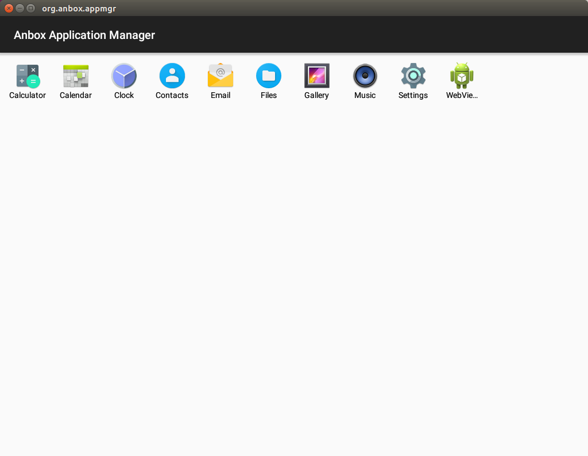
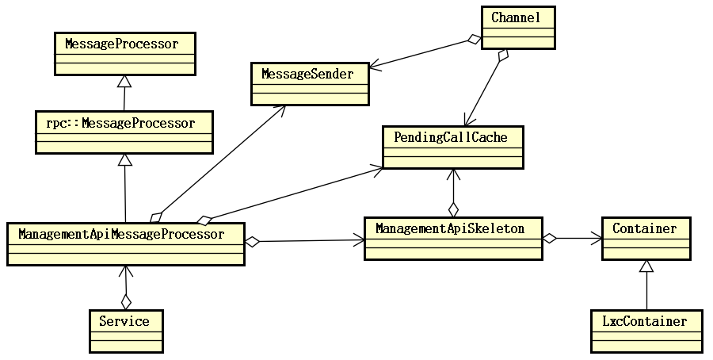

proj156 一种基于Linux系统运行Android 11的解决方案
高校队伍：广东东软学院 Bitcomet队
项目成员：邹明燊、田梓汎、张阳彬
指导教师：刘翠莲、罗泉
1. 项目简介
1.1 目标描述
本项目目标在现有Anbox实现Android 7在Linux平台正常运行的基础上将其进一步完善，实现Android11在Linux（Ubuntu20.04）平台上的运行，还可根据用户需求下载并正常运行第三方软件。Anbox（Android in a box）是一个基于容器的方法，可以在普通的 GNU/Linux 系统上启动完整的 Android 系统。它将Android应用放进密封的容器中，无需直接访问硬件或数据，所有硬件或数据的访问都是通过与主机上的Anbox守护进程进行的。由于Anbox 直接跑在硬件上，没有软件模拟层，无需虚拟化硬件即可运行 Android，因此可以无缝桥接硬件加速功能。
本项目主要基于Anbox来参考实现，旨在完成以下四个目标：
-
目标1：完成针对Android11的SDcard的文件系统挂载机制、SELinux安全机制、非特权模式下运行处理对应在Docker容器环境内的处理。
-
目标2：配置安卓项目工程，实现并配置好各个需要的系统模块和AIDL、HIDL、HAL模块，搭建初步目调试与测试的Demo1版本，使用adb配合Scrcpy对内部Android远程访问以方便有个初步预期，并且方便本项目有个初步测试的环境。
-
目标3：完成Anbox通信部分实现向Android 11的移植，使Android能与Anbox外部实现跨系统环境通信。
-
目标4：完成Anbox其余部分的各个模块移植，使Android的三个基础部分OpenGL、HWC图形输出、键鼠输入能正常工作。
目前，我们的赛题目标完成度如下：
表1.1 赛题完成度 目标编号 基本完成情况 额外说明 1 基本完成（≈85%） 1. 与SDcard以及SELinux组件相关的Android 11的基本功能、SDcard文件管理、安装第三方软件、闹铃与联系人等基础应用测试均通过。
2. 非特权模式仅做了部分处理，未进行测试。2 基本完成（≈90%） 1. 搭建好相关容器，进行相关基础测试并通过。
2. 目前网络部分由于在Docker特权模式下运行，可能会有Bug。3 初步完成（≈80%） 1. 完成跨系统环境通信，安卓中Anbox的相关模块可以使用QEMU_PIPE（实际容器中是没有QEMU设备，Anbox实际用了Unix Domain Socket代替，但其通信的相关通道仍然叫做QEMU PIPE）进行通信或者使用Anbox实现的RPC调用。
2. Anbox的OpenGL ES的emulation库实现初步测试能通过该通信创建QEMU_PIPE连接，实现RPC调用获取到主机侧支持的OpenGL信息。
3. 由于各个部分的模块暂未完全移植好，还需要全部移植才能测试所有功能。4 初步测试（≈60%） 1. 已经把相应的Anbox的各个模块的移植到Android中，其中GPS与Audio模块使用了谷歌给Goldfish的实现。
2.OpenGL ES实现和HWC实现在Android 11下无法测试，由于Android 11的相关变动，导致输出画面调用了Gralloc的PostFB去输出，而在Anbox中是未做这部分RPC调用的，输出画面失败。
3.把相关方案在Android 10上进行测试，测试可以输出画面，但卡在安卓Launcher第一屏画面。总计 ≈80% 还有更多的工作需要测试和完成。
1.2 比赛题目分析和相关资料调研
1.2.1 题目分析
(1). 题目旨在实现Linux的运行Android11的解决方案，在Linux上基于容器技术隔离一个环境运行Android，其运行机制是直接基于宿主机内核下运行Android，其运行效率非常高效，对系统资源占用和运算资源的损耗都极低。
(2). 在所有实现方案中，选定了基于Anbox的实现方式。由于现今用户使用的软件硬件环境不统一，Mesa 3D等实现方式对图形处理硬件的支持有限，用户的图形环境不一定是Wayland而是X11偏多。同时考虑到可能未来需要在各类国产主机运行架构不统一（Arm、x86、MIPS、LoongArch等架构），Anbox对于不同系统不同硬件的兼容性优势使得其是现有方案中最合适的。
(3). 在实现过程中，考虑到Anbox的LXC也是比较老的容器架构，同时其集成LXC的操作不利于后续容器核心升级、配置调整、在线镜像更新和镜像快速部署等，所以使用Docker来支撑其Android的运行环境，对比最初的LXC方案来说拥有更高的灵活性和可靠性。
(4). 项目计划是初期构建调整好Android高版本核心跑起一个基于Docker容器实现的Demo，后续逐步移植剩余Anbox组件到Android11上。
1.2.2 资料调研
现有方案
(1). Anbox：基于LXC容器运行Android 7，利用QEMU pipe实现Android与Anbox上层Linux软件用户接口进行通信。其通信中输入的数据包括：接收传入的传感器数据，接收用户鼠标点击和触摸事件，接收APP启动和窗口调整数据、Anbox上层软件屏幕缓冲区的可选回传等；通信中输出的数据则包括：传输Android上2D图形画面和OpenGL的渲染指令到Linux环境中渲染、传输音频输出数据。Anbox运行Android的机制的实现方式就是通过将Android内必要的输入输出交给外部Linux环境处理，其实现接口均通过软件实现，这样对于兼容性容易出现问题的OpenGL加速部分尤为友好。但是也正因为如此，虽然保证了其兼容性，但是其支持的OpenGL库选择就非常有限，目前仅支持OpenGL ESv2，性能和稳定性会较为一般。总结其优缺点就是对于各类操作系统兼容性好，外部有D-Bus和OpenGL环境基本就能正常运行，缺点是通过QEMU pipe传输到外部渲染的方式，其模拟的库只支持OpenGL ESv2，稳定性一般，性能也比较逊色。

(2). Waydroid: 基于Anbox繁衍而来的实现方案，Anbox除了2018年后面稍微更新了下支持Snap和Anbox Cloud外，实现的方案已经多年未进行更新，核心无较大变化，所支持的最新Android系统仍然是2016年11月24日发布的Android 7.1.1。因此Waydroid应运而生，其前身是基于Anbox的中期版本，基于重建脚本、更新的LXC3、Mesa 3D、最新的Android8-11版本、去掉Anbox代码，后续演化后改名Waydroid。Waydroid更加新颖和完善，其优势在于最新的Android、直接通过Mesa 3D驱动显卡、支持Wayland环境；缺点是只支持Wayland，Mesa 3D作为开源驱动，只支持部分显卡。

(3). 其他方案：xDroid、Kydroid、KMRE等第三方闭源方案：xDroid和Kydroid也是类似Anbox的方式，其核心原理仍然是通过容器技术让Android直接运行在Linux上，以Linux原生程序运行，由于其闭源，能够了解的公开信息不多。KMRE从其论文1来看是类似Waydroid的Mesa3D加速的方案，其性能损耗低，但其一大特色优点在于其对接了现在国产系统常见的Xorg环境下的桌面环境，同时做好支持触摸、优化各类输入输出、传感器等的实现，对比以上开源项目，KMRE不但只实现了基本需求，而且在人性化交互等方面，易用性更高。
| 现有方案 | 优点 | 缺点 |
|---|---|---|
| Anbox | 对各类环境兼容性好、原生运行速度快 | 稳定性一般、其所支持的Android版本比较老旧、且Android内只支持OpenGL ESv2,图形化API老旧 |
| waydroid | 最新Android、支持Wayland、直接驱动显卡 | 只支持Wayland图形环境、Mesa 3D开源驱动只支持部分显卡，兼容性一般 |
| 其他闭源方案 | 闭源或商用的项目在用户交互等方面做到了更优，易用性更高 | 闭源，能查到公开的信息不多 |
项目需求和状况
(1). 项目现状：
由于西方加速技术封锁的态势，我们必须迫切的找到相应的替代方案来给国内用户有选择的权利。虽然国产Linux系统目前在飞速发展，但其应用生态紧缺，甚至一个输入法、Linux版的QQ这种基础性应用都Bug百出，使用体验极其糟糕，导致用户普及度始终不能有明显的上涨，用户也不情愿使用国产Linux作为替代系统。
因此我们需要一些中期可替代性方案，Linux上部署安卓这一个想法应运而生，我们可以利用安卓作为一个暂时的方案来承载现在的业务需求例如办公，视频通话等。安卓在2020年的中国移动操作系统市场份额占比达75.98%，相当于每4个使用智能手机的人中就有3名安卓用户。因其用户整体基数大，所以针对安卓应用开发者非常多，面对安卓延申出来的各种业务层出不穷，整个生态对于国产Linux有很大的优势。
我们可以直接借助这个优势，在Linux上运行安卓系统，完成国产Linux跟安卓生态的整合，进而发展国产Linux，并对其产生助力。而同期也比较少同类型的厂商成功实现在GNU/Linux系统中运行着整个Android系统，市场上有空缺的需求等待填补，我们的项目就是要针对这个市场的空缺，成功实现在Linux系统中运行Android系统而不是单纯的模拟，为我们之后国产Linux和国内安卓的生态整合打下坚实的基础。
(2). 项目需求：
单纯的Linux无法成功运行安卓系统中的各种应用程序，因为安卓在Linux层面上主要增加了ART虚拟机和其Application Framework框架，以及其他细枝末节的修改和优化。我们的项目需求就是需要通过一个安卓中间层在Linux上提供安卓运行环境，使安卓当中的应用程序也可以运行在我们所配置的容器当中。但是却不是以模拟器的方式，而是使用当前Linux内核基于容器技术隔离来运行安卓系统，不需要大量的软件模拟，又保证了安全性。
我们选择了这种方案，对各类硬件资源可以被无缝桥接，让性能的效率损失降到比较低的水准，完全可以满足我们日常需求。该方案补充了当前国产Linux应用生态，可以实现国产Linux操作系统应用生态不足的前提下需要快速扩充用户数量的愿景，让国产Linux操作系统走入平民百姓家。
2. 参考资料
- KMRE: An Efficient and Compatible Runtime to Execute Android Application on Linux System, [Date of Conference: 10-13 December 2021]. 10.1109/ICCC54389.2021.9674681
- Anbox(所有项目仓库): https://github.com/anbox
- 安卓AOSP源码获取来自清华大学开源软件镜像站点
1.1 方案设计

此项目基于原有Anbox方案进行更新及改进。我们改进使用基于Docker容器技术提供隔离的、与Linux并行运行的安卓环境，此种改进是对原有LXC容器的更优替代。但是该改进需要重新适配与调试，需要大量移植与测试的工作量才能保证维持原有稳定性，并更好地利用更多的新特性开发新的功能。除此之外更新新的Android 11替代原有Android 7，此过程需要重新移植原有Anbox的各个组件适配新安卓上的HIDL接口。同时需要修改Android底层，经过大量的移植和测试的工作，让其能正常运行在Docker容器中。此项目利用Anbox部分现成的模块，在Linux下上层APP实现与安卓底层对接输入输出和OpenGL ES的渲染等实现。这些设计目标在于使用Docker替代原有Anbox使用的较旧的LXC容器技术，并更新其Android 7到Android 11，其中技术革新点如下：
(1). 使用更新的Android 11替代原有老旧的Android 7。
(2). Android 11中的HAL层使用了HIDL接口这一新的Treble的架构，更加规范及更高的可移植性。
(3). 使用生态丰富、快速部署、可移植、更加可控的Docker作为底层容器运行环境替代原有集成LXC这一高耦合、低可移植性的实现方式。
(4). 活用成熟的Anbox部分对多平台高兼容性的实现方式，以应对目前国产系统多种硬件平台和系统环境的问题。
在以上的设计方案下，我们针对其各个部分进行详细设计，详细方案见“Bitcomet设计文档”。
(1). 底层部分：Docker下的安卓11容器设计：

• 高可移植设计：使用了Docker便集成了Docker相关的优点，Docker相比原有LXC有可移植性、版本控制、回滚、快速部署等优点。同时原有LXC容器与Anbox进行了高度集成，在目前多平台和可移植性考量下，原有Anbox的系统镜像与各个配置选项都不能方便地进行更改，这将会导致我们适配到国产系统中遇到重重困难。
• 快速迭代更新：使用Docker提供底层容器运行环境，利用其快速部署的优点，可以使Android 11更加灵活地运行在目标平台。
• 优雅的数据管理：利用Docker的版本控制和回滚特性，设计恢复出厂设置并清空用户数据的功能，并为以后Android镜像更新时能够快速部署，及时把新版本推送做准备。
• 较高系统安全性：把安卓放在密封的容器当中，其外部访问数据都通过QEMU pipe交给上层Anbox前端应用接管，其应用也只有基本的输入输出功能，安全性较高。
• 极低的运行损耗：通过容器直接基于现有系统Linux内核运行，并基于Linux内核特性进行容器隔离，这一方案提高了稳定性并降低了运行损耗。
(2). 中间层：安卓中运行qemud提供QEMU pipe这一高速管道与上层通信：

• 成熟的通信方案：这一通信方案基于成熟的Anbox的通信这一部分的功能实现，其上层Session Manager提供接口，由安卓和Anbox两端利用相应API把接口打开进行通信。其实现方案最早可以追溯到2013年的谷歌Goldfish的Android模拟器实现并且沿用至今，实现了Android与Linux的之间通信的兼容性与健壮性并存的实现方式。
• 便捷的交互方式：本方案在安卓与Linux之间的通信方案设计基于QEMU pipe这一高速通道，直接在Android与Linux之间打通一个灵活的通信渠道。本方案不用考虑需要的具体通信实现，直接在安卓HAL层服务和上层Anbox前端应用中打开相应通道进行安卓与Linux对接的数据通信。
(3). 上层部分：Anbox通过QEMU pipe与底层通信，接收安卓的渲染信息渲染以及音频在上层APP输出，把上层前端APP的输入和状态传递给安卓。

• 兼容性高：主要体现在Linux下对Anbox的兼容性，这一方案的设计把安卓需要与Linux交互和获取的数据都通过QEMU pipe传输给Linux处理，上层Anbox前端不依赖硬件。尤其是渲染也是调用系统现有OpenGL库实现，兼容性相比虚拟机来说更高。
• 易用性高：通过上层Anbox应用接管底层安卓的输入输出等部分，相当于把安卓应用直接映射给了Linux应用。这一操作安卓应用非常接近使用Linux应用的方式，极大的提高了其易用性，操作起来也更加简单。
1.2 开发计划与进展
1. 开发计划
1.1 开发计划表
| 时间节点 | 内容 |
|---|---|
| 5月1日-5月31日 | 完成安卓11运行在Docker上的核心Demo |
| 6月1日-6月15日 | 移植Anbox各个组件到安卓11，初步先移植Anbox的OpenGL和输入部分 |
| 6月16日-6月30日 | 完成Anbox的通信组件移植 |
| 7月1日-7月31日 | 完成剩余Anbox组件移植并测试 |
| 8月1日-8月15日 | 完成最终项目提交、整理项目、准备答辩内容 |
2. 比赛过程中的重要进展
2.1 比赛进展表
| 时间节点 | 负责人 | 完成工作 | 里程碑 |
|---|---|---|---|
| 3月7日-3月22日 | 田梓汎 | Android 11内核在docker上运行的实现 | |
| 3月23日-4月5日 | 张阳彬 | Android 11组件的改造和规范 | |
| 4月6日-5月4日 | 邹明燊 | 完成Android工程文件编写和ASOP编译 | |
| 5月5日-5月14日 | 田梓汎、张阳彬 | 完成Android基础核心功能测试 | |
| 5月15日-5月20日 | 邹明燊 | 完成Android基础核心功能的运行演示 | 核心对Docker适配成功完成于5月20日 |
| 5月21日-6月5日 | 全体队员 | 完成项目文档编写和整理 | |
| 6月20日-7月10日 | 邹明燊、张阳彬 | 完成Anbox中间层的通信组件移植 | 成功完成于7月10日并通过基础测试 |
| 7月1日-7月15日 | 张阳彬、田梓汎 | 完成对Anbox的图形及渲染部分的分析文档 | |
| 7月10日-7月25日 | 邹明燊 | 完成Anbox中上层各组件移植 | |
| 7月25日-8月2日 | 邹明燊 | 完成OpenGL部分渲染的初步RPC调用测试 | 成功完成于8月2日 |
| 8月2月-8月15日 | 全体成员 | 完成项目文档编写和整理 |
3. 项目测试
测试思路主要分为三步：第一步检测Bitcomet能否成功启动容器内的Android系统，主要检测其Android系统开启是否正常，是否成功进入系统界面。如果第一步成功，则基础系统运行测试正常，可以保证Bitcomet内Android系统的基本运作，遂进入第二步测试。第二步测试主要针对Bitcomet容器内的Android系统主要功能是否正常，这一步的检测将包括三个部分分别针对Android系统的三大主要功能进行测试,其中包括有系统信息测试，基础功能测试以及基础应用测试。通过第二部测试的目的是检测Bitcomet内启动成功后Android系统的整体功能完善性。最后是第三步的测试。上两部分的测试主要是检测系统的基本运行以及功能，这一部分测试主要检测在Bitcomet中运行Android的效率，会通过统一变量同时对比Bitcomet与市面上成熟的Android模拟器的性能差距，从而展现Bitcomet方案不可忽视的优势。
测试环境
本次测试环境硬件参数将统一为下表状态
| 部件 | 参数 |
|---|---|
| 系统 | Ubuntu20.04 |
| CPU | 英特尔 i5-8300H@2.3Ghz |
| 内存 | DDR4 16GB (2400MHz) |
| 硬盘 | 主硬盘 128G SSD 从硬盘 2TB HDD |
| 显卡 | 英伟达 GTX1050&英特尔UHD Graphics 630 |
3.1 基础系统运行测试简介以及结果
这一步我们主要通过安装环境→加载内核和挂载文件系统→启动Bitcomet并连接容器内的Android来查看其运行情况。
在根据测试步骤，下载测试镜像，安装环境并加载启动Bitcomet所需模块后，Bitcomet可成功启动，通过相关命令可以进入Android shell模式，QtScrcpy投屏软件可以连接Bitcomet并显示Android界面。系统成功启动，运行正常。
3.2 系统功能测试简介以及结果
这一步测试我们分为三个部分进行，以下为各个部分的测试简介：
(1). 系统信息测试，主要测试系统设备名。
(2). 基础功能测试，主要测试各基础主要功能例如默认语言，WIFI等。
(3). 基础应用测试，主要测试系统默认应用运行情况以及第三方应用运行情况。
测试结果主要如下：
| 成功 | 失败 |
|---|---|
| 系统信息和基础功能 | 输入(远程) |
| 通讯录、闹铃、浏览器等基础应用以及第三方应用 | 音频 |
| 图形渲染(GPU软件渲染) | 蓝牙WIFI |
3.3 性能对比测试简介以及结果
性能对比测试环节：采用Genymotion模拟器来作为对比对象，同时会进行CPU性能对比测试以及内存开销对比测试。CPU性能测试主要使用Android平台主流的基础测试应用Geekbench以及安兔兔AI。Geekbench主要针对于CPU的浮点运算和整数运算部分给出性能量化指标，而安兔兔AI则主要针对CPU中的AI运算部分给出性能量化指标。内存开销测试我们选择各方案仅运行一个Android系统，查看整体内存占用，测出内存开销。
CPU测试部分：在Geekbench测试中，bitcomet成绩为单核4437分，多核14398分，Genymotion模拟器对照组单核4251分，多核12626分。相比于Genymotion模拟器，bitcomet单核领先约4.3%，多核领先约14%。性能提升相当于当今移动端旗舰级芯片高通骁龙865和高通骁龙888的性能差距(性能对比数据来自www.socpk.com) ，也就是芯片厂商用一年时间更迭优化出的性能。而在安兔兔AI测试中，Genymotion模拟器得分为48231，bitcomet得分为58840，bitcomet更是取得了约22%的显著优势。
内存测试部分：分别测试仅打开Genymotion启动Android系统和仅打开Bitcomet启动Android系统，不运行任何其他应用程序，记录其内存的开销情况，Genymotion模拟器占用整个系统约3.8GiB的内存空间，而Bitcomet占用仅为2.8GiB。占用内存大小仅为Genymotion模拟器的3/4。
3.4 总结
在系统运行测试，系统功能测试部分，Bitcomet已成功在Ubuntu20.04下运行。除部分功能未完善外，通讯录，闹铃，浏览器等基础应用及系统基础信息均可正常使用与显示，也可根据需求安装第三方软件。
通过Bitcomet与Genymotion在CPU性能测试与内存开销测试的情况对比可知，Bitcomet无论是在CPU利用效率还是内存开销上都优于Genymotion。在虚拟化技术成熟的今天，14%性能提升意味着每一百台计算机平台可以少买12台计算机。每百万可以省下12万，又或是在能耗方面做出改进，我们可以限制机器的运行功耗，降至模拟器同样的性能，但是省下更多的电。与此同时，Bitcomet还只是一个“半成品”，其潜力之大可想而知。
演示视频链接: https://pan.baidu.com/s/1FLokWbiU3WNq_i5bhbj7sA?pwd=ew23 提取码: ew23
1.3 项目总结与目录说明
1. 分工和协作
| 项目 | 负责 |
|---|---|
| Docker运行Android 11基础核心的实现 | 田梓汎和张阳彬 |
| Androidlunch工程和项目管理 | 邹明燊 |
| Android基础核心功能测试 | 田梓汎 |
| Andox基础组件移植 | 邹明燊 |
| 图形渲染输入输出测试 | 张阳彬 |
2. 提交仓库目录和文件描述
| 仓库 | 说明 |
|---|---|
| Proj156-bitcomet | 安卓manifests存放位置，项目说明 |
| Proj156_device_bitcomet | 安卓lunch工程，源码device/bitcomet目录 |
| Proj156_frameworks_native | 修改的android/frameworks/native目录 |
| Proj156_frameworks_base | 修改的android/frameworks/base目录 |
| Proj156_system_bpf | 修改的android/system/bpf目录 |
| Proj156_external_selinux | 修改的android/external/selinux目录 |
| Proj156_system_netd | 修改的android/system/netd目录 |
| Proj156_system_libhwbinder | 修改的android/system/libhwbinder目录 |
| Proj156_system_core | 修改的android/system/core目录 |
| Proj156_vendor_bitcomet | 增加的android/vendor/bitcomet目录放一些工程额外加入的包 |
| Proj156_hardware_interfaces | 修改的android/hardware/interfaces目录 |
| Proj156_hardware_libhardware | 修改的android/hardware/libhardware目录 |
注：由于安卓项目太多，所有项目需要通过repo工具组织管理起来，不需要单独拉取覆盖。
2. Bitcomet设计开发文档
简介
Bitcomet是一个基于原有Anbox向Android 11移植实现一种基于Linux系统运行Android 11的解决方案，以下均称呼为Bitcomet。其主要与原有Anbox的改进点在于Android所运行的环境由LXC实现变为更加主流的Docker实现，原有在Anbox不再更新的Android 7更新为Android 11。此外，为了让Android 11能在Docker中运行，本项目针对其SDcard的文件系统挂载机制、SELinux安全机制等进行了相应的移植与优化。为了让Android能在Linux上满足正常使用以及调用GPU进行渲染的需求，本项目参考并移植原有Anbox以及Google安卓模拟器中的相关实现，在移植并搭建起Anbox的跨系统环境通信基础上，使相应的Android各类接口打通到外部Linux，其中最基础的包括图形渲染、图形输出、键鼠输入这三个部分的接口。
本项目主要还是基于Anbox来参考实现，旨在完成以下四个目标：
- 目标1：完成Android11的SDcard的文件系统挂载机制、SELinux安全机制、非特权模式下运行处理对应在Docker容器环境内的处理。
- 目标2：完成初步目调试与测试的Demo1版本，使用adb配合Scrcpy对内部Android远程访问以方便有个初步预期，并且方便本项目有个初步测试的环境。
- 目标3：完成Anbox通信部分实现向Android 11的移植，使Android能与Anbox外部实现跨系统环境通信。
- 目标4：完成Anbox安卓其余部分的各个模块移植，使Android的三个基础部分OpenGL、HWC图形输出、键鼠输入能正常工作。
目前，我们的赛题完成度如下：
| 目标编号 | 基本完成情况 | 额外说明 |
|---|---|---|
| 1 | 基本完成（≈85%） | 1. 与SDcard以及SELinux组件相关的Android 11的基本功能、SDcard文件管理、安装第三方软件、闹铃与联系人等基础应用测试均通过。 2. 非特权模式仅做了部分处理，未进行测试。 |
| 2 | 基本完成（≈90%） | 1. 搭建好相关容器，进行相关基础测试并通过。 2. 目前网络部分由于在Docker特权模式下运行，可能会有Bug。 |
| 3 | 初步完成（≈80%） | 1. 完成跨系统环境通信，安卓中Anbox的相关模块可以使用QEMU_PIPE（实际容器中是没有QEMU设备，而是使用了Unix Domain Socket代替，但其通信的相关通道仍然叫做QEMU PIPE）进行通信或者使用Anbox实现的RPC调用。 2. Anbox的OpenGL ES的emulation库实现初步测试能通过该通信创建QEMU_PIPE连接，实现RPC调用获取到主机侧支持的OpenGL信息。 3. 由于各个部分的模块暂未完全移植好，还需要全部移植才能测试所有功能。 |
| 4 | 初步测试（≈60%） | 1. 已经把相应的Anbox的各个模块的移植到Android中，其中GPS与Audio模块使用了谷歌给Goldfish的实现。 2.OpenGL ES实现和HWC实现在Android 11下无法测试，由于Android 11的相关变动，导致输出画面调用了Gralloc的PostFB去输出，而在Anbox中是未做这部分RPC调用的，输出画面失败。 3.把相关方案在Android 10上进行测试，测试可以输出画面，但卡在安卓Launcher第一屏画面。 |
| 总计 | ≈80% | 还有更多的工作需要测试和完成 |
2.1 Bitcomet方案设计与分析
1. 为什么选择使用容器与Anbox
本Bitcomet方案旨在于实现在Linux中运行Android 11的解决方案。在这个方案中会遇到一些问题，如下图1.1是Android系统框架图、图1.2GNU/Linux系统架构图，这两张图清晰明了地展现了Android与Linux环境的差异：
Android与Linux除了内核相似外是完全不一样的系统环境，尤其体现在系统libc库、应用的运行方式、输入输出设备的管理方式、图像合成方式、OpenGL接口、网络管理组件等方面。这些组件绝大部分将会与Linux冲突，导致Linux运行异常或者Android无法直接运行，同时Android的APP也无法在Linux内直接运行。


旧方案：在过去面向用户的常见方案中，常用虚拟机来实现这个方案。利用虚拟化功能运行一个Android虚拟机，虚拟机内虚拟或者模拟了电脑绝大部分的硬件，这样既能解决两者接口不同，又能简单实现Android在其他系统上的运行。但是随之而来也有许多缺点：虚拟化需要硬件支持、虚拟化对CPU性能有一小部分损耗、虚拟机本身运行一个全新的系统也需要更多硬件资源、在虚拟机与主机系统间切换也无法很好地利用上常见PC系统的多任务多窗口特性。
相比起虚拟机的实现方法，容器基于Linux内核的命名空间隔离，也能提供一个隔离了Android系统与Linux之间的磁盘、内存等的运行环境。同时容器不需要虚拟化，不需要跑起整个Linux内核，相对应的对硬件资源要求较少，这三个方面看起来有优势。但是容器又出现不一样的问题：相比一般Android模拟器使用的虚拟机，容器又缺少输入输出接口、3D加速与显示输出。

Bitcomet方案：使用容器提供Android运行的环境来实现，其原因如下：该方案可能会在国产化平台上运行，面向不同的硬件环境下不一定支持虚拟化；对硬件资源需求较少；针对容器缺少的输入输出接口以及3D加速与显示输出，谷歌为解决这些问题在安卓模拟器AVD上设计了一套新的方案。另外Anbox在一部分输入输出及3D加速方面正好是复用了谷歌的安卓模拟器的方案，利用了其提供的QEMU_PIPE、emugl、传感器模拟、音频输出等方面提供的实现。
以上是复用了谷歌的实现，但是前端不一样，安卓模拟器的前端是方便谷歌模拟器实现的，而Anbox是需要利用上PC系统的多任务多窗口、方便对接输入输出和控制等的特性。因此Anbox这部分针对谷歌的方案进行了参考重写，把Android中各个不同APP的窗口映射到不同的模拟Surface上。但相应的代价是，由于谷歌3D渲染部分是通过把其指令传输出来交给外部OpenGL渲染，这样性能利用是真机渲染的70%-90%（数据来自参考文献[1]），有一定的损耗。

2. 总结
本项目是这类移植方式中其中一种兼容性较好的方案，其OpenGL ES渲染是通过传输给Anbox并由emugl转换后交给Linux用户空间的OpenGL库实现，OpenGL的对应版本的API是统一的，而Linux平台一般都有GPU驱动+相应库，即使没有也会使用软件OpenGL库，所以这种方案理论上是能适应更多GPU平台的。
总的来说这类移植方式主要都有一类共通点，为了把输入输出、显示渲染等接口打通到对应平台，而不断衍生的技术都有新的优化与改进，尽量减少通信期间数据的拷贝，降低损耗，提高硬件利用率。
2.2 Bitcomet方案设计
本方案是在Ubuntu 20.04(下图GNU/Linux部分)，部署好Docker环境。
Bitcomet底层：其中Android 11的Docker镜像以及Anbox相关组件，均为本方案的实现，经过编译打包并导入Docker的密封环境中。
Bitcomet中间层：在Android 11中，Anbox的后端及相关模块通过桌面下的Anbox前端产生的QEMU pipe进行通信。
Bitcomet上层：Android在容器内缺少图形输出、渲染、音频和键盘设备操作的输入输出功能，其相关功能依赖Anbox的Gralloc、HWC、Audio等相关模块实现。这些模块在QEMU pipe通信的基础上，搭建起对外Linux沟通桥梁，为外部Linux对接内部Android的输入输出、图形输出渲染等功能。外部Anbox针对相关功能实现调用Linux系统库，实现了输入输出渲染等功能。
下面是针对Bitcomet各个部分的详细设计：

其中各个部分有相关的实现文档，具体见当前项目下Docs目录内其他文档。
1. Docker下的安卓11容器设计
1.1 主要工作
在Bitcomet方案底层部分中，使用Docker容器提供Android运行的环境。当然仅仅提供一个环境还不行，Android 11需要依赖Binder、SELinux、SDcardFS、Ashmem等环境的支持。具体的工作如下：
(1). 内核定制：Binder与Ashmem需要针对内核定制，目前较新的Linux 5.x已经自带BinderFS和Ashmem模块的支持，旧的内核需要使用Anbox提供的Binder或Ashmem模块。
(2). SELinux安全机制处理：本方案选择了对其相关方法进行屏蔽处理，即使实际测试及Docker文档中都反应了Docker下是可以实现这个支持的，但我们仍然选择了屏蔽，其原因如下：
① Docker外是针对指定配置文件的SELinux安全配置，而Android内的还需要单独配置并需要一部分特权。
② 不同平台的Linux内核不一定提供并使用了SELinux安全模块，遇上没有此模块的平台均无法运行。
③ 使用SELinux后，Docker官方提到可能会对性能有一定的损失。
(3). 文件系统挂载处理：SDcardFS部分是安卓8以后提供的模块，可以让Android接管对SDcardFS下的目录文件的访问权限控制。我们选择了使用FUSE来实现挂载SDcard的虚拟文件系统，FUSE是较旧版本的Android采用的一种方式，其实现主要在用户空间，能提供几乎与SDcardFS相同的功能。但FUSE挂载SDcard的实现也有缺点，其速度比SDcardFS的实现慢，我们仍然选择FUSE方案的原因如下：
① SDcardFS的实现依赖Linux内核实现，不同Linux内核对其支持不一样。
② 由于SDcardFS在内核实现，挂载它也需要一定的特权。
1.2 Bitcomet底层部分特点
Docker下的安卓11容器设计：
• 高可移植设计：使用了Docker便集成了Docker相关的优点，Docker相比原有LXC有可移植性、版本控制、回滚、快速部署等优点。同时原有LXC容器与Anbox进行了高度集成，在目前多平台和可移植性考量下，原有Anbox的系统镜像与各个配置选项都不能方便地进行更改，这将会导致我们适配到国产系统中遇到重重困难。
• 快速迭代更新：使用Docker提供底层容器运行环境，利用其快速部署的优点，可以使Android 11更加灵活地运行在目标平台。
• 优雅的数据管理：利用Docker的版本控制和回滚特性，设计恢复出厂设置并清空用户数据的功能，并为以后Android镜像更新时能够快速部署，及时把新版本推送。
• 较高系统安全性：把安卓放在密封的容器当中，其外部访问数据都通过QEMU pipe交给上层Anbox前端应用接管，其应用也只有基本的输入输出功能，安全性较高。
• 极低的运行损耗：通过容器直接基于现有系统Linux内核运行，并基于Linux内核特性进行容器隔离，这一方案提高了稳定性并降低了运行损耗。
2. 安卓与上层Anbox通信设计
2.1 主要工作
在Bitcomet中间层中，我们复用了Anbox这一实现，把其相关实现移植到Android11，并实现其上面的各种功能。我们的主要工作如下：
(1). 通信实现：把Anbox基于QEMU pipe和qemud的实现移植到Android11，这两个实现的本质均为通过QEMU pipe实现，但由于容器内没有实质上的QEMU pipe设备，因此Anbox魔改了一下使用Unix Domain Socket实现，这种实现从原理上说与QEMU pipe的区别在于：① QEMU pipe设备是通过QEMU的相关模拟实现的，其模拟的设备支持DMA，理论上比Unix Domain Socket这一软件实现更有效率；② Anbox这里相关实现的名字还是叫做QEMU pipe，而QEMU pipe本身也有tcp socket相关的实现。
(2). 设备映射：在Docker中映射外部Anbox的Session Manager创建的Socket监听到容器内的/dev对应设备，以便容器内的QEMUd或者QEMU pipe相关实现进行调用。
(3). Anbox通信模块移植：容器内Anbox为这些实现封装成了叫做HOST_CONNECTION的方法，容器外Anbox基于谷歌的ProtoBuf实现一种通信模型，其中包括OpenGL ES、HWC、模拟的Surface、Anbox Proxy等组件的RPC调用，以便内部Anbox通过这些封装的方法直接调用，我们也针对这些方法进行了移植和部分测试。
2.2 Bitcomet中间层部分特点
安卓中运行qemud提供QEMU pipe这一高速管道与上层通信：
• 成熟的通信方案：这一通信方案基于成熟的Anbox的通信这一部分的功能实现，其上层Session Manager提供接口，由安卓和Anbox两端利用相应API把接口打开进行通信。其实现方案最早可以追溯到2013年的谷歌Goldfish的Android模拟器实现并且沿用至今，实现了Android与Linux的之间通信的兼容性与健壮性并存的实现方式。
• 便捷的交互方式：本方案在安卓与Linux之间的通信方案设计基于QEMU pipe这一高速通道，直接在Android与Linux之间打通一个灵活的通信渠道。本方案不用考虑需要的具体通信实现，直接在安卓HAL层服务和上层Anbox前端应用中打开相应通道进行安卓与Linux对接的数据通信。
3. 上层Anbox的OpenGL ES渲染以及输入输出设计
3.1 主要工作
在Bitcomet的上层中，我们也复用Anbox的实现，把其相关部分移植到Android11和Ubuntu 20.04上。Android中对接外部Linux主要在图形输出、渲染、输入输出部分缺失，这些部分需要靠Anbox在中间通信层的部分实现之上，建立各个部分的连接，打通到外部Linux上。我们的主要工作如下：
(1). HAL层模块移植：这一部分主要工作在Android中HAL层的移植以及测试，我们经过在Android工程中对AIDL与HIDL对应HWC与Gralloc部分的模块进行配置，Gralloc的HAL层复用最新Android 11中对安卓模拟器的AVD实现。我们复用Android 11的这一部分主要原因在于其安卓模拟器的实现与Anbox的实现是一样的，都是软件实现的调用ashmem申请图形缓冲区。
(2). 图形输出部分移植：从Android的HAL层中Gralloc与HWC模块开始，图形输出部分的核心模块是HWC模块，它负责被SurfaceFlinger调用进行图层合成输出到显示设备，而这里我们选择在Anbox的实现上进行移植修复。该实现主要测试点在于图形HWC，HWC中的发送图层部分开始，通过Anbox的RPC调用，发送图层到外部Anbox的Surface上，需要测试相关图层测试数据是否能到达外部Anbox上合成输出。
(3). 输入输出部分移植：在输入部分，Anbox的Session Manager注册了多个Event设备以及audio传输设备，我们需要把这些设备在Docher中映射到/dev下，以便在Android中调用。其中音频部分也复用Android11针对模拟器部分的audio HAL实现，原因在于Anbox这些部分的实现也是复用Android模拟器的实现，其原理是把音频PCM数据通过Anbox的RPC调用方法发送到外部Anbox进行解码播放。
(4). OpenGL ES部分移植：Anbox的OpenGL库主要在Android的 /system/lib64/egl 目录下安装了三个动态库，分别为libEGL_emulation.so、libGLESv1_CM_emulation.so和libGLESv2_emulation.so。Anbox在其中提供虚拟的硬件厂商配置，为Android提供OpenGL ES渲染库。但Anbox实际渲染工作并不是上述三个库文件，这三个库文件作用为采集Android中APP渲染的OpenGL ES指令，并通过高速传输通道qemu-pipe传输将指令传至宿主机Anbox进程中，实际渲染工作由宿主机执行。这部分主要也是移植好Anbox这几个库，检验该三个库与上层Anbox的通信，这部分库也是复用谷歌Android的安卓模拟器AVD实现，主要测试工作在于做相关指令的通信以及实际渲染测试。
3.2 Bitcomet上层部分特点
Anbox通过QEMU pipe与底层通信，接收安卓的渲染信息渲染以及音频在上层APP输出，把上层前端APP的输入和状态传递给安卓：
• 兼容性高：主要体现在Linux下对Anbox的兼容性，这一方案的设计把安卓需要与Linux交互和获取的数据都通过QEMU pipe传输给Linux处理，上层Anbox前端不依赖硬件。尤其是渲染也是调用系统现有OpenGL库实现，兼容性相比虚拟机来说更高。
• 易用性高：通过上层Anbox应用接管底层安卓的输入输出等部分，相当于把安卓应用直接映射给了Linux应用。这一操作安卓应用非常接近使用Linux应用的方式，极大的提高了其易用性，操作起来也更加简单。
3. Bitcomet实验测试
由于Bitcomet是一款基于Anbox方案进行移植，实现Android 11系统在Linux平台上运行的产品，其相关资料缺乏，因此市面上并没有针对此类产品进行测试的工具，我们利用了市场上主流的Android基准测试应用，选取安兔兔AI以及Geekbench4.0两款评估APP对Bitcomet进行性能评估测试，这样能简洁有效地衡量bitcomet运行安卓的效率。同时为了对比Bitcomet的性能优势，同时选用市场占有率较高的Genymotion模拟器进行同步测试。Genymotion是一款优秀专业高性能的安卓Android模拟器，它同时支持 Windows、Mac以及Linux平台，其模拟运行速度优秀，画面流畅、且支持模拟器多开、全屏等特性，充分经过了市场的认证，在模拟器领域占有一席之地。因此本次实验将Genymotion作为Bitcomet的性能参照及对比对象。
本次测试的基本思路为：首先，测试Bitcomet的系统运行功能，确保其能够实现Android系统的正常开启及进入系统界面。其次，测试系统各项主要功能是否正常，主要分为三个内容：其一，测试基础信息是否正常显示；其二，测试基础功能是否正常运行；其三，测试基础应用是否能够正常运行，以及是否支持第三方应用安装与运行。再者，测试Bitcomet内运行Android的CPU工作效率，对比模拟器是否有CPU利用效率上的差距。最后，测试Bitcomet对于内存开销的情况，对比模拟器是否有内存占用较低的优势。
1. 实验准备
1.1 环境准备
本次测试环境硬件参数如下表所示。

1.2 实验策略
Genymotion与Bitcomet两者的实现架构有所不同，前者采用市面上目前大多数模拟器产品都在使用的虚拟化实现方案，而后者则创新性地使用了Dokcer以提供安卓运行的环境的方案。
为了测试Bitcomet功能完整性以及展现其性能优异的特点，同时为了保证测试的公平性以及方便后续的调试与开发，本次测试统一环境，采用物理机搭配Ubuntu20.04系统方案作为测试环境。
根据前文所讲述的测试思路，本次测试制定如下测试策略。
1.2.1 系统运行测试
系统运行测试主要是测试系统从镜像下载到环境搭建以及最终运行的一系列步骤，测试其最终是否能正常启动。总结系统运行测试的基本步骤为：
(1) 下载测试镜像。
(2) 安装Docker环境，并加载内核模块和挂载binder文件系统。
(3) 启动Bitcomet并进入Android shell模式。
(4) 执行logcat查看启动日志。
(5) 利用QtScrcpy投屏软件连接Bitcomet显示Android界面。
1.2.2 系统功能测试
系统功能测试是验证Bitcomet在Linux下容器启动方案的重要部分。主要是验证Bitcomet基本功能使用和应用程序的运行情况。系统功能测试主要分为三个测试内容：
(1) 基础信息测试，测试其是否能够显示设定的设备名称与型号。
(2) 基础功能测试，测试其是否能修改系统默认语言。
(3) 基础应用测试，测试其通信录，闹钟，浏览器等系统自带应用以及第三方应用是否能够正常使用。
1.2.3 CPU性能测试
本次测试采用统一环境，该项测试结果可认为是两种方案运行Android系统其CPU利用效率的对比。本次测试利用安兔兔AI评测App以及GeekBench App进行CPU性能评估。其中安兔兔AI评测主要是针对CPU中的AI运算能力进行针对性分析，其使用目前主流的Inception v3和MobileNet-SSD两种神经网络模型，进行Image Classification和Object Detection两项关键测试，基于准确率和速度等指标，对设备的AI运算能力进行综合评估。而Geekbench是一个跨平台基准测试工具，可以同时应用于多种平台之上例如windows、Android以及IOS，其重点考察CPU的运算能力。遂CPU测试主要分为三个测试内容：
(1) 利用安兔兔AI App对Bitcomet以及Genymotion进行Image Classification测试。
(2) 利用安兔兔AI App对Bitcomet以及Genymotion进行Object Detection测试。
(3) 利用Geekbench App对Bitcomet以及Genymotion进行CPU运算能力测试。
1.2.4 内存开销测试
本次测试还对Bitcomet与Genymotion运行时内存开销情况进行对比，分别测试仅运行Genymotion模拟器启动Android系统和仅运行Bitcomet启动Android系统情况下的内存开销情况。总结内存开销测试步骤为：
(1) 仅运行Genymotion， 启动Android系统。
(2) 记录内存开销情况。
(3) 仅运行Bitcomet，启动Android系统。
(4) 记录内存开销情况。
2. 实验结果及分析
2.1 系统运行测试结果及分析
根据测试步骤，下载测试镜像，安装环境并加载启动Bitcomet所需模块后，Bitcomet可成功启动，通过相关命令可以进入Android shell模式，QtScrcpy投屏软件可以连接Bitcomet并显示Android界面。系统成功启动，运行正常。
2.2 系统功能测试结果及分析
根据测试内容，本次测试为系统功能测试设计如下测试用例：

在基础信息测试中，各测试用例所得结果均与预期结果一致，设备名称与型号可根据用户设定显示，基础信息测试全部正常。

在基础功能测试中，系统语言可根据用户定义显示，蓝牙，WIFI功能无法正常使用，基础功能测试部分正常。

在基础应用测试中，各测试用例所得结果均与预期结果一致，通讯录、闹铃、浏览器等系统App以及第三方App均可正常使用，基础应用测试全部正常。
2.3 CPU性能测试结果及分析
为了方便观察，同时两个app主要展示CPU性能效率的不同，所以本节实验将Bitcomet与Genymotion利用安兔兔AI App进行Image Classification和Object Detection两项关键测试与Geekbench App对CPU进行单核与多核测试结果进行集中对比分析，其结果如图2.1、2.2所示。


从图2.1中可以看出Bitcomet最终得分相较于Genymotion有显著提升。相比Genymotion模拟器，Bitcomet的总分高出约22%，主要体现在Image Classification-Speed和Object Detection-Speed上。说明在AI算力上面Bitcomet对比Genymotion表现不俗。
在Geekbench测试中，Bitcomet多核得分高出Genymotion得分约14%。比较CPU时，在Android移动端设备上，14%的性能提升相当于当今移动端旗舰级芯片高通骁龙865和高通骁龙888的性能差距(数据来自：移动芯片性能排行榜，链接:www.socpk.com)，也就是芯片厂商用一年时间更迭优化出的性能。
两个测试都证明了Bitcomet在CPU的利用效率上对比模拟器具有显著优势。CPU是每一台计算机的运算和控制核心，无论是Android手机还是平板甚至是家里的智能微波炉，都可以算是一台计算机。CPU在Android应用上面尤为重要，因为在用户除了游戏之外的方方面面都扮演了重要的角色。无论是打开一个视频进行观看，需要CPU的解码器进行视频解码，还是点开网页进行浏览，都需要CPU的身影。特别是日常办公场景下，CPU的作用和需求无疑是比GPU大。所以Bitcomet在CPU的利用效率上的显著优势在办公场景就会更加明显突出。
Bitcomet在CPU利用效率方面相比较Genymotion有如此大的提升，其主要原因是在于Genymotion采用的是虚拟化技术，而虚拟化是在硬件层之上进行了封装，相比于Bitcomet采用的基于容器技术，虚拟化技术必然会损失一部分硬件性能。
2.4 内存开销测试结果及分析
本次还对两者运行时内存开销情况进行对比分析，分别测试仅打开Genymotion启动Android系统和仅打开Bitcomet启动Android系统，不运行任何其他应用程序，记录其内存的开销情况，具体情况如图2.3所示。

从图2.3中可以看出，在同等情况下，Bitcomet在内存占用方面远低于Genymotion。Bitcomet在内存开销上的优势使得在相同硬件条件下，Bitcomet可实现比Genymotion更加多的后台App留存率，这对用 户的体验至关重要。我们使用Android系统时，经常在看视频的时候会回微信消息，这就要求我们在开启 视频应用在前台运行的同时，后台程序微信必须有足够的内存空间让其在后台保持运行，如果内存不足的话用户就可能在看视频，玩游戏的时候错过重要的消息通知。内存占用率的优势可以显著提高用户体验。
Bitcomet采用基于容器技术，不同于普通的模拟器需要执行完整的硬件资源虚拟化，更有着更少的抽象层，所以在内存占用的优势上面会比虚拟机大。
3. 测试总结
在系统运行测试，系统功能测试部分，Bitcomet已成功在Ubuntu20.04下运行。除部分功能未完善外，通讯录，闹铃，浏览器等基础应用及系统基础信息均可正常使用与显示，也可根据需求安装第三方软件。
通过Bitcomet与Genymotion在CPU性能测试与内存开销测试的情况对比可知，Bitcomet无论是在CPU利用效率还是内存开销上都优于Genymotion，这说明即便是在硬件性能较低的机器上，Bitcomet性能表现也可超越市场上同类型模拟器。当然不仅仅是应用于性能较低的机器上。更多的在虚拟化的场景下，规模越大，15%性能提升带来的经济性就会越明显。以十作为单位的这个数量等级上，可能我们15%的性能提升可以少买两台机子达到同样的性能，但是虚拟化更多的时以百，以千做单位。在虚拟化领域每一度电都要“斤斤计较”现状下，15%的提升显然是不可忽视的。
4.1 安卓图形架构中的Anbox的HAL模块
在安卓官方文档当中，安卓的系统架构被分为五层架构，其五层架构分别为
| 架构 | 主要负责的内容 |
|---|---|
| 应用框架 APP FRAME | 应用框架主要为开发者使用，开发者API提供了很多映射至底层的HAL接口，提供实现驱动程序的相关信息 |
| Binder IPC | 主要负责进程间的通讯，不仅仅是顶层进程之间的交互，更重要的是支持顶层进程和安卓系统服务间甚至是HAL的交互 |
| 系统服务 | 安卓把各种各样的系统服务包装为各种模块化组件，可以方便后续升级。其中包括有DNS解析模块，媒体模块等。 |
| 硬件抽象层HAL | HAL可以定义一个接口给硬件供应商实现，主要用于实现系统服务和底层驱动程序的通讯和运作。其被封装成一个模块被安卓系统随时调用 |
| Linux内核 | Android使用的linux内核与一般的内核不同，如：必须支持Binder、包含一些特殊功能（内存守护） |
安卓图形部分架构以及anbox图形模块
其中在anbox的图形模块中，最主要关心的就是HAL层以及LINUX KERNEL。因为本项目中安卓是运行在容器内的，安卓不能像原生一样顺利地让HAL层直接调用其LINUX KERNEL内的驱动和所需资源，而是要跟容器外部正在运行的LINUX环境对接。在本项目中的这一目标就是努力让容器内的安卓与容器外本不兼容的LINUX环境对接，成功把图形化渲染的工作交给LINUX环境当中，实现渲染效率比软件模拟成倍提升的效果。
在安卓主要的图形模块当中，所有的渲染信息流大致如下：

1. HAL层
在本文档中，主要聚焦于HAL层anbox的实现。在安卓系统中HAL层包括两个组件，HWC(Hardware Composer)与Gralloc。
1.1 HWC(Hardware Composer)模块
1.1.1 初步介绍
无论开发者使用什么渲染API，一切的内容都将会渲染到surface上，surface可以被理解为是一个生产缓冲区，整一个被渲染的surface队列都会被surfaceflinger所消耗而准备合成到屏幕上。

合成是一种将缓冲区队列内所有元素有规律有层级的覆盖为一块画面的操作。 在安卓系统中，surface队列内的元素通常是大小不一且杂乱的，因为来自多个不同源的缓冲区，例如有些是出于顶部的状态栏，有些是出于底部的导航栏，而中间的应用内容也是一层缓冲区，直接送出来的画面完全不是屏幕在显示的画面。怎么解决这个问题？在安卓中选择了效率最高的方式来处理合成问题——将三个缓冲区全部传送到显示硬件，并指示它从不同的缓冲区读取屏幕不同部分的数据。这个操作的承担者就是硬件混合渲染器HAL层。
合成到屏幕这一步就需要调用我们的HAL层中的HWC了。HWC主要跟屏幕显示组件通讯，获得屏幕相应的参数，计算出最常用的四个不同的部分——状态栏、系统栏、应用以及壁纸/背景所覆盖的画面，再接受surfaceflinger需要合成的队列所拥有的内容，把这些内容分别合成到状态栏、系统栏、应用以及壁纸/背景所覆盖的画面后再与屏幕沟通，最终显示在真正现实的手机屏幕上。
当然，HWC也会负责虚拟屏幕合成，同时会向硬件设备注册三个回调，以便应对这些事件的发生：屏幕热插拔，刷新和VSync信号。
在anbox当中，HWC还有一个比较重要的功能，它可以把单个安卓里面的应用程序映射到桌面环境的单个窗口中，因为在桌面环境下我们不需要再像现实中让HWC把所有内容合成到一块屏幕上。anbox会通过其hwcomposer实现告诉SurfaceFlinger为每个应用程序获取一个层，并将其与从Android WindowManager收到的额外信息结合起来，将单个层映射到应用程序。

1.1.2 HWC模块重要实现
(1) 安卓中HWC部分的实现
首先surfaceflinger创建HWComposer。
//节选自main_surfaceflinger.cpp
void SurfaceFlinger::init() {
// Initialize the H/W composer object. There may or may not be an
// actual hardware composer underneath.
mHwc = new HWComposer(this,
*static_cast<HWComposer::EventHandler *>(this));//调用构造函数
}
HWComposer构造函数。
//节选自DisplayHardware/HWComposer.cpp
HWComposer::HWComposer(const sp<SurfaceFlinger>& flinger)
: mFlinger(flinger),
mAdapter(),
mHwcDevice(),
mDisplayData(2),
mFreeDisplaySlots(),
mHwcDisplaySlots(),
mCBContext(),
mEventHandler(nullptr),
mVSyncCounts(),
mRemainingHwcVirtualDisplays(0)
{
for (size_t i=0 ; i<HWC_NUM_PHYSICAL_DISPLAY_TYPES ; i++) {
mLastHwVSync[i] = 0;
mVSyncCounts[i] = 0;
}
loadHwcModule(); //调用HWC模块
}
HWComposer构造函数一般使用loadHwcModule方法加载来HWComposer模块。
//节选自DisplayHardware/HWComposer.cpp
void HWComposer::loadHwcModule()
{
ALOGV("loadHwcModule");
// 其定义在hardware.h中，表示一个硬件模块
hw_module_t const* module;
// 加载硬件厂商提供的hwcomposer模块，HWC_HARDWARE_MODULE_ID定义在hwcomposer_defs.h中，表示"hwcomposer"
if (hw_get_module(HWC_HARDWARE_MODULE_ID, &module) != 0) {
ALOGE("%s module not found, aborting", HWC_HARDWARE_MODULE_ID);
abort();
}
hw_device_t* device = nullptr;
// 通过硬件厂商提供的open函数打开一个"composer"硬件设备，HWC_HARDWARE_COMPOSER也定义在hwcomposer_defs.h中，表示"composer"
int error = module->methods->open(module, HWC_HARDWARE_COMPOSER, &device);
if (error != 0) {
ALOGE("Failed to open HWC device (%s), aborting", strerror(-error));
abort();
}
uint32_t majorVersion = (device->version >> 24) & 0xF;
// mHwcDevice是HWC2.h中定义的HWC2::Device，所有与HWC的交互都通过mHwcDevice
if (majorVersion == 2) { // HWC2，hwc2_device_t是hwcomposer2.h中的结构体
mHwcDevice = std::make_unique<HWC2::Device>(
reinterpret_cast<hwc2_device_t*>(device));
} else { // 设备是基于HWC1，这里用HWC2去适配，Android7.0及以前默认都是HWC1，hwc_composer_device_1_t是hwcomposer.h中的结构体
mAdapter = std::make_unique<HWC2On1Adapter>(
reinterpret_cast<hwc_composer_device_1_t*>(device));
uint8_t minorVersion = mAdapter->getHwc1MinorVersion();
if (minorVersion < 1) {
ALOGE("Cannot adapt to HWC version %d.%d",
static_cast<int32_t>((minorVersion >> 8) & 0xF),
static_cast<int32_t>(minorVersion & 0xF));
abort();
}
mHwcDevice = std::make_unique<HWC2::Device>(
static_cast<hwc2_device_t*>(mAdapter.get()));
}
// 获取硬件支持的最大虚拟屏幕数量，VirtualDisplay主要是用来用于录屏
mRemainingHwcVirtualDisplays = mHwcDevice->getMaxVirtualDisplayCount();
}
先加载hwcomposer模块得到hw_module_t，再打开composer设备得到hw_device_t。所以一般情况下是先有HAL模块，再有实现此模块的硬件设备。
//节选自hardware/libhardware/include/hardware/hardware.h
typedef struct hw_module_t {
//每一个HAL库都会提供的一个方法methods，
struct hw_module_methods_t* methods;
}hw_module_t;
typedef struct hw_module_methods_t {
//这个 methods的数据结构中只有一个函数指针变量open，用来打开指定的硬件设备。
int (*open)(const struct hw_module_t* module, const char* id,
struct hw_device_t** device);
} hw_module_methods_t;
在每个HAL层模块实现都要定义一个HAL_MODULE_INFO_SYM数据结构，并且该结构的第一个字段必须是hw_module_t，下面是anbox当中hwcomposer模块的定义。
//节选自vendor/anbox/android/hwcomposer/hwcomposer.cpp
hwc_module_t HAL_MODULE_INFO_SYM = {
.common = {
.tag = HARDWARE_MODULE_TAG,
.version_major = 1,
.version_minor = 0,
.id = HWC_HARDWARE_MODULE_ID,
.name = "Hardware Composer Module",
.author = "Anbox Developers",
.methods = &hwc_module_methods,
}
};
这里Anbox中对应method如下，实现了打开模块的接口。
//节选自vendor/anbox/android/hwcomposer/hwcomposer.cpp
//methods数据结构中只有一个函数指针变量open，用来打开指定的硬件设备（Anbox中是软件实现）
static hw_module_methods_t hwc_module_methods = {
.open = hwc_device_open
};
//Anbox中这里注册了自己实现的HWC设备的各种接口对接函数
static int hwc_device_open(const hw_module_t* module, const char* name, hw_device_t** device) {
ALOGD("%s", __PRETTY_FUNCTION__);
auto dev = new HwcContext;
dev->device.common.tag = HARDWARE_DEVICE_TAG; // 标记这是一个硬件设备的模块
dev->device.common.version = HWC_DEVICE_API_VERSION_1_1; // HWC版本，Anbox还是用的HWC1
dev->device.common.module = const_cast<hw_module_t*>(module); // 对应上面模块信息结构体定义
dev->device.common.close = hwc_device_close; // HWC设备关闭调用的操作
dev->device.prepare = hwc_prepare; // 图层的配置，surfaceflinger把要显示的layers放在displays参数里，针对其参数对应Display硬件配置图层的参数类型等。
dev->device.set = hwc_set; // hwc_set方法，在SurfaceFlinger要求HWC发送图层数据，该方法进行发送相关图层数据给Anbox在Linux的前端实现。
dev->device.eventControl = hwc_event_control; // 使能/禁止vsync，Anbox未实现
dev->device.blank = hwc_blank; // 老的hwc(1.3以前)用blank控制display on/off，最新的hwc里用setPowerMode。实现的功能差不多，但setPowerMode的参数更丰富，不像blank就0/1。
dev->device.query = hwc_query;
dev->device.getDisplayConfigs = hwc_get_display_configs; //获取显示硬件的配置，一般是多显示屏等配置的获取返回，Anbox只有一个主显示器，因此这里只是配置0让HWC进入获取属性的调用。
dev->device.getDisplayAttributes = hwc_get_display_attributes;//获取显示硬件的各个属性
dev->device.registerProcs = hwc_register_procs;
dev->device.dump = nullptr;
*device = &dev->device.common;
return 0;
}
可以看出这一阶段已经完成了Anbox的HWC具体实现的模块打开并注册接口，下面将针对hwc_get_display_attributes和hwc_set进行讲解，这两个是Anbox在HWC这一部分显示输出的精髓。
(2) Anbox部分重要实现
在Anbox的HWC模块中，其中最主要的就是hwc_get_display_attributes和hwc_set的实现，这里把一些重要的部分进行讲解。
hwc_get_display_attributes函数部分实现
//节选自vendor/anbox/android/hwcomposer/hwcomposer.cpp
static int hwc_get_display_attributes(hwc_composer_device_1* dev,
int disp, uint32_t config,
const uint32_t* attributes,
int32_t* values) {
if (disp != 0 || config != 0) {
return -EINVAL;
}
//建立与Anbox前端的QEMU_PIPE连接
DEFINE_AND_VALIDATE_HOST_CONNECTION();
// 下面各个属性都是通过与Anbox连接获取返回的值
while (*attributes != HWC_DISPLAY_NO_ATTRIBUTE) {
//针对各种属性返回对应的值，其中HWC_DISPLAY_NO_ATTRIBUTE是这个attributes数组的结束
switch (*attributes) {
//获取屏幕VSYNC垂直同步信号的周期值
case HWC_DISPLAY_VSYNC_PERIOD:
*values = rcEnc->rcGetDisplayVsyncPeriod(rcEnc, disp);
break;
//获取屏幕宽高和DPI参数
case HWC_DISPLAY_WIDTH:
*values = rcEnc->rcGetDisplayWidth(rcEnc, disp);
break;
case HWC_DISPLAY_HEIGHT:
*values = rcEnc->rcGetDisplayHeight(rcEnc, disp);
break;
case HWC_DISPLAY_DPI_X:
*values = 1000 * rcEnc->rcGetDisplayDpiX(rcEnc, disp);
break;
case HWC_DISPLAY_DPI_Y:
*values = 1000 * rcEnc->rcGetDisplayDpiY(rcEnc, disp);
break;
default:
ALOGE("Unknown attribute value 0x%02x", *attributes);
}
++attributes;
++values;
}
return 0;
}
可以看得出hwc_get_display_attributes是通过Anbox获取屏幕的参数返回给安卓HWC模块，方便给SurfaceFlinger和HWC进行屏幕输出。
接下来查看其中rcEnc调用的方法的来源：
//节选自vendor/anbox/android/hwcomposer/hwcomposer.cpp
//其来自于建立QEMU_PIPE的地方
#define DEFINE_AND_VALIDATE_HOST_CONNECTION() \
//获取Anbox的QEMU_PIPE连接，这部分不再赘述
HostConnection *hostCon = HostConnection::get(); \
if (!hostCon) { \
ALOGE("hwcomposer.anbox: Failed to get host connection\n"); \
return -EIO; \
} \
//获取Host端的rcEncoder方法返回的远程调用对象
renderControl_encoder_context_t *rcEnc = hostCon->rcEncoder(); \
if (!rcEnc) { \
ALOGE("hwcomposer.anbox: Failed to get renderControl encoder context\n"); \
return -EIO; \
}
其来自于建立QEMU_PIPE的地方，通过与外部Anbox建立连接，利用Anbox 基于 Protobuf 设计的 RPC 进行通信，实现远程方法调用。
这里以rcEnc->rcGetDisplayWidth(rcEnc, disp)为例，远程能调用到Anbox在Host端的GL库函数返回的值：
//节选自vendor/anbox/src/anbox/graphics/emugl/RenderControl.cpp
int rcGetDisplayWidth(uint32_t display_id) {
(void)display_id;
// 调用到实际的GL库的函数，获取实际的垂直分辨率大小
return static_cast<int>(anbox::graphics::emugl::DisplayInfo::get()->vertical_resolution());
}
最终能正确通信获得rcGetDisplayWidth返回值。
以上的获取DisplayWidth的实现，其流程从自下向上来看，其流程如下：
① hwc_get_display_attributes中的rcEnc->rcGetDisplayWidth远程调用获得了Host端Anbox的窗口垂直分辨率的值。
② dev->device.getDisplayAttributes = hwc_get_display_attributes是该HWC注册的方法，被populateConfigs函数调用该模块获取信息。
③ 接着被HWC2On1Adapter::populatePrimary()、HWC2On1Adapter::hwc1Hotplug、HWC2On1Adapter::createVirtualDisplay等方法调用，主要用于在显示设备创建、热插拔时获取显示设备信息返回给SurfaceFlinger及HWC。
hwc_set函数部分实现
dev->device.set是SurfaceFliner要求HWC发送图层数据，在这里Anbox对应注册的函数是hwc_set，其函数实现如下：
//节选自vendor/anbox/android/hwcomposer/hwcomposer.cpp
static int hwc_set(hwc_composer_device_1_t* dev, size_t numDisplays,
hwc_display_contents_1_t** displays) {
// HWC上下文
auto context = reinterpret_cast<HwcContext*>(dev);
if (displays == NULL || displays[0] == NULL)
return -EFAULT;
//通过QEMU_PIPE与Anbox连接，原理同上一步hwc_get_display_attributes中的实现
DEFINE_AND_VALIDATE_HOST_CONNECTION();
// 循环处理当前display的所有层
for (size_t i = 0 ; i < displays[0]->numHwLayers ; i++) {
const auto layer = &displays[0]->hwLayers[i];
//如果是指针或者需要跳过而不用刷新的层，跳过
if (layer->flags & HWC_SKIP_LAYER ||
layer->flags & HWC_IS_CURSOR_LAYER)
continue;
// Anbox下，HWC注册的compositionType是HWC_FRAMEBUFFER_TARGET
if(layer->compositionType == HWC_FRAMEBUFFER_TARGET) {
// 通过getprop去读取“anbox.layer_name”这一系统配置，获取当前要传输的Layer名称
std::string layer_name_temp = android::base::GetProperty("anbox.layer_name", "");
std::string layer_name = layer_name_temp.substr(0, layer_name_temp.find('#'));
strncpy(layer->name, layer_name.c_str(), layer_name.size());
}
// 根据图层的三组必要参数，发送Layer
rcEnc->rcPostLayer(rcEnc,
layer->name,
cb->hostHandle,
layer->planeAlpha / 255,
layer->sourceCrop.left,
layer->sourceCrop.top,
layer->sourceCrop.right,
layer->sourceCrop.bottom,
layer->displayFrame.left,
layer->displayFrame.top,
layer->displayFrame.right,
layer->displayFrame.bottom);
hostCon->flush(); //刷新缓冲区
}
// 通知Anbox所有发送完毕
rcEnc->rcPostAllLayersDone(rcEnc);
check_sync_fds(numDisplays, displays);
return 0;
}
该函数中，第一个系统配置“anbox.layer_name”是Anbox修改了SurfaceFlinger，在准备输出图层前把图层名称保存成这个配置中，具体实现如下：
//节选自：frameworks/native/services/surfaceflinger/BufferLayer.cpp
//SurfaceFlinger
void BufferLayer::setPerFrameData(const sp<const DisplayDevice>& displayDevice,
const ui::Transform& transform, const Rect& viewport,
int32_t supportedPerFrameMetadata,
const ui::Dataspace targetDataspace) {
RETURN_IF_NO_HWC_LAYER(displayDevice);
// Apply this display's projection's viewport to the visible region
// before giving it to the HWC HAL.
//获取可见区域
Region visible = transform.transform(visibleRegion.intersect(viewport));
// 寻找当前显示器的输出图层
const auto outputLayer = findOutputLayerForDisplay(displayDevice);
LOG_FATAL_IF(!outputLayer || !outputLayer->getState().hwc);
//获取HWC
auto& hwcLayer = (*outputLayer->getState().hwc).hwcLayer;
//保存当前图层名称到anbox.layer_name系统配置中
android::base::SetProperty("anbox.layer_name", mName.string());
//设置刚刚获取的可见区域到HWC
auto error = hwcLayer->setVisibleRegion(visible);
if (error != HWC2::Error::None) {
ALOGE("[%s] Failed to set visible region: %s (%d)", mName.string(),
to_string(error).c_str(), static_cast<int32_t>(error));c
visible.dump(LOG_TAG);
}
而rcEnc->rcPostLayer中planeAlpha、sourceCrop、displayFrame就是下图中各个区域。

① sourceCrop是对Layer进行剪切的，值截取部分Layer的内容进行显示；sourceCrop不超过Layer的大小，超过没有意义。
② displayFrame表示Layer在屏幕上的显示区域，具体说来，是sourceCrop区域在显示屏上的显示区域。displayFrame一般来说，小于屏幕的区域。而displayFrame可能比sourceCrop大，可能小，这都是正常的，只是需要做缩放，这就是合成时需要处理的。
而在外部Linux的Anbox中，上面rcEnc->rcPostLayer、rcEnc->rcPostAllLayersDone也是属于Anbox的RPC实现，这里只截取最终在Anbox中调用的地方，不多赘述。
//节选自vendor/anbox/src/anbox/graphics/emugl/RenderControl.cpp
void rcPostLayer(const char *name, uint32_t color_buffer, float alpha,
int32_t sourceCropLeft, int32_t sourceCropTop,
int32_t sourceCropRight, int32_t sourceCropBottom,
int32_t displayFrameLeft, int32_t displayFrameTop,
int32_t displayFrameRight, int32_t displayFrameBottom) {
//建立渲染结构体
Renderable r{
name,
color_buffer,
alpha,
{displayFrameLeft, displayFrameTop, displayFrameRight, displayFrameBottom},
{sourceCropLeft, sourceCropTop, sourceCropRight, sourceCropBottom}};
//发送给Anbox的Surface处理
frame_layers.push_back(r);
}
void rcPostAllLayersDone() {
if (composer) composer->submit_layers(frame_layers);
//提交Layer后刷新缓冲区
frame_layers.clear();
}
1.2 Gralloc模块
1.2.1 初步介绍
在android图形架构中，Gralloc属于低级别组件，用于给图形缓冲队列进行缓冲区分配，是一个内存分配器。其通过用法标志执行缓冲区分配。用法标志包括以下属性：
- 从软件 (CPU) 访问内存的频率
- 从硬件 (GPU) 访问内存的频率
- 是否将内存用作 OpenGL ES (GLES) 纹理
- 视频编码器是否会使用内存
例如，如果生产方的缓冲区格式指定 RGBA_8888 像素，并且生产方指明将从软件访问缓冲区，Gralloc将以R-G-B-A的顺序为每个像素创建一个4字节的缓冲区。如果情况相反，生产方指明仅从硬件访问其缓冲区且缓冲区作为 GLES 纹理，那么Gralloc可以做任何GLES驱动想要做的事情，比如BGRA排序、非线性swizzled布局和其他颜色格式。允许硬件使用其首选格式可以提高性能。
Gralloc 返回的句柄可以通过 Binder 在进程之间进行传递。
1.2.2 Gralloc模块的重要实现
(1) Gralloc在安卓中的实现
Gralloc主要定义了以HAL_MODULE_INFO_SYM为符号的类型为private_module_t的结构体
//节选自gralloc.cpp
static struct hw_module_methods_t gralloc_module_methods = {
.open = gralloc_device_open
};
struct private_module_t HAL_MODULE_INFO_SYM = {
.base = {
.common = {
.tag = HARDWARE_MODULE_TAG,
.version_major = 1,
.version_minor = 0,
.id = GRALLOC_HARDWARE_MODULE_ID,
.name = "Graphics Memory Allocator Module",
.author = "The Android Open Source Project",
.methods = &gralloc_module_methods
},
.registerBuffer = gralloc_register_buffer,
.unregisterBuffer = gralloc_unregister_buffer,
.lock = gralloc_lock,
.unlock = gralloc_unlock,
},
.framebuffer = 0,
.flags = 0,
.numBuffers = 0,
.bufferMask = 0,
.lock = PTHREAD_MUTEX_INITIALIZER,
.currentBuffer = 0,
};
private_module_t用于描述Gralloc模块下的系统帧缓冲区信息,主要作用是将图形缓冲区渲染到帧缓冲区。
//节选于gralloc/gralloc_priv.h
struct private_module_t {
gralloc_module_t base;
private_handle_t* framebuffer; //指向系统帧缓冲区的句柄
uint32_t flags; //用来标志系统帧缓冲区是否支持双缓冲
uint32_t numBuffers;//表示系统帧缓冲区包含有多少个图形缓冲区
uint32_t bufferMask; //记录系统帧缓冲区中的图形缓冲区的使用情况
pthread_mutex_t lock; //一个互斥锁，用来保护结构体private_module_t的并行访
buffer_handle_t currentBuffer; //用来描述当前正在被渲染的图形缓冲区
int pmem_master;
void* pmem_master_base;
struct fb_var_screeninfo info; //保存设备显示屏的动态属性信息
struct fb_fix_screeninfo finfo; //保存设备显示屏的固定属性信息
float xdpi; //描述设备显示屏在宽度
float ydpi; //描述设备显示屏在高度
float fps; //用来描述显示屏的刷新频率
};
gralloc_module_t用于描述gralloc模块信息，主要用于分配或者释放图形缓冲区。
//节选于hardware/gralloc.h
typedef struct gralloc_module_t {
struct hw_module_t common;
int (*registerBuffer)(struct gralloc_module_t const* module,
buffer_handle_t handle);//映射一块图形缓冲区到一个进程的地址空间去
int (*unregisterBuffer)(struct gralloc_module_t const* module,
buffer_handle_t handle);//取消映射一块图形缓冲区到一个进程的地址空间去
int (*lock)(struct gralloc_module_t const* module,
buffer_handle_t handle, int usage,
int l, int t, int w, int h,
void** vaddr);//锁定一个指定的图形缓冲区
int (*unlock)(struct gralloc_module_t const* module,
buffer_handle_t handle);//解锁一个指定的图形缓冲区
int (*perform)(struct gralloc_module_t const* module,
int operation, ... );
int (*lockAsync)(struct gralloc_module_t const* module,
buffer_handle_t handle, int usage,
int l, int t, int w, int h,
void** vaddr, int fenceFd);
int (*unlockAsync)(struct gralloc_module_t const* module,
buffer_handle_t handle, int* fenceFd);
int (*lockAsync_ycbcr)(struct gralloc_module_t const* module
buffer_handle_t handle, int usage,
int l, int t, int w, int h,
struct android_ycbcr *ycbcr, int fenceFd);
void* reserved_proc[3];
} gralloc_module_t;
alloc_device_t用于描述gralloc设备的信息。
//节选于hardware/gralloc.h
typedef struct alloc_device_t {
struct hw_device_t common;
int (*alloc)(struct alloc_device_t* dev,
int w, int h, int format, int usage,
buffer_handle_t* handle, int* stride);//用于分配一块图形缓冲区
int (*free)(struct alloc_device_t* dev,
buffer_handle_t handle);//用于释放指定的图形缓冲区
void (*dump)(struct alloc_device_t *dev, char *buff, int buff_len);
void* reserved_proc[7];
} alloc_device_t;
还有hw_module_t主要用于关联模块和设备，其在hardware.h被定义。
在gralloc.h中，还定义了GRALLOC_HARDWARE_GPU0设备,其主要是用于分配图形缓冲区，hw_module_t用于描述硬件抽象层Gralloc模块，而hw_device_t则用于描述硬件抽象层Gralloc设备，通过硬件抽象层设备可以找到对应的硬件抽象层模块。
图形缓冲区的结构则用private_handle_t来描述
//节选于gralloc/gralloc_priv.h
struct private_handle_t : public native_handle {
#else
struct private_handle_t {
struct native_handle nativeHandle;
#endif
enum {
PRIV_FLAGS_FRAMEBUFFER = 0x00000001
};
// file-descriptors
int fd; //指向一个文件描述符，这个文件描述符要么指向帧缓冲区设备，要么指向一块匿名共享内存
// ints
int magic;
int flags;//用来描述一个缓冲区的标志，当一个缓冲区的标志值等于PRIV_FLAGS_FRAMEBUFFER的时候，就表示它是在帧缓冲区中分配的。
int size;//用来描述一个缓冲区的大小
int offset;//用来描述一个缓冲区的偏移地址
// FIXME: the attributes below should be out-of-line
uint64_t base __attribute__((aligned(8)));//用来描述一个缓冲区的实际地址
int pid;//用来描述一个缓冲区的创建者的PID
GRALLOC_HARDWARE_GPU0设备使用结构体alloc_device_t来描述。结构体alloc_device_t有两个成员函数alloc和free，在上文当中[alloc_device_t用于描述gralloc设备的信息]已经提及。
//节选于hardware/gralloc.h
static inline int gralloc_open(const struct hw_module_t* module,
struct alloc_device_t** device) {
return module->methods->open(module,
GRALLOC_HARDWARE_GPU0, (struct hw_device_t**)device);
}
module指向的是一个用来描述Gralloc模块的hw_module_t结构体，它的成员变量methods所指向的一个hw_module_methods_t结构体的成员函数open指向了Gralloc模块中的函数gralloc_device_open。这里传入的设备名为GRALLOC_HARDWARE_GPU0，表示当前打开的是gpu设备。
下面这个函数主要是用来创建一个gralloc_context_t结构体，并且对它的成员变量device进行初始化。结构体gralloc_context_t的成员变量device的类型为gralloc_device_t，它用来描述一个gralloc设备。前面提到，gralloc设备是用来分配和释放图形缓冲区的，这是通过调用它的成员函数alloc和free来实现的。从这里可以看出，函数gralloc_device_open所打开的gralloc设备的成员函数alloc和free分别被设置为Gralloc模块中的函数gralloc_alloc和gralloc_free。
Gralloc主要就是通过上面两大函数来进行缓冲区的分配和释放。
//节选自gralloc.cpp
int gralloc_device_open(const hw_module_t* module, const char* name,
hw_device_t** device)
{
int status = -EINVAL;
if (!strcmp(name, GRALLOC_HARDWARE_GPU0)) {
gralloc_context_t *dev;
dev = (gralloc_context_t*)malloc(sizeof(*dev));
/* initialize our state here */
memset(dev, 0, sizeof(*dev));
/* initialize the procs */
dev->device.common.tag = HARDWARE_DEVICE_TAG; // 这是一个硬件模块标记
dev->device.common.version = 0;
dev->device.common.module = const_cast<hw_module_t*>(module);
dev->device.common.close = gralloc_close; // gralloc关闭
dev->device.alloc = gralloc_alloc; //分配图形缓冲区
dev->device.free = gralloc_free; // 释放图形缓冲区
*device = &dev->device.common;
status = 0;
} else {
status = fb_device_open(module, name, device);
}
return status;
}
(2) anbox部分重要实现
上面已经针对Gralloc模块基础进行来介绍，为了了解这一部分的实现原理，这里只关注整个Gralloc的HAL模块中Anbox注册的主要函数gralloc_alloc和gralloc_free进行介绍，而其中用于帧缓冲刷新的fb_post，Anbox并未实现。
gralloc_alloc及gralloc_free函数的实现
首先这里介绍gralloc_alloc以及gralloc_free函数，这里本质就是实现图形缓冲区的申请与释放，由于代码量较多，这里截取主要部分。
//节选自：vendor/anbox/android/opengl/system/gralloc/gralloc.cpp
//申请图形缓冲区
static int gralloc_alloc(alloc_device_t* dev,
int w, int h, int format, int usage,
buffer_handle_t* pHandle, int* pStride)
{
//当前gralloc设备
gralloc_device_t *grdev = (gralloc_device_t *)dev;
//一些标记，不同标记表面当前Gralloc申请的缓冲区的用途，比如用于camera的缓冲区
//
// Note: in screen capture mode, both sw_write and hw_write will be on
// and this is a valid usage
//
bool sw_write = (0 != (usage & GRALLOC_USAGE_SW_WRITE_MASK));
bool hw_write = (usage & GRALLOC_USAGE_HW_RENDER);
bool sw_read = (0 != (usage & GRALLOC_USAGE_SW_READ_MASK));
bool hw_cam_write = usage & GRALLOC_USAGE_HW_CAMERA_WRITE;
bool hw_cam_read = usage & GRALLOC_USAGE_HW_CAMERA_READ;
bool hw_vid_enc_read = usage & GRALLOC_USAGE_HW_VIDEO_ENCODER;
// 缓冲区大小，Anbox的这一模块是采用了ashmem这一共享内存来申请缓冲区
int ashmem_size = 0;
int stride = w;
GLenum glFormat = 0;
GLenum glType = 0;
int bpp = 0;
int align = 1;
// 针对各种图像格式选择不同的像素位数(bpp)大小、格式(glFormat)等配置信息
switch (format) {
case HAL_PIXEL_FORMAT_RGBA_8888:
case HAL_PIXEL_FORMAT_RGBX_8888:
case HAL_PIXEL_FORMAT_BGRA_8888:
bpp = 4;
glFormat = GL_RGBA;
glType = GL_UNSIGNED_BYTE;
break;
case HAL_PIXEL_FORMAT_RGB_888:
bpp = 3;
glFormat = GL_RGB;
glType = GL_UNSIGNED_BYTE;
break;
default:
ALOGE("gralloc_alloc: Unknown format %d", format);
return -EINVAL;
}
//针对不同用途给ashmem_size增加大小
if (sw_read || sw_write || hw_cam_write || hw_vid_enc_read) {
// keep space for image on guest memory if SW access is needed
// or if the camera is doing writing
if (yuv_format) {
size_t yStride = (w*bpp + (align - 1)) & ~(align-1);
size_t uvStride = (yStride / 2 + (align - 1)) & ~(align-1);
size_t uvHeight = h / 2;
ashmem_size += yStride * h + 2 * (uvHeight * uvStride);
stride = yStride / bpp;
} else {
size_t bpr = (w*bpp + (align-1)) & ~(align-1);
ashmem_size += (bpr * h);
stride = bpr / bpp;
}
}
//因为Anbox的实现没有实际图形硬件设备，从ashmem（Android 匿名共享内存，基于 mmap系统调用）申请图形缓冲区
//
// Allocate space in ashmem if needed
//
int fd = -1;
if (ashmem_size > 0) {
// 对齐page size;
ashmem_size = (ashmem_size + (PAGE_SIZE-1)) & ~(PAGE_SIZE-1);
// 申请gralloc-buffer区域的共享内存
fd = ashmem_create_region("gralloc-buffer", ashmem_size);
if (fd < 0) {
ALOGE("gralloc_alloc failed to create ashmem region: %s\n",
strerror(errno));
return -errno;
}
}
// 建立给申请方的回调
cb_handle_t *cb = new cb_handle_t(fd, ashmem_size, usage, w, h, frameworkFormat, format, glFormat, glType);
if (ashmem_size > 0) {
// 申请到了就map这片区域
//
// map ashmem region if exist
//
void *vaddr;
int err = map_buffer(cb, &vaddr);
if (err) {
close(fd);
delete cb;
return err;
}
// map成功就更新fd给回调
cb->setFd(fd);
}
// 这里是如果有一些情况需要回传Anbox在主机侧Surface的数据，比如需要录屏的时候就需要这种情况
//
// Allocate ColorBuffer handle on the host (only if h/w access is allowed)
// Only do this for some h/w usages, not all.
// Also do this if we need to read from the surface, in this case the
// rendering will still happen on the host but we also need to be able to
// read back from the color buffer, which requires that there is a buffer
//
if (usage & (GRALLOC_USAGE_HW_TEXTURE | GRALLOC_USAGE_HW_RENDER |
GRALLOC_USAGE_HW_2D | GRALLOC_USAGE_HW_COMPOSER |
GRALLOC_USAGE_HW_FB | GRALLOC_USAGE_SW_READ_MASK) ) {
DEFINE_HOST_CONNECTION;
// 建立QEMU_PIPE连接后获取Anbox端的数据，这里是建立Anbox端的Buffer，否则Anbox那边会丢掉。创建了就会把Handle返回给相关接口以便调用。
if (hostCon && rcEnc) {
cb->hostHandle = rcEnc->rcCreateColorBuffer(rcEnc, w, h, glFormat);
D("Created host ColorBuffer 0x%x\n", cb->hostHandle);
}
if (!cb->hostHandle) {
// Could not create colorbuffer on host !!!
close(fd);
delete cb;
return -EIO;
}
}
// 申请成功，把相关东西返回给对应接口，把申请的handle插入到已申请的列表（链表）
//
// alloc succeeded - insert the allocated handle to the allocated list
//
AllocListNode *node = new AllocListNode();
pthread_mutex_lock(&grdev->lock); // 互斥锁
// 临界区
node->handle = cb;
node->next = grdev->allocListHead;
node->prev = NULL; //单向链表
// 链表头插法
if (grdev->allocListHead) {
grdev->allocListHead->prev = node;
}
grdev->allocListHead = node;
pthread_mutex_unlock(&grdev->lock); //退出临界区，取消互斥锁
*pHandle = cb;
return 0;
}
//释放图形缓冲区
static int gralloc_free(alloc_device_t* dev,
buffer_handle_t handle)
{
const cb_handle_t *cb = (const cb_handle_t *)handle;
if (!cb_handle_t::validate((cb_handle_t*)cb)) {
ERR("gralloc_free: invalid handle");
return -EINVAL;
}
// 如果该Handle有在外部Anbox上的ColorBuffer，连接QEMU_PIPE并释放它。
if (cb->hostHandle != 0) {
DEFINE_AND_VALIDATE_HOST_CONNECTION;
D("Closing host ColorBuffer 0x%x\n", cb->hostHandle);
rcEnc->rcCloseColorBuffer(rcEnc, cb->hostHandle);
}
// 释放ashmem申请的区域
//
// detach and unmap ashmem area if present
//
if (cb->fd > 0) {
if (cb->ashmemSize > 0 && cb->ashmemBase) {
munmap((void *)cb->ashmemBase, cb->ashmemSize);
}
close(cb->fd);
}
// 从已申请的列表（链表实现）移除
// remove it from the allocated list
gralloc_device_t *grdev = (gralloc_device_t *)dev;
pthread_mutex_lock(&grdev->lock); // 互斥锁
// 进入临界区
AllocListNode *n = grdev->allocListHead;
// 找到链表中对应这个Handle
while( n && n->handle != cb ) {
n = n->next;
}
if (n) {
// buffer found on list - remove it from list
// 把Handle移出链表
if (n->next) {
n->next->prev = n->prev;
}
if (n->prev) {
n->prev->next = n->next;
}
else {
grdev->allocListHead = n->next;
}
delete n;
}
pthread_mutex_unlock(&grdev->lock); //退出临界区，取消互斥锁
delete cb;
return 0;
}
以上gralloc_alloc实现了图形缓冲区的申请，gralloc_free实现了缓冲区释放，但是在Anbox中，由于没有实际的图形硬件设备，其图形部分均由软件实现，因此其与图形缓冲区的相关实现均也由软件实现。与之相对应的，实际手机硬件中，这里的缓冲区是来自于硬件，例如通过FrameBuffer或者DRM显示设备进行申请等。
由于Anbox的图形缓冲区是软件实现的，同时在渲染的画面均在Linux这边的Anbox上实现的，这一实现便有了缺点，例如DRM的实现可以通过硬件DMA对图形缓冲器进行处理，而Anbox的软件实现只能靠CPU进行内存拷贝，尤其在录屏的情况下，屏幕数据需要让CPU拷贝到外部进行合成显示，又需要拷贝回来再让编码器进行编码，两趟拷贝浪费了许多CPU与内存的性能。
参考资料
- 自上而下解读Android显示流程（中上） - 知乎 (zhihu.com)
- Android图形系统系统篇之HWC_leontli的博客-CSDN博客_setclienttarget
- Andorid 硬件显示系统HWC&HWC2架构详解_coloriy的博客-CSDN博客_android display hwc
4.2 Anbox图形渲染实现
1. Anbox图形渲染相关组件

上图便是Anbox官方给出的架构图，从图中可以看到，Anbox主要有两个部分：Session Manager和Container Manager(Container Manager部分内容不在本文分析范围内)。其中Session Manager主要做了以下三部分工作：
1.1 虚拟Surfaceflinger
Surfaceflinger即Android的图像系统，可以将Android里的不同应用渲染的结构进行图层的合成，使得所有应用的渲染结果最终合成在一个窗口上。
1.2 虚拟Windowmanager
Windowmanager是指Android的窗口管理器，功能是给Android里的应用提供对应的窗口，即给每个应用提供自己的渲染界面。
1.3 虚拟Activitymanager
Activitymanager是指管理Android内部的进程管理器，主要功能是管理应用的启动、关闭等进程。
本文主要从Android端中的OpenGL ES初始化开始分析，到最终的指令经过Anbox端的翻译库进行翻译，最终由宿主机端的OpenGL进行图形渲染。下图为具体实现流程图：

2. OpenGL ES
Anbox的图形渲染部分实现与OpenGL ES息息相关，其实现了在Android模拟OpenGL相关库，接收相关指令并传输出去。下文将对OpenGL ES相关实现进行分析，在了解OpenGL ES之前，我们需要先了解什么是OpenGL。
2.1 什么是OpenGL
OpenGL是一套图像编程接口，对于开发者来说，其实就是一套C语言编写的API接口，通过这些接口，开发者可以调用显卡来进行计算机的图形开发。虽然OpenGL是一套API接口，但它并没有具体实现这些接口，接口的实现是由显卡的驱动程序来完成的。显卡驱动也是其他模块和显卡沟通的入口，开发者通过调用OpenGL的图像编程接口发出渲染命令，这些渲染命令被称为DrawCall，显卡驱动会将渲染命令翻译能被GPU理解的指令，然后通知GPU读取数据进行操作。
2.2 什么是OpenGL ES
OpenGL ES又是什么呢？它是为了更好地适应嵌入式等硬件较差的设备，推出的OpenGL的剪裁版，基本和OpenGL是一致的。Android从4.0开始默认开启硬件加速，也就是默认使用OpenGL ES来进行图形的生成和渲染工作。
2.3 如何使用OpenGL ES
了解Android如何使用OpenGL ES前，需要先对EGL有个简单了解，在本文中不涉及对EGL的深入分析。OpenGL虽然是跨平台的，但是在各个平台上也不能直接使用，因为每个平台的窗口都是不一样的，而EGL就是适配Android本地窗口系统和OpenGL ES桥接层。
OpenGL ES 定义了平台无关的 GL 绘图指令，EGL则定义了控制 displays，contexts 以及 surfaces 的统一的平台接口。
2.3.1 初始化与加载
Android7 加载OpenGL ES和EGL的源码在/frameworks/native/opengl/libs/EGL/。
当eglGetDisplay被调用时，OpenGL 的库文件就被加载了，具体过程是：
(1) EGL初始化
EGLDisplay eglGetDisplay(EGLNativeDisplayType display)//获取设备屏幕
EGLBoolean eglInitialize(EGLDisplay display, // 指定EGL显示连接
EGLint *majorVersion, // 指定 EGL实现返回的 主版本号，可能为NULL
EGLint *minorVersion); // 返回 EGL实现返回的 次版本号，可能为NUL
在EGL初始化过程中调用了OpenGL初始化函数Loader::open：
static EGLBoolean egl_init_drivers_locked() {
if (sEarlyInitState) {
// initialized by static ctor. should be set here.
return EGL_FALSE;
}
// get our driver loader
Loader& loader(Loader::getInstance());
// dynamically load our EGL implementation
egl_connection_t* cnx = &gEGLImpl;
if (cnx->dso == 0) {
cnx->hooks[egl_connection_t::GLESv1_INDEX] =
&gHooks[egl_connection_t::GLESv1_INDEX];
cnx->hooks[egl_connection_t::GLESv2_INDEX] =
&gHooks[egl_connection_t::GLESv2_INDEX];
//调用初始化OpenGL函数
cnx->dso = loader.open(cnx);
}
return cnx->dso ? EGL_TRUE : EGL_FALSE;
}
(2) OpenGL ES初始化
Loader::open(egl_connection_t* cnx) 初始化图形驱动，主要是初始化这些函数表和指针。Loader::open(egl_connection_t* cnx) 的定义如下。
static void* load_wrapper(const char* path) {
void* so = dlopen(path, RTLD_NOW | RTLD_LOCAL);
ALOGE_IF(!so, "dlopen(\"%s\") failed: %s", path, dlerror());
return so;
}
#ifndef EGL_WRAPPER_DIR
#if defined(__LP64__)
#define EGL_WRAPPER_DIR "/system/lib64"
#else
#define EGL_WRAPPER_DIR "/system/lib"
#endif
#endif
//设置模拟器属性（是否在模拟器中运行？在模拟中运行时是否有GPU支持？）
static void setEmulatorGlesValue(void) {
char prop[PROPERTY_VALUE_MAX];
property_get("ro.kernel.qemu", prop, "0");
if (atoi(prop) != 1) return;
property_get("ro.kernel.qemu.gles",prop,"0");
if (atoi(prop) == 1) {
ALOGD("Emulator has host GPU support, qemu.gles is set to 1.");
property_set("qemu.gles", "1");
return;
}
// for now, checking the following
// directory is good enough for emulator system images
const char* vendor_lib_path =
//NDK编译后的库不同手机上运行，可能加载的是 32 位 的 或者 64 的 库
#if defined(__LP64__)
"/vendor/lib64/egl";
#else
"/vendor/lib/egl";
#endif
//判断库文件是否存在
const bool has_vendor_lib = (access(vendor_lib_path, R_OK) == 0);
if (has_vendor_lib) {
//存在则表示模拟器被GPU支持，通过客户的OpenGLES 实现
ALOGD("Emulator has vendor provided software renderer, qemu.gles is set to 2.");
//设置qemu.gles值为2
property_set("qemu.gles", "2");
} else {
//模拟器不被GPU所支持，设置qemu.gles值为0
ALOGD("Emulator without GPU support detected. "
"Fallback to legacy software renderer, qemu.gles is set to 0.");
property_set("qemu.gles", "0");
}
}
void* Loader::open(egl_connection_t* cnx)
{
void* dso;
driver_t* hnd = 0;
// 设置模拟器属性（是否在模拟器中运行？在模拟中运行时是否有GPU支持？）
setEmulatorGlesValue();
//加载设备特有的图形驱动库，包括 EGL 库，OpenGL ES 1.0 和 2.0 的库。
dso = load_driver("GLES", cnx, EGL | GLESv1_CM | GLESv2);
if (dso) {
hnd = new driver_t(dso);
} else {
// Always load EGL first
dso = load_driver("EGL", cnx, EGL);
if (dso) {
hnd = new driver_t(dso);
hnd->set( load_driver("GLESv1_CM", cnx, GLESv1_CM), GLESv1_CM );
hnd->set( load_driver("GLESv2", cnx, GLESv2), GLESv2 );
}
}
LOG_ALWAYS_FATAL_IF(!hnd, "couldn't find an OpenGL ES implementation");
//加载图形驱动 Wrapper，它们都位于 /system/lib64 或 /system/lib
cnx->libEgl = load_wrapper(EGL_WRAPPER_DIR "/libEGL.so");
cnx->libGles2 = load_wrapper(EGL_WRAPPER_DIR "/libGLESv2.so");
cnx->libGles1 = load_wrapper(EGL_WRAPPER_DIR "/libGLESv1_CM.so");
LOG_ALWAYS_FATAL_IF(!cnx->libEgl,
"couldn't load system EGL wrapper libraries");
LOG_ALWAYS_FATAL_IF(!cnx->libGles2 || !cnx->libGles1,
"couldn't load system OpenGL ES wrapper libraries");
return (void*)hnd;
}
这里的driver_t是Loader类的内部结构体：
struct driver_t {
explicit driver_t(void* gles);
~driver_t();
status_t set(void* hnd, int32_t api);
void* dso[3];
};
struct driver_t 包含设备生产商提供的设备特有 EGL 和 OpenGL ES 实现库的句柄，如果 EGL 接口和 OpenGL 接口由单独的库实现，它包含一个库的句柄，即这个单独的库，如果 EGL 接口由不同的库实现，它则包含所有这些库的句柄。
在open函数中还调用了setEmulatorGlesValue函数，这个函数用于检查、设置一些模拟器属性(例如是否在模拟器中运行以及在模拟运行时是否有GPU支持)。
Loader::load_driver()函数主要完成驱动库加载,以下是相关代码，加载驱动库可细分为三步进行：
/* This function is called to check whether we run inside the emulator,
* and if this is the case whether GLES GPU emulation is supported.
*
* Returned values are:
* -1 -> not running inside the emulator
* 0 -> running inside the emulator, but GPU emulation not supported
* 1 -> running inside the emulator, GPU emulation is supported
* through the "emulation" host-side OpenGL ES implementation.
* 2 -> running inside the emulator, GPU emulation is supported
* through a guest-side vendor driver's OpenGL ES implementation.
*/
static int
checkGlesEmulationStatus(void)
{
/* We're going to check for the following kernel parameters:
*
* qemu=1 -> tells us that we run inside the emulator
* android.qemu.gles=<number> -> tells us the GLES GPU emulation status
*
* Note that we will return <number> if we find it. This let us support
* more additionnal emulation modes in the future.
*/
char prop[PROPERTY_VALUE_MAX];
int result = -1;
/* First, check for qemu=1 */
property_get("ro.kernel.qemu",prop,"0");
if (atoi(prop) != 1)
return -1;
/* We are in the emulator, get GPU status value */
property_get("qemu.gles",prop,"0");
return atoi(prop);
}
. . . . . .
void Loader::init_api(void* dso,
char const * const * api,
__eglMustCastToProperFunctionPointerType* curr,
getProcAddressType getProcAddress)
{
const ssize_t SIZE = 256;
char scrap[SIZE];
while (*api) {
char const * name = *api;
__eglMustCastToProperFunctionPointerType f =
(__eglMustCastToProperFunctionPointerType)dlsym(dso, name);
if (f == NULL) {
// couldn't find the entry-point, use eglGetProcAddress()
f = getProcAddress(name);
}
if (f == NULL) {
// Try without the OES postfix
ssize_t index = ssize_t(strlen(name)) - 3;
if ((index>0 && (index<SIZE-1)) && (!strcmp(name+index, "OES"))) {
strncpy(scrap, name, index);
scrap[index] = 0;
f = (__eglMustCastToProperFunctionPointerType)dlsym(dso, scrap);
//ALOGD_IF(f, "found <%s> instead", scrap);
}
}
if (f == NULL) {
// Try with the OES postfix
ssize_t index = ssize_t(strlen(name)) - 3;
if (index>0 && strcmp(name+index, "OES")) {
snprintf(scrap, SIZE, "%sOES", name);
f = (__eglMustCastToProperFunctionPointerType)dlsym(dso, scrap);
//ALOGD_IF(f, "found <%s> instead", scrap);
}
}
if (f == NULL) {
//ALOGD("%s", name);
f = (__eglMustCastToProperFunctionPointerType)gl_unimplemented;
/*
* GL_EXT_debug_label is special, we always report it as
* supported, it's handled by GLES_trace. If GLES_trace is not
* enabled, then these are no-ops.
*/
if (!strcmp(name, "glInsertEventMarkerEXT")) {
f = (__eglMustCastToProperFunctionPointerType)gl_noop;
} else if (!strcmp(name, "glPushGroupMarkerEXT")) {
f = (__eglMustCastToProperFunctionPointerType)gl_noop;
} else if (!strcmp(name, "glPopGroupMarkerEXT")) {
f = (__eglMustCastToProperFunctionPointerType)gl_noop;
}
}
*curr++ = f;
api++;
}
}
void *Loader::load_driver(const char* kind,
egl_connection_t* cnx, uint32_t mask)
{
class MatchFile {
public:
static String8 find(const char* kind) {
String8 result;
int emulationStatus = checkGlesEmulationStatus();
switch (emulationStatus) {
case 0:
#if defined(__LP64__)
result.setTo("/system/lib64/egl/libGLES_android.so");
#else
result.setTo("/system/lib/egl/libGLES_android.so");
#endif
return result;
case 1:
// Use host-side OpenGL through the "emulation" library
#if defined(__LP64__)
result.appendFormat("/system/lib64/egl/lib%s_emulation.so", kind);
#else
result.appendFormat("/system/lib/egl/lib%s_emulation.so", kind);
#endif
return result;
default:
// Not in emulator, or use other guest-side implementation
break;
}
String8 pattern;
pattern.appendFormat("lib%s", kind);
const char* const searchPaths[] = {
#if defined(__LP64__)
"/vendor/lib64/egl",
"/system/lib64/egl"
#else
"/vendor/lib/egl",
"/system/lib/egl"
#endif
};
// first, we search for the exact name of the GLES userspace
// driver in both locations.
// i.e.:
// libGLES.so, or:
// libEGL.so, libGLESv1_CM.so, libGLESv2.so
for (size_t i=0 ; i<NELEM(searchPaths) ; i++) {
if (find(result, pattern, searchPaths[i], true)) {
return result;
}
}
// for compatibility with the old "egl.cfg" naming convention
// we look for files that match:
// libGLES_*.so, or:
// libEGL_*.so, libGLESv1_CM_*.so, libGLESv2_*.so
pattern.append("_");
for (size_t i=0 ; i<NELEM(searchPaths) ; i++) {
if (find(result, pattern, searchPaths[i], false)) {
return result;
}
}
// we didn't find the driver. gah.
result.clear();
return result;
}
private:
static bool find(String8& result,
const String8& pattern, const char* const search, bool exact) {
if (exact) {
String8 absolutePath;
absolutePath.appendFormat("%s/%s.so", search, pattern.string());
if (!access(absolutePath.string(), R_OK)) {
result = absolutePath;
return true;
}
return false;
}
DIR* d = opendir(search);
if (d != NULL) {
struct dirent cur;
struct dirent* e;
while (readdir_r(d, &cur, &e) == 0 && e) {
if (e->d_type == DT_DIR) {
continue;
}
if (!strcmp(e->d_name, "libGLES_android.so")) {
// always skip the software renderer
continue;
}
if (strstr(e->d_name, pattern.string()) == e->d_name) {
if (!strcmp(e->d_name + strlen(e->d_name) - 3, ".so")) {
result.clear();
result.appendFormat("%s/%s", search, e->d_name);
closedir(d);
return true;
}
}
}
closedir(d);
}
return false;
}
};
String8 absolutePath = MatchFile::find(kind);
if (absolutePath.isEmpty()) {
// this happens often, we don't want to log an error
return 0;
}
const char* const driver_absolute_path = absolutePath.string();
void* dso = dlopen(driver_absolute_path, RTLD_NOW | RTLD_LOCAL);
if (dso == 0) {
const char* err = dlerror();
ALOGE("load_driver(%s): %s", driver_absolute_path, err?err:"unknown");
return 0;
}
if (mask & EGL) {
ALOGD("EGL loaded %s", driver_absolute_path);
getProcAddress = (getProcAddressType)dlsym(dso, "eglGetProcAddress");
ALOGE_IF(!getProcAddress,
"can't find eglGetProcAddress() in %s", driver_absolute_path);
egl_t* egl = &cnx->egl;
__eglMustCastToProperFunctionPointerType* curr =
(__eglMustCastToProperFunctionPointerType*)egl;
char const * const * api = egl_names;
while (*api) {
char const * name = *api;
__eglMustCastToProperFunctionPointerType f =
(__eglMustCastToProperFunctionPointerType)dlsym(dso, name);
if (f == NULL) {
// couldn't find the entry-point, use eglGetProcAddress()
f = getProcAddress(name);
if (f == NULL) {
f = (__eglMustCastToProperFunctionPointerType)0;
}
}
*curr++ = f;
api++;
}
}
if (mask & GLESv1_CM) {
ALOGD("GLESv1_CM loaded %s", driver_absolute_path);
init_api(dso, gl_names,
(__eglMustCastToProperFunctionPointerType*)
&cnx->hooks[egl_connection_t::GLESv1_INDEX]->gl,
getProcAddress);
}
if (mask & GLESv2) {
ALOGD("GLESv2 loaded %s", driver_absolute_path);
init_api(dso, gl_names,
(__eglMustCastToProperFunctionPointerType*)
&cnx->hooks[egl_connection_t::GLESv2_INDEX]->gl,
getProcAddress);
}
return dso;
}
第一步，找到驱动库文件的路径:
class MatchFile {
public:
static String8 find(const char* kind) {
String8 result;
int emulationStatus = checkGlesEmulationStatus();
switch (emulationStatus) {
case 0:
#if defined(__LP64__)
result.setTo("/system/lib64/egl/libGLES_android.so");
#else
result.setTo("/system/lib/egl/libGLES_android.so");
#endif
return result;
case 1:
// Use host-side OpenGL through the "emulation" library
#if defined(__LP64__)
result.appendFormat("/system/lib64/egl/lib%s_emulation.so", kind);
#else
result.appendFormat("/system/lib/egl/lib%s_emulation.so", kind);
#endif
return result;
default:
// Not in emulator, or use other guest-side implementation
break;
}
String8 pattern;
pattern.appendFormat("lib%s", kind);
const char* const searchPaths[] = {
#if defined(__LP64__)
"/vendor/lib64/egl",
"/system/lib64/egl"
#else
"/vendor/lib/egl",
"/system/lib/egl"
#endif
};
// first, we search for the exact name of the GLES userspace
// driver in both locations.
// i.e.:
// libGLES.so, or:
// libEGL.so, libGLESv1_CM.so, libGLESv2.so
for (size_t i=0 ; i<NELEM(searchPaths) ; i++) {
if (find(result, pattern, searchPaths[i], true)) {
return result;
}
}
// for compatibility with the old "egl.cfg" naming convention
// we look for files that match:
// libGLES_*.so, or:
// libEGL_*.so, libGLESv1_CM_*.so, libGLESv2_*.so
pattern.append("_");
for (size_t i=0 ; i<NELEM(searchPaths) ; i++) {
if (find(result, pattern, searchPaths[i], false)) {
return result;
}
}
// we didn't find the driver. gah.
result.clear();
return result;
}
private:
static bool find(String8& result,
const String8& pattern, const char* const search, bool exact) {
if (exact) {
String8 absolutePath;
absolutePath.appendFormat("%s/%s.so", search, pattern.string());
if (!access(absolutePath.string(), R_OK)) {
result = absolutePath;
return true;
}
return false;
}
DIR* d = opendir(search);
if (d != NULL) {
struct dirent cur;
struct dirent* e;
while (readdir_r(d, &cur, &e) == 0 && e) {
if (e->d_type == DT_DIR) {
continue;
}
if (!strcmp(e->d_name, "libGLES_android.so")) {
// always skip the software renderer
continue;
}
if (strstr(e->d_name, pattern.string()) == e->d_name) {
if (!strcmp(e->d_name + strlen(e->d_name) - 3, ".so")) {
result.clear();
result.appendFormat("%s/%s", search, e->d_name);
closedir(d);
return true;
}
}
}
closedir(d);
}
return false;
}
};
String8 absolutePath = MatchFile::find(kind);
if (absolutePath.isEmpty()) {
// this happens often, we don't want to log an error
return 0;
}
对于使用模拟器即使用 GLES 软件渲染模拟的情况，EGL 和 OpenGL ES 库对应为 /system/lib64/egl/libGLES_android.so 或 /system/lib/egl/libGLES_android.so。
如果使用物理设备，那么对于特定图形驱动库文件，EGL 库文件或 OpenGL ES 库文件查找则按照如下的顺序进行加载：
① /vendor/lib64/egl 或 /vendor/lib/egl 目录下文件名符合 lib*.so 模式的库文件，例如 /vendor/lib64/egl/libGLES.so。
② /system/lib64/egl 或 /system/lib/egl 目录下文件名符合 lib*.so 模式的库文件，例如 /system/lib64/egl/libGLES.so。
③ /vendor/lib64/egl 或 /vendor/lib/egl 目录下文件名符合 lib_*.so 模式的库文件，例如针对于 Pixel 设备的 /vendor/lib64/egl/libEGL_adreno.so。
④ /system/lib64/egl 或 /system/lib/egl 目录下文件名符合 lib_*.so 模式的库文件。
也就是说Android 会优先采用 /vendor/ 下设备供应商提供的图形驱动库。
第二步，通过 dlopen函数加载库文件:
const char* const driver_absolute_path = absolutePath.string();
void* dso = dlopen(driver_absolute_path, RTLD_NOW | RTLD_LOCAL);
if (dso == 0) {
const char* err = dlerror();
ALOGE("load_driver(%s): %s", driver_absolute_path, err?err:"unknown");
return 0;
}
第三步，初始化函数表:
if (mask & EGL) {
ALOGD("EGL loaded %s", driver_absolute_path);
getProcAddress = (getProcAddressType)dlsym(dso, "eglGetProcAddress");
ALOGE_IF(!getProcAddress,
"can't find eglGetProcAddress() in %s", driver_absolute_path);
egl_t* egl = &cnx->egl;
__eglMustCastToProperFunctionPointerType* curr =
(__eglMustCastToProperFunctionPointerType*)egl;
char const * const * api = egl_names;
while (*api) {
char const * name = *api;
__eglMustCastToProperFunctionPointerType f =
(__eglMustCastToProperFunctionPointerType)dlsym(dso, name);
if (f == NULL) {
// couldn't find the entry-point, use eglGetProcAddress()
f = getProcAddress(name);
if (f == NULL) {
f = (__eglMustCastToProperFunctionPointerType)0;
}
}
*curr++ = f;
api++;
}
}
if (mask & GLESv1_CM) {
ALOGD("GLESv1_CM loaded %s", driver_absolute_path);
init_api(dso, gl_names,
(__eglMustCastToProperFunctionPointerType*)
&cnx->hooks[egl_connection_t::GLESv1_INDEX]->gl,
getProcAddress);
}
if (mask & GLESv2) {
ALOGD("GLESv2 loaded %s", driver_absolute_path);
init_api(dso, gl_names,
(__eglMustCastToProperFunctionPointerType*)
&cnx->hooks[egl_connection_t::GLESv2_INDEX]->gl,
getProcAddress);
}
return dso;
}
初始化函数表主要通过 dlsym函数,根据函数名，一个个找到对应的地址，并赋值给函数指针来完成:
static void* load_wrapper(const char* path) {
void* so = dlopen(path, RTLD_NOW | RTLD_LOCAL);
ALOGE_IF(!so, "dlopen(\"%s\") failed: %s", path, dlerror());
return so;
}
2.4 Android 加载 OpenGL ES总结
Android加载OpenGL ES流程图如下所示:

从Android加载OpenGL ES的流程可以看出，只要Anbox在Android的/system/lib64/egl下安装对应的OpenGL ES库，则可以使Android加载Anbox提供的渲染库了。
Anbox在anbox/android/opengl/system下有几个文件夹，查看egl/Android.mk文件。
可以看到$(call emugl-begin-shared-library,libEGL_emulation)，这一行的意思是编译为动态库，库名为libEGL_emulation。
Anbox中anbox/android文件夹是放在Android源码中，编译后存在Android镜像中，随着编译完成，Anbox在Android的/system/lib64/egl下就安装了三个动态库，分别为libEGL_emulation.so、libGLESv1_CM_emulation.so和libGLESv2_emulation.so。也就是Anbox作为虚拟的硬件厂商给Android提供的OpenGL ES渲染库。
但Anbox实际渲染工作并不是上述三个库文件，这三个库文件作用为采集Android中APP渲染的OpenGL ES指令，并通过高速传输通道qemu-pipe传输将指令传至宿主机Anbox进程中，实际渲染工作由宿主机执行。 具体渲染的机制可以参考下图：

其中：swiftshader是谷歌提供的一种纯软件渲染的方式，其代码可在github进行搜索下载。
而host则是使用宿主机中默认的OpenGL ES库。即如果宿主机中显卡及显卡驱动支持OpenGL ES标准规范，则可以直接使用宿主机中的显卡进行渲染。但目前大部分显卡和驱动都不能直接支持OpenGL ES，因此Anbox会将Android的OpenGL ES 命令翻译成Linux所能支持的OpenGL 命令，再由Linux中的OpenGL进行渲染。
此部分代码在anbox/external/android-emugl和/anbox/src/anbox/graphics中。
3. Anbox接收与渲染
到这里，Android的OpenGL ES命令已经准备完成，接下来只要将指令发送给宿主机进行转换和渲染即可。
首先从Anbox源码入手进行分析，这一部分涉及到了渲染环境的初始化。
3.1 初始化：session manager入口
session manager的入口函数在anbox/src/anbox/cmds/session_manager.cpp.首先是处理一系列的启动参数，对渲染来说，主要参数是software-rendering
flag(cli::make_flag(cli::Name{"software-rendering"},
cli::Description{"Use software rendering instead of hardware accelerated GL rendering"}
使用软件渲染或硬件渲染:
const auto should_force_software_rendering = utils::get_env_value("ANBOX_FORCE_SOFTWARE_RENDERING", "false");
auto gl_driver = graphics::GLRendererServer::Config::Driver::Host;
if (should_force_software_rendering == "true" || use_software_rendering_)
gl_driver = graphics::GLRendererServer::Config::Driver::Software;
graphics::GLRendererServer::Config renderer_config {
gl_driver,
single_window_
};
auto gl_server = std::make_shared<graphics::GLRendererServer>(renderer_config, window_manager);
platform->set_window_manager(window_manager);
platform->set_renderer(gl_server->renderer());
window_manager->setup();
根据启动参数，决定使用软件渲染或硬件渲染，然后生成了一个GLRendererServer的共享指针,GLRendererServer函数信息位于anbox/src/anbox/graphics/gl_renderer_server.cpp中，源码为：
GLRendererServer::GLRendererServer(const Config &config, const std::shared_ptr<wm::Manager> &wm)
: renderer_(std::make_shared<::Renderer>()) {
std::shared_ptr<LayerComposer::Strategy> composer_strategy;
if (config.single_window)
composer_strategy = std::make_shared<SingleWindowComposerStrategy>(wm);
else
composer_strategy = std::make_shared<MultiWindowComposerStrategy>(wm);
composer_ = std::make_shared<LayerComposer>(renderer_, composer_strategy);
auto gl_libs = emugl::default_gl_libraries();
if (config.driver == Config::Driver::Software) {
auto swiftshader_path = fs::path(utils::get_env_value("SWIFTSHADER_PATH"));
const auto snap_path = utils::get_env_value("SNAP");
if (!snap_path.empty())
swiftshader_path = fs::path(snap_path) / "lib" / "anbox" / "swiftshader";
if (!fs::exists(swiftshader_path))
throw std::runtime_error("Software rendering is enabled, but SwiftShader library directory is not found.");
gl_libs = std::vector<emugl::GLLibrary>{
{emugl::GLLibrary::Type::EGL, (swiftshader_path / "libEGL.so").string()},
{emugl::GLLibrary::Type::GLESv1, (swiftshader_path / "libGLES_CM.so").string()},
{emugl::GLLibrary::Type::GLESv2, (swiftshader_path / "libGLESv2.so").string()},
};
}
emugl_logger_struct log_funcs;
log_funcs.coarse = logger_write;
log_funcs.fine = logger_write;
if (!emugl::initialize(gl_libs, &log_funcs, nullptr))
BOOST_THROW_EXCEPTION(std::runtime_error("Failed to initialize OpenGL renderer"));
renderer_->initialize(0);
registerRenderer(renderer_);
registerLayerComposer(composer_);
}
根据源码可知，先根据使用的窗口策略生成对应的图层合成策略智能指针，LayerComposer这个模块里面就是把不同应用的图层合成到同一个画布上，即虚拟一个Android的Surfaceflinger。
然后根据软件渲染还是硬件渲染读取对应的库函数，以软件渲染为例，Anbox先去读取swiftshader的环境变量，如果存在，则将swiftshader库的路径设置为环境变量读取到的路径；然后Anbox读取SNAP的环境变量，也就说，如果Anbox是使用snap打包启动的，则直接去对应的路径下读取swiftshader的库。如果读取到了swiftshader库的路径，则在对应路径下读取libEGL.so、libGLES_CM.so和libGLESv2.so。即OpenGL ES对应的三个库文件。
接着初始化这三个库文件，进入anbox/src/anbox/graphics/emugl/RenderApi.cpp：
bool initialize(const std::vector<GLLibrary> &libs, emugl_logger_struct *log_funcs, logger_t crash_func) {
set_emugl_crash_reporter(crash_func);
if (log_funcs) {
set_emugl_logger(log_funcs->coarse);
set_emugl_cxt_logger(log_funcs->fine);
}
for (const auto &lib : libs) {
const auto path = lib.path.c_str();
switch (lib.type) {
case GLLibrary::Type::EGL:
if (!init_egl_dispatch(path))
return false;
break;
case GLLibrary::Type::GLESv1:
if (!gles1_dispatch_init(path, &s_gles1))
return false;
break;
case GLLibrary::Type::GLESv2:
if (!gles2_dispatch_init(path, &s_gles2))
return false;
break;
default:
break;
}
}
打开对应路径，将egl需要用到的函数全部通过findSymbol或eglGetProcAddress的方式得到函数地址，方便后续直接调用。这样即可得到了OpenGL ES所有函数地址。
回到anbox/src/anbox/graphics/gl_renderer_server.cpp，初始化OpenGL函数后，会去初始化渲染器，来到了anbox/src/anbox/graphics/emugl/Renderer.cpp的initialize函数，其实就是在display :0上初始化OpenGL ES相关的环境。执行完相关函数后gl_renderer_server的初始化就完成了，回到anbox/src/anbox/cmds/session_manager.cpp，下一步window_manager->setup()创建本地窗口，其实就是Android窗口，所有Android的画面都会显示在这个窗口上。以单窗口为例，来到anbox/src/anbox/wm/single_window_manager.cpp
void SingleWindowManager::setup() {
if (auto p = platform_.lock()) {
window_ = p->create_window(0, window_size_, "Anbox - Android in a Box");
if (!window_->attach())
WARNING("Failed to attach window to renderer");
} else {
throw std::runtime_error("Can't create window as we don't have a platform abstraction");
}
}
先是创建了一个Window的对象，然后调用这个对象的attach函数，来到anbox/src/anbox/wm/window.cpp:
bool Window::attach() {
if (!renderer_)
return false;
attached_ = renderer_->createNativeWindow(native_handle());
return attached_;
}
可以看到，这里调用的renderer创建本地窗口。来到anbox/src/anbox/graphics/emugl/Renderer.cpp
RendererWindow *Renderer::createNativeWindow(
EGLNativeWindowType native_window) {
m_lock.lock();
auto window = new RendererWindow;
window->native_window = native_window;
window->surface = s_egl.eglCreateWindowSurface(
m_eglDisplay, m_eglConfig, window->native_window, nullptr);
if (window->surface == EGL_NO_SURFACE) {
delete window;
m_lock.unlock();
return nullptr;
}
if (!bindWindow_locked(window)) {
s_egl.eglDestroySurface(m_eglDisplay, window->surface);
delete window;
m_lock.unlock();
return nullptr;
}
s_gles2.glClear(GL_COLOR_BUFFER_BIT | GL_DEPTH_BUFFER_BIT |
GL_STENCIL_BUFFER_BIT);
s_egl.eglSwapBuffers(m_eglDisplay, window->surface);
unbind_locked();
m_nativeWindows.insert({native_window, window});
m_lock.unlock();
return window;
}
3.2 指令传输与渲染
3.2.1 宿主机端
上文已经提到，Anbox的入口函数在session manage中 。代码位置anbox/src/anbox/cmds/session_manager.cpp:
auto qemu_pipe_connector =
std::make_shared<network::PublishedSocketConnector>(
utils::string_format("%s/qemu_pipe", socket_path), rt,
std::make_shared<qemu::PipeConnectionCreator>(gl_server->renderer(), rt));
Anbox建立了一个名字为qemu_pipe的unix socket服务端,并等待Android端连接。PublishedSocketConnector函数在anbox/src/anbox/network/published_socket_connector.cpp中，构造函数直接调用start_accept函数。
void PublishedSocketConnector::start_accept() {
auto socket = std::make_shared<boost::asio::local::stream_protocol::socket>(runtime_->service());
acceptor_.async_accept(*socket,
[this, socket](boost::system::error_code const& err) {
on_new_connection(socket, err);
});
}
当有客户端连接时则调用on_new_connection函数:
void
PublishedSocketConnector::on_new_connection
(std::shared_ptr<boost::asio::local::stream_protocol::socket> const& socket, boost::system::error_code const& err) {
if (!err)
connection_creator_->create_connection_for(socket);
if (err.value() == boost::asio::error::operation_aborted)
return;
start_accept();
}
这个函数的先是调用connection_creator中的create_connection_for函数，然后继续监听客户端连接。
这个connection_creator就是session manage 中传进来的qemu::PipeConnectionCreator。
查看anbox/src/anbox/qemu/pipe_connection_creator.cpp的create_connection_for函数
void PipeConnectionCreator::create_connection_for(
std::shared_ptr<boost::asio::local::stream_protocol::socket> const
&socket) {
auto const messenger = std::make_shared<network::LocalSocketMessenger>(socket);
const auto type = identify_client(messenger);
auto const processor = create_processor(type, messenger);
if (!processor)
BOOST_THROW_EXCEPTION(std::runtime_error("Unhandled client type"));
auto const &connection = std::make_shared<network::SocketConnection>(
messenger, messenger, next_id(), connections_, processor);
connection->set_name(client_type_to_string(type));
connections_->add(connection);
connection->read_next_message();
}
先是创建了一个LocalSocketMessenger，用来与客户端通信。然后通过函数identify_client判断客户端的类型，对于渲染来说，类型就是pipe:opengles。接着根据客户端类型创建对应的processor，最后再创建对应的connection 。创建完成后读取客户端消息。在创建processor时，会创建处理OpenGL ES指令的线程，在anbox/src/anbox/graphics/opengles_message_processor.cpp:
OpenGlesMessageProcessor::OpenGlesMessageProcessor(
const std::shared_ptr<Renderer> &renderer,
const std::shared_ptr<network::SocketMessenger> &messenger)
: messenger_(messenger),
stream_(std::make_shared<BufferedIOStream>(messenger_)) {
// We have to read the client flags first before we can continue
// processing the actual commands
unsigned int client_flags = 0;
auto err = messenger_->receive_msg(
boost::asio::buffer(&client_flags, sizeof(unsigned int)));
if (err) ERROR("%s", err.message());
render_thread_.reset(RenderThread::create(renderer, stream_.get(), std::ref(global_lock)));
if (!render_thread_->start())
BOOST_THROW_EXCEPTION(
std::runtime_error("Failed to start renderer thread"));
}
这里会创建一个线程render_thread专门来处理OpenGL ES的指令:
intptr_t RenderThread::main() {
RenderThreadInfo threadInfo;
ChecksumCalculatorThreadInfo threadChecksumInfo;
threadInfo.m_glDec.initGL(gles1_dispatch_get_proc_func, NULL);
threadInfo.m_gl2Dec.initGL(gles2_dispatch_get_proc_func, NULL);
initRenderControlContext(&threadInfo.m_rcDec);
ReadBuffer readBuf(STREAM_BUFFER_SIZE);
while (true) {
int stat = readBuf.getData(m_stream);
if (stat <= 0)
break;
bool progress;
do {
progress = false;
std::unique_lock<std::mutex> l(m_lock);
size_t last =
threadInfo.m_glDec.decode(readBuf.buf(), readBuf.validData(), m_stream);
if (last > 0) {
progress = true;
readBuf.consume(last);
}
last =
threadInfo.m_gl2Dec.decode(readBuf.buf(), readBuf.validData(), m_stream);
if (last > 0) {
progress = true;
readBuf.consume(last);
}
last = threadInfo.m_rcDec.decode(readBuf.buf(), readBuf.validData(), m_stream);
if (last > 0) {
readBuf.consume(last);
progress = true;
}
} while (progress);
}
threadInfo.m_gl2Dec.freeShader();
threadInfo.m_gl2Dec.freeProgram();
// Release references to the current thread's context/surfaces if any
renderer_->bindContext(0, 0, 0);
if (threadInfo.currContext || threadInfo.currDrawSurf || threadInfo.currReadSurf)
ERROR("RenderThread exiting with current context/surfaces");
renderer_->drainWindowSurface();
renderer_->drainRenderContext();
return 0;
}
intptr_t RenderThread::main() {
RenderThreadInfo threadInfo;
ChecksumCalculatorThreadInfo threadChecksumInfo;
threadInfo.m_glDec.initGL(gles1_dispatch_get_proc_func, NULL);
threadInfo.m_gl2Dec.initGL(gles2_dispatch_get_proc_func, NULL);
initRenderControlContext(&threadInfo.m_rcDec);
ReadBuffer readBuf(STREAM_BUFFER_SIZE);
while (true) {
int stat = readBuf.getData(m_stream);
if (stat <= 0)
break;
bool progress;
do {
progress = false;
std::unique_lock<std::mutex> l(m_lock);
size_t last =
threadInfo.m_glDec.decode(readBuf.buf(), readBuf.validData(), m_stream);
if (last > 0) {
progress = true;
readBuf.consume(last);
}
last =
threadInfo.m_gl2Dec.decode(readBuf.buf(), readBuf.validData(), m_stream);
if (last > 0) {
progress = true;
readBuf.consume(last);
}
last = threadInfo.m_rcDec.decode(readBuf.buf(), readBuf.validData(), m_stream);
if (last > 0) {
readBuf.consume(last);
progress = true;
}
} while (progress);
}
threadInfo.m_gl2Dec.freeShader();
threadInfo.m_gl2Dec.freeProgram();
// Release references to the current thread's context/surfaces if any
renderer_->bindContext(0, 0, 0);
if (threadInfo.currContext || threadInfo.currDrawSurf || threadInfo.currReadSurf)
ERROR("RenderThread exiting with current context/surfaces");
renderer_->drainWindowSurface();
renderer_->drainRenderContext();
return 0;
}
这个线程里，显示初始化三个解码器，分别是GLESv1Decoder、GLESv2Decoder和renderControl_decoder_context_t，然后根据收到的socket客户端的信息，来分别解析这三种指令。
解码的相关的代码在anbox/external/android-emugl/host/libs，此部分内容是Anbox从Android Emulator中复制而来，在此不再进行讨论。
3.2.2 Android端
Android端采集OpenGL ES相关的指令，并通过三个对应的编码器将指令传输出来，Anbox就可以实现将Android里的所有OpenGL ES指令在宿主机上执行，从而进行相应的渲染。
那么Android是如何采集OpenGL ES指令并通过编码器传输出来？在anbox/android/opengl/system/egl/Android.mk可以得知这个文件夹下的源文件会编译为库文件libEGL_emulation.so:
$(call emugl-begin-shared-library,libEGL_emulation)
在前文已经介绍过了Android加载OpenGL ES的流程，所以只要将libEGL_emulation.so放在/system/lib64/egl下，Android就会自动去加载该库，并将其作为OpenGL ES的默认库文件，这样Android里所有的OpenGL ES调用都会经过该库。也就是说Android里所有的OpenGL ES相关的指令都可以被收集。
那么，指令又是如何传输出来的呢？在前文中提到，通过egl来调用OpenGL时首先要调用eglInitialize函数进行初始化，在anbox/android/opengl/system/egl/egl.cpp的中eglInitialize函数可以看到：
EGLBoolean eglInitialize(EGLDisplay dpy, EGLint *major, EGLint *minor)
{
VALIDATE_DISPLAY(dpy,EGL_FALSE);
if (!s_display.initialize(&s_eglIface)) {
return EGL_FALSE;
}
if (major!=NULL)
*major = s_display.getVersionMajor();
if (minor!=NULL)
*minor = s_display.getVersionMinor();
return EGL_TRUE;
}
这个函数调用了s_display.initialize(&s_eglIface)，我们来到anbox/android/opengl/system/egl/eglDisplay.cpp的initialize函数。这个函数首先加载了libGLESv1_CM_emulation.so和libGLESv2_emulation.so。也就是OpenGL ES 1.0和OpenGL ES2.0的库。然后在调用get函数:
HostConnection *hcon = HostConnection::get();
在anbox/android/opengl/system/OpenglSystemCommon/HostConnection.cpp中可以看到：
HostConnection *HostConnection::get()
{
/* TODO: Make this configurable with a system property */
const int useQemuPipe = USE_QEMU_PIPE;
// Get thread info
EGLThreadInfo *tinfo = getEGLThreadInfo();
if (!tinfo) {
return NULL;
}
if (tinfo->hostConn == NULL) {
HostConnection *con = new HostConnection();
if (NULL == con) {
return NULL;
}
if (useQemuPipe) {
QemuPipeStream *stream = new QemuPipeStream(STREAM_BUFFER_SIZE);
if (!stream) {
ALOGE("Failed to create QemuPipeStream for host connection!!!\n");
delete con;
return NULL;
}
if (stream->connect() < 0) {
ALOGE("Failed to connect to host (QemuPipeStream)!!!\n");
delete stream;
delete con;
return NULL;
}
con->m_stream = stream;
}
else /* !useQemuPipe */
{
TcpStream *stream = new TcpStream(STREAM_BUFFER_SIZE);
if (!stream) {
ALOGE("Failed to create TcpStream for host connection!!!\n");
delete con;
return NULL;
}
if (stream->connect("10.0.2.2", STREAM_PORT_NUM) < 0) {
ALOGE("Failed to connect to host (TcpStream)!!!\n");
delete stream;
delete con;
return NULL;
}
con->m_stream = stream;
}
// send zero 'clientFlags' to the host.
unsigned int *pClientFlags =
(unsigned int *)con->m_stream->allocBuffer(sizeof(unsigned int));
*pClientFlags = 0;
con->m_stream->commitBuffer(sizeof(unsigned int));
ALOGD("HostConnection::get() New Host Connection established %p, tid %d\n", con, gettid());
tinfo->hostConn = con;
}
return tinfo->hostConn;
}
可知Anbox用的是qemuPipe，先创建QemuPipeStream，再进行stream->connect()。
查看anbox/android/opengl/system/OpenglSystemCommon/QemuPipeStream.cpp：
int QemuPipeStream::connect(void)
{
m_sock = qemu_pipe_open("opengles");
if (!valid()) return -1;
return 0;
}
在connect的时候会以"opengles"为标志连接qemu_pipe，也就与前文所讲到Anbox创建的unix socket中的pipe:opengles对应上了。这样Android端与宿主机端就连接上了，然后只需要通过这个通道将Android里的OpenGL ES指令传输到宿主机端，就可以实现Android内所有APP的渲染了。
3.2.3 宿主机渲染器
上文提到当Anbox获得Android的OpenGL ES指令后，会将该指令转换为协议流发送给理解协议格式的特殊的渲染库或进程，流程如图所示：

宿主机渲染器库位于 $ANDROID/external/qemu/android/android-emugl/host/libs/libOpenglRender 下，它提供了一个由 $$ANDROID/external/qemu/android/android-emugl/host/libs/libOpenglRender/render_api.h 下（比如用于模拟器）的头文件描述的接口。
简而言之，渲染库负责以下内容：
-
提供一个虚拟的离屏视频 Surface 用于在运行时渲染所有的东西。它的维度必须通过在库初始化之后，紧接着调用
initOpenglRender()来固定。 -
提供一种方式在一个宿主机应用程序的 UI 中显示虚拟的视频 Surface。这通过调用
createOpenGLSubWindow()完成，它接收 window ID 或父 window 的句柄，一些显示维度和一个旋转角度作为参数。这允许 Surface 在显示时被放缩/旋转，甚至是在视频 surface 的维度没有改变时。 -
提供一种方式监听从客户系统进入的 EGL/GLES 命令。这通过给
initOpenglRender()提供一个所谓的 “端口号” 完成。默认情况下，端口号对应一个渲染器将绑定和监听的本地 TCP 端口号。到该端口的每个新连接将对应创建一个新的客户系与统宿主系统间的连接，每个这样的连接对应客户系统中的一个不同的线程。
处于性能原因，监听 Unix sockets（在 Linux 或 OS X 上），或 Win32 命名管道（在 Windows 上）都是可能的。为了做到这一点，必须在库初始化（比如
initLibrary()）和构建（比如initOpenglRender()）之间调用setStreamType()。注意在这些模式中，端口号依然被用于区分多个模拟器实例。这些细节通常由模拟器代码处理。
注意更早的接口版本允许渲染器库的客户端提供它自己的 IOStream 实现。然而，因为许多原因这不是很方便。如果它有意义，这也许可以再次做到，但现在的性能数字是相当好的。
4. OpenGL ES—翻译—OpenGL
当渲染器从协议流解码 EGL/GLES 命令后，会根据指令的类型派发给适当的翻译器库，流程如图所示：
事实上，协议流是双向流动的，尽管大多数命令使得数据从客户系统传送到宿主机。但完整流程应该是：

4.1 翻译器库
Anbox提供了三个宿主端的翻译器库：
libEGL_translator -> EGL 1.2 翻译
libGLES_CM_translator -> GLES 1.1 翻译
libGLES_V2_translator -> GLES 2.0 翻译
这些库的源码位于 Android 源码树的下列路径下：
$ANDROID/external/qemu/android/android-emugl/host/libs/Translator/EGL
$ANDROID/external/qemu/android/android-emugl/host/libs/Translator/GLES_CM
$ANDROID/external/qemu/android/android-emugl/host/libs/Translator/GLES_V2
翻译器库也使用如下目录中定义的通用的程序：
$ANDROID/external/qemu/android/android-emugl/host/libs/Translator/GLcommon
当指令经过翻译程序翻译完成后，Anbox便可调用Linux下的OpenGL库进行图形渲染。
参考资料
- android函数的调用过程,Android OpenGL库加载和调用过程 链接:(https://blog.csdn.net/weixin_39880895/article/details/117314150)
- Android模拟器图形绘原理(二十二) 链接:(https://unbroken.blog.csdn.net/article/details/119487447?spm=1001.2101.3001.6661.1&utm_medium=distribute.pc_relevant_t0.none-task-blog-2%7Edefault%7ECTRLIST%7Edefault-1-119487447-blog-107620008.pc_relevant_aa2&depth_1-utm_source=distribute.pc_relevant_t0.none-task-blog-2%7Edefault%7ECTRLIST%7Edefault-1-119487447-blog-107620008.pc_relevant_aa2&utm_relevant_index=1)
- Android 硬件 OpenGL ES 模拟设计概述 链接:(https://blog.csdn.net/tq08g2z/article/details/78004065)
- 掌握Android图像显示原理(中) 链接:(https://blog.csdn.net/tyuiof/article/details/108675978)
- Android EGL 一、初始化配置 链接:(https://blog.csdn.net/kongbaidepao/article/details/108550631)
- Android 图形驱动初始化 链接:(https://blog.csdn.net/tq08g2z/article/details/77991008)
- Android SurfaceFlinger之OpenGL库加载过程 链接:(https://www.cnblogs.com/ztguang/p/12644892.html)
- Anbox源码分析（一） 链接: (https://blog.csdn.net/qq_36383272/article/details/105163579)
- Anbox源码分析（二）——Anbox渲染原理 链接:(https://blog.csdn.net/qq_36383272/article/details/105680570)
- Anbox源码分析（三）——Anbox渲染原理(源码分析) 链接:(https://blog.csdn.net/qq_36383272/article/details/105957455)
- Anbox源码分析（四）——Anbox渲染原理(源码分析) 链接:(https://blog.csdn.net/qq_36383272/article/details/107919857)
4.3 Anbox 容器管理服务
1. Anbox 安装过程分析
Anbox 是在像 Ubuntu 这样的普通 GNU/Linux 系统上，基于容器启动完整 Android 系统的方案。
当前安装过程由多个步骤组成，这些步骤将向主机系统中添加额外的组件，这些组件包括：
- 由于没有发行版内核同时启用 binder 和 ashmem，因此需要它们的源码树之外的内核模块
- 为
/dev/binder和/dev/ashmem设置正确权限的 udev 规则 - upstart 或 systemd 任务，用于作为用户会话的一部分启动 Anbox 会话管理器。
为了使 Anbox 的安装过程尽可能简单，Anbox 官方已经在一个 snap (参考 https://snapcraft.io) 中打包了必须的步骤，称为 “anbox-installer”。这个安装器将执行所有必须的步骤。可以通过运行如下命令，在系统上安装 Anbox 提供对 snaps 的支持：
$ snap install --classic anbox-installer
另外，还可以通过如下命令获得安装器脚本：
$ wget https://raw.githubusercontent.com/anbox/anbox-installer/master/installer.sh -O anbox-installer
要通过 Anbox 的安装器脚本安装 Anbox 的话，简单地调用即可：
$ anbox-installer
这将指导完成安装过程。
anbox-installer 安装器脚本的实现是这样的：
#!/bin/bash
echo "Anbox (Android in a Box) - Installer"
echo
echo
echo "IMPORTANT: THIS IS ALPHA LEVEL SOFTWARE. EXPECT INSTABILITY AND"
echo " BUGS !!!!!"
echo
echo "IMPORTANT: ALSO PLEASE BE AWARE THAT WE DON'T PROVIDE FULL"
echo " CONFINEMENT FOR THE SNAP YET !!!!"
echo
echo
echo "PLEASE NOTE: This script will require root access on your system"
echo "to install all necessary things. It will prompt you to enter your"
echo "password when required."
echo
echo
if [ "$(id -u)" -eq 0 ] ; then
echo "ERROR: Don't run the anbox-installer as root or via sudo. Simply"
echo " invoke it with your regular user. The script will use sudo"
echo " on its own when needed."
exit 1
fi
if ! uname -a | grep -q x86_64 ; then
echo "ERROR: We only have support for x86 64 bit devices today. As"
echo " your system has a different architecture we can't"
echo " support it yet."
exit 1
fi
SUPPORTED_DISTROS=("Ubuntu" "LinuxMint" "neon" "elementary" "Zorin")
DISTRIB_ID="$(lsb_release -i -s)"
function contains() {
local n=$#
local value=${!n}
for ((i=1;i < $#;i++)) {
if [ "${!i}" == "${value}" ]; then
echo "y"
return 0
fi
}
return 1
}
if [ "$(contains "${SUPPORTED_DISTROS[@]}" "$DISTRIB_ID")" != "y" ]; then
echo "ERROR: You are running the installer on an unsupported distribution."
echo " At the moment we only support the following distributions:"
echo
printf "%s, " "${SUPPORTED_DISTROS[@]}" | cut -d "," -f 1-${#SUPPORTED_DISTROS[@]}
echo
echo "If your distribution is in the list but you still see this message, open"
echo "an issue here: https://github.com/anbox/anbox-installer"
exit 1
fi
echo
echo "What do you want to do?"
echo
echo " 1. Install Anbox"
echo " 2. Uninstall Anbox"
echo
echo "Please enter your choice [1-2]: "
read -r action
echo
echo
[[ -n "$(which snap)" ]] || {
echo "ERROR: Your system does not support snaps. Please have a look"
echo " at https://snapcraft.io/ to find out how you can add"
echo " support for snaps on your system."
exit 1
}
uninstall() {
set -x
sudo snap remove anbox
if [ -e /etc/apt/sources.list.d/morphis-ubuntu-anbox-support-xenial.list ]; then
ppa_purged_installed=0
if ! dpkg --get-selections | grep -q ppa-purge ; then
sudo apt install -y ppa-purge
ppa_purged_installed=1
fi
sudo apt install -y ppa-purge
sudo ppa-purge -y ppa:morphis/anbox-support
if [ "$ppa_purged_installed" -eq 1 ]; then
sudo apt purge ppa-purge
fi
fi
set +x
}
if [ "$action" == "2" ]; then
echo "This will now remove the Android in a Box runtime environment"
echo "from your device. Do you really want this?"
echo
echo "Please be aware that this will also remove any user data"
echo "stored inside the runtime environment."
echo
echo "Please type 'I AGREE' followed by pressing ENTER to continue"
echo "or type anything else to abort:"
read -r input
if [ "$input" != "I AGREE" ]; then
exit 1
fi
echo
uninstall
echo
echo "Successfully removed anbox!"
echo
exit 0
fi
if [ "$action" != "1" ]; then
echo "ERROR: Invalid option selected!"
exit 1
fi
echo "This is the installer for the anbox runtime environment. It will"
echo "install certain things on your system to ensure all requirements"
echo "are available for anbox to work correctly."
echo
echo "In summary we will install the following things:"
echo
echo " * Add the anbox-support ppa ppa:morphis/anbox-support to the"
echo " host system"
echo " * Install the anbox-modules-dkms deb package from the ppa"
echo " which will add kernel modules for ashmem and binder which are"
echo " required for the Android container to work."
echo " * Configure binder and ashmem kernel modules to be loaded"
echo " automatically on boot."
echo " * Install the anbox-common package from the ppa which will"
echo " - Add an upstart job for the current user $USER which will"
echo " start the anbox runtime on login."
echo " - Add a X11 session configuration file to allow the system"
echo " application launcher (Unity7, Gnome Shell, ..) to find"
echo " available Android applications."
echo
echo "Please type 'I AGREE' followed by pressing ENTER to continue"
echo "or type anything else to abort:"
read -r input
if [ "$input" != "I AGREE" ]; then
exit 1
fi
echo
echo
echo "Starting installation process ..."
echo
cleanup() {
local err=$?
trap - EXIT
echo "ERROR: Installation failed. Removing all parts of Anbox again."
uninstall
exit $err
}
trap cleanup HUP PIPE INT QUIT TERM EXIT
set -ex
sudo add-apt-repository -y 'ppa:morphis/anbox-support'
# Users tend to have APT repositories installed which are not properly
# authenticated and because of that `apt update` will fail. We ignore
# this and proceed with the package installation. If the installation
# of a specific package fails this will indicate our point of abort.
sudo apt update || true
sudo apt install -y anbox-common
# Install kernel drivers only if necessary and let the user use the
# ones build into his kernel otherwise.
if [ -c /dev/binder ] && [ -c /dev/ashmem ]; then
echo "Android binder and ashmem seems to be already enabled in kernel.";
else
sudo apt install -y linux-headers-generic anbox-modules-dkms
sudo modprobe binder_linux
sudo modprobe ashmem_linux
fi
if snap info anbox | grep -q "installed:" ; then
sudo snap refresh --edge anbox || true
else
sudo snap install --edge --devmode anbox
fi
set +x
echo
echo "Done!"
echo
echo "To ensure all changes made to your system you should now reboot"
echo "your system. If you don't do this no Android applications will"
echo "show up in the system application launcher."
trap - EXIT
anbox-installer 安装器脚本中的 echo 打印输出有点多，同时这个脚本还提供了移除 anbox 的功能。安装 Anbox 的工作主要由如下这几行代码完成：
sudo add-apt-repository -y 'ppa:morphis/anbox-support'
. . . . . .
sudo apt update || true
sudo apt install -y anbox-common
# Install kernel drivers only if necessary and let the user use the
# ones build into his kernel otherwise.
if [ -c /dev/binder ] && [ -c /dev/ashmem ]; then
echo "Android binder and ashmem seems to be already enabled in kernel.";
else
sudo apt install -y linux-headers-generic anbox-modules-dkms
sudo modprobe binder_linux
sudo modprobe ashmem_linux
fi
if snap info anbox | grep -q "installed:" ; then
sudo snap refresh --edge anbox || true
else
sudo snap install --edge --devmode anbox
fi
set +x
. . . . . .
trap - EXIT
这段代码，通过三个步骤完成 Anbox 的安装。
第一步，安装 anbox-common
sudo add-apt-repository -y 'ppa:morphis/anbox-support'
. . . . . .
sudo apt update || true
sudo apt install -y anbox-common
anbox-common 包的安装的文件如下：
$ dpkg -L anbox-common
/.
/etc
/etc/X11
/etc/X11/Xsession.d
/etc/X11/Xsession.d/68anbox
/usr
/usr/share
/usr/share/doc
/usr/share/doc/anbox-common
/usr/share/doc/anbox-common/README.Debian
/usr/share/doc/anbox-common/changelog.gz
/usr/share/doc/anbox-common/copyright
/usr/src
第二步，安装 binder 和 ashmem 驱动
sudo apt install -y linux-headers-generic anbox-modules-dkms
sudo modprobe binder_linux
sudo modprobe ashmem_linux
第三步，通过 snap 的方式安装 Anbox 包
sudo snap install --edge --devmode anbox
Anbox 包通过 snap 的方式进行安装。
2. Anbox 容器管理服务
整体看来，Anbox 的安装过程安装了两个组件，一是 binder 和 ashmem 内核驱动；二是 Anbox，Anbox 又由 anbox-common 和 anbox snap 组成。
通过如下命令可以看到Anbox snap 的信息：
$ snap info anbox
name: anbox
summary: Android in a Box
publisher: morphis
description: |
Runtime for Android applications which runs a full Android system
in a container using Linux namespaces (user, ipc, net, mount) to
separate the Android system fully from the host.
snap-id: Nr9K6UJaIOD8wHpDEQl16nabFFt9LLEQ
commands:
- anbox
- anbox.collect-bug-info
services:
anbox.container-manager: simple, enabled, inactive
tracking: edge
installed: 3-7266fe2 (65) 361MB devmode
refreshed: 2017-11-17 21:37:23 +0800 CST
channels:
stable: –
candidate: –
beta: 1-dev (15) 357MB devmode
edge: 3-7266fe2 (65) 361MB devmode
Anbox 向主机系统中安装了 2 个命令，anbox 和 anbox.collect-bug-info，以及一个 service，anbox.container-manager，即 Anbox 的容器管理器服务。
通过 Anbox 安装器安装 Anbox 之后，service 会自动启动。通过如下命令可以查看这个服务的当前状态：
$ sudo systemctl status snap.anbox.container-manager
● snap.anbox.container-manager.service - Service for snap application anbox.container-manager
Loaded: loaded (/etc/systemd/system/snap.anbox.container-manager.service; enabled; vendor preset: enabled)
Active: active (running) since 五 2017-12-01 09:55:46 CST; 3min 54s ago
Process: 25619 ExecStop=/usr/bin/snap run --command=stop anbox.container-manager (code=exited, status=0/SUCCESS)
Main PID: 30438 (anbox)
Tasks: 10
Memory: 1.8M
CPU: 74ms
CGroup: /system.slice/snap.anbox.container-manager.service
├─30438 /snap/anbox/65/usr/bin/anbox container-manager --data-path=/var/snap/anbox/common/ --android-image=/snap/anbox/
└─30644 [lxc monitor] /var/snap/anbox/common/containers default
12月 01 09:55:46 ThundeRobot anbox.container-manager[30438]: + [ ! -e /snap/anbox/65/android.img ]
12月 01 09:55:46 ThundeRobot anbox.container-manager[30438]: + start
12月 01 09:55:46 ThundeRobot anbox.container-manager[30438]: + mkdir -p /var/snap/anbox/common/lxc
12月 01 09:55:46 ThundeRobot anbox.container-manager[30438]: + /snap/anbox/65/bin/anbox-bridge.sh start
12月 01 09:55:46 ThundeRobot anbox.container-manager[30438]: + echo Y
12月 01 09:55:46 ThundeRobot anbox.container-manager[30438]: + tee /sys/module/fuse/parameters/userns_mounts
12月 01 09:55:46 ThundeRobot anbox.container-manager[30438]: Y
12月 01 09:55:46 ThundeRobot anbox.container-manager[30438]: + AA_EXEC=/snap/anbox/65/usr/sbin/aa-exec -p unconfined --
12月 01 09:55:46 ThundeRobot anbox.container-manager[30438]: + [ ! -d /sys/kernel/security/apparmor ]
12月 01 09:55:46 ThundeRobot anbox.container-manager[30438]: + exec /snap/anbox/65/usr/sbin/aa-exec -p unconfined -- /snap/anbox/65
当 Anbox 的容器管理服务正常运行时，通过在应用列表中，点击 Anbox 应用，如下图这样：
可以启动 Anbox 会话。当 Anbox 的容器管理服务起动时，它会监听一个 Unix 域 Socket，/run/anbox-container.socket。（这个地址在 anbox/src/anbox/container/service.cpp 文件的 Service::create() 函数中，从 anbox::SystemConfiguration::container_socket_path() 获得）。
当启动 Anbox 应用，即会话管理器时，它会通过 Unix 域 Socket 与容器管理服务建立连接。容器管理服务接收到连接，且容器还没有启动时，它会挂载 Android 系统镜像，起动 LXC 容器，并在容器内起动 Android 系统。
同时会话管理器与主机系统上的 ADB 服务建立连接。如：
$ ps -aux | grep anbox
hanpfei+ 15883 3.3 1.0 3024640 175500 ? Sl 19:01 0:34 /usr/bin/python3 /usr/bin/remarkable /home/hanpfei0306/data/MyProjects/hanpfei-documents/source/_posts/anbox_container_manager_service.md
root 16732 0.1 0.0 569980 12288 ? Ssl 19:17 0:00 /snap/anbox/x1/usr/bin/anbox container-manager --data-path=/var/snap/anbox/common/ --android-image=/snap/anbox/x1/android.img --daemon
hanpfei+ 16765 4.5 0.2 335372 44676 ? Sl 19:17 0:00 /snap/anbox/x1/usr/bin/anbox launch --package=org.anbox.appmgr --component=org.anbox.appmgr.AppViewActivity
root 16794 0.0 0.0 36776 3692 ? Ss 19:17 0:00 /snap/anbox/current/libexec/lxc/lxc-monitord /var/snap/anbox/common/containers 14
hanpfei+ 16917 0.0 0.2 1281208 42556 ? Sl 19:18 0:00 /snap/anbox/x1/usr/bin/anbox session-manager
root 16931 0.0 0.0 576280 8216 ? Ss 19:18 0:00 [lxc monitor] /var/snap/anbox/common/containers default
100000 16940 0.0 0.0 7920 2540 ? Ss 19:18 0:00 /system/bin/sh /anbox-init.sh
100000 16999 0.0 0.0 16472 4068 ? Sl 19:18 0:00 /system/bin/anboxd
hanpfei+ 17087 0.0 0.0 19300 936 pts/2 R+ 19:18 0:00 grep --color=auto anbox
$ adb devices
List of devices attached
emulator-5558 device
$ lsof -i | grep adb
adb 30288 hanpfei0306 6u IPv4 23788668 0t0 TCP localhost:5037 (LISTEN)
adb 30288 hanpfei0306 7u IPv4 27391368 0t0 TCP localhost:42048->localhost:5559 (ESTABLISHED)
$ lsof -i | grep 42048
anbox 16917 hanpfei0306 29u IPv4 27385836 0t0 TCP localhost:5559->localhost:42048 (ESTABLISHED)
adb 30288 hanpfei0306 7u IPv4 27391368 0t0 TCP localhost:42048->localhost:5559 (ESTABLISHED)
此时可以通过 adb 命令查看 Anbox 启动的 Android 系统的状况，如下面这样：
$ adb devices
List of devices attached
emulator-5558 device
$ adb logcat
--------- beginning of system
12-01 01:57:25.245 16 16 I vold : Vold 3.0 (the awakening) firing up
12-01 01:57:25.245 16 16 V vold : Detected support for: ext4 vfat
12-01 01:57:25.260 16 16 E vold : Failed to open default fstab /fstab.goldfish: Operation not permitted
12-01 01:57:25.260 16 16 E vold : Error reading configuration... continuing anyways: Operation not permitted
12-01 01:57:25.264 16 25 D vold : e4crypt_init_user0
12-01 01:57:25.264 16 25 D vold : e4crypt_prepare_user_storage for volume null, user 0, serial 0, flags 1
12-01 01:57:25.264 16 25 D vold : Preparing: /data/system/users/0
12-01 01:57:25.264 16 25 D vold : Preparing: /data/misc/profiles/cur/0
12-01 01:57:25.264 16 25 D vold : Preparing: /data/misc/profiles/cur/0/foreign-dex
12-01 01:57:25.264 16 25 D vold : Preparing: /data/system_de/0
12-01 01:57:25.264 16 25 D vold : Preparing: /data/misc_de/0
12-01 01:57:25.264 16 25 D vold : Preparing: /data/user_de/0
当 Anbox 起动的 Android 系统内所需的应用程序都启动完毕时，通过 Anbox 应用将可以看到 Android 系统的桌面，可以看到 Android 系统中的应用，如下图：

Anbox 项目写了一个名为 org.anbox.appmgr 的 Java 应用程序，用以替代原始 Android 系统中的 Launcher，以展示已安装应用列表。随后就可以像操作普通的桌面 Linux 系统中的应用那样操作 Android 内的应用了。
此时，查看主机 Linux 系统中与 Anbox 有关的进程，可以看到如下这些：
$ ps -aux | grep anbox
root 30438 0.0 0.0 373372 12144 ? Ssl 09:55 0:00 /snap/anbox/65/usr/bin/anbox container-manager --data-path=/var/snap/anbox/common/ --android-image=/snap/anbox/65/android.img --daemon
hanpfei+ 30630 0.6 1.7 2770120 280580 ? Sl 09:57 0:07 /snap/anbox/65/usr/bin/anbox session-manager
root 30644 0.0 0.0 379672 8016 ? Ss 09:57 0:00 [lxc monitor] /var/snap/anbox/common/containers default
100000 30652 0.0 0.0 7920 6516 ? Ss 09:57 0:00 /system/bin/sh /anbox-init.sh
100000 30711 0.0 0.0 16728 9240 ? Sl 09:57 0:00 /system/bin/anboxd
110000 31209 0.0 0.7 1074676 116412 ? Sl 09:57 0:00 org.anbox.appmgr
进程号为 30438 和 30644 的两个进程组成了容器管理器服务。进程号为 30630 的进程为我们启动的 Anbox 应用。进程号为 30652，30711，和 31209 的几个进程，实际为 Anbox 启动的容器中运行的 Android 系统的进程。Anbox 的整体设计可以参考 Anbox 一文。
3. Anbox snap
Anbox 应用通过 snap 方式打包，下载 Anbox 的源码，并在源码目录下执行 snapcraft，可以生成 anbox 的 .snap 文件：
$ mkdir android-images
$ cp /path/to/android.img android-images/android.img
$ snapcraft
生成的 .snap 文件还可以通过如下命令进行安装：
$ snap install --dangerous --devmode anbox_3-7266fe2_amd64.snap
通过 Anbox 的 snapcraft.yaml 文件，可以对 Anbox 运行时、命令和服务有更深入的了解。Anbox 的 snapcraft.yaml 文件长这样：
name: anbox
version: 3
version-script: |
if [ "$SNAPCRAFT_GRADE" = "stable" ]; then
echo $SNAPCRAFT_PROJECT_VERSION
else
echo $SNAPCRAFT_PROJECT_VERSION-$(git rev-parse --short HEAD)
fi
summary: Android in a Box
description: |
Runtime for Android applications which runs a full Android system
in a container using Linux namespaces (user, ipc, net, mount) to
separate the Android system fully from the host.
confinement: devmode
grade: devel
slots:
# Depending on in which environment we're running we either need
# to use the system or session DBus so we also need to have one
# slot for each.
dbus-session:
interface: dbus
bus: system
name: org.anbox
dbus-system:
interface: dbus
bus: system
name: org.anbox
apps:
anbox:
command: bin/anbox-wrapper.sh
container-manager:
command: bin/container-manager.sh start
stop-command: bin/container-manager.sh stop
daemon: simple
collect-bug-info:
command: bin/collect-bug-info.sh
parts:
android-images:
plugin: dump
# This needs to be any directory but not the root one as if we use
# it we get superious permissions errors with the copied .git tree
source: data
build-packages:
- wget
install: |
LOCAL_IMAGE=$SNAPCRAFT_PART_INSTALL/../../../android-images/android.img
if [ -f $LOCAL_IMAGE ]; then
echo "Using local image $LOCAL_IMAGE"
cp $LOCAL_IMAGE $SNAPCRAFT_PART_INSTALL/android.img
else
IMAGE_PATH=
IMAGE_NAME=
ARCH=$(uname -m)
case "$ARCH" in
x86_64)
IMAGE_PATH="2017/07/13"
IMAGE_NAME="android_3_amd64.img"
;;
arm*)
IMAGE_PATH="2017/06/12"
IMAGE_NAME="android_1_armhf.img"
;;
*)
echo "ERROR: Unknown architecture $ARCH"
exit 1
;;
esac
# FIXME: downloading with a source: field doesn't work as snapcraft
# expects the downloaded file to be an archive it can extract.
echo "Downloading image..."
wget http://build.anbox.io/android-images/$IMAGE_PATH/$IMAGE_NAME
mv $IMAGE_NAME $SNAPCRAFT_PART_INSTALL/android.img
fi
prime:
- android.img
anbox-common:
plugin: dump
source: scripts
organize:
snap-wrapper.sh: bin/anbox-wrapper.sh
container-manager.sh: bin/container-manager.sh
anbox-bridge.sh: bin/anbox-bridge.sh
collect-bug-info.sh: bin/collect-bug-info.sh
prime:
- bin/anbox-bridge.sh
- bin/anbox-wrapper.sh
- bin/container-manager.sh
- bin/collect-bug-info.sh
apparmor:
plugin: nil
stage-packages:
- apparmor
lxc:
source: https://github.com/lxc/lxc
source-type: git
source-tag: lxc-2.0.7
build-packages:
- libapparmor-dev
- libcap-dev
- libgnutls28-dev
- libseccomp-dev
- pkg-config
plugin: autotools
configflags:
- --disable-selinux
- --disable-python
- --disable-lua
- --disable-tests
- --disable-examples
- --disable-doc
- --disable-api-docs
- --disable-bash
- --disable-cgmanager
- --disable-apparmor
- --disable-seccomp
- --enable-capabilities
- --with-rootfs-path=/var/snap/anbox/common/lxc/
- --libexecdir=/snap/anbox/current/libexec/
organize:
snap/anbox/current/libexec: libexec
prime:
- lib/liblxc.so.1
- lib/liblxc.so.1.2.0
- libexec/lxc/lxc-monitord
- bin/lxc-start
- bin/lxc-stop
- bin/lxc-info
- bin/lxc-attach
- bin/lxc-ls
- bin/lxc-top
anbox:
plugin: cmake
after:
- lxc
source: .
configflags:
# FIXME: Anbox currently has some paths with hard coded prefixes. Once
# that is fixed we can avoid using a prefix here.
- -DCMAKE_INSTALL_PREFIX:PATH=/usr
- -DANBOX_VERSION=$SNAPCRAFT_PROJECT_VERSION
build-packages:
- build-essential
- cmake
- cmake-data
- cmake-extras
- debhelper
- dbus
- google-mock
- libboost-dev
- libboost-filesystem-dev
- libboost-log-dev
- libboost-iostreams-dev
- libboost-program-options-dev
- libboost-system-dev
- libboost-test-dev
- libboost-thread-dev
- libcap-dev
- libdbus-1-dev
- libdbus-cpp-dev
- libegl1-mesa-dev
- libgles2-mesa-dev
- libglib2.0-dev
- libglm-dev
- libgtest-dev
- libprotobuf-dev
- libproperties-cpp-dev
- libsdl2-dev
- libsdl2-image-dev
- pkg-config
- protobuf-compiler
stage-packages:
- libegl1-mesa
- libgles2-mesa
- libgl1-mesa-glx
- libsdl2-2.0-0
- libsdl2-gfx-1.0-0
install: |
make test
prime:
- usr/bin/anbox
- usr/share/anbox
- usr/lib/*-linux-*/
从 Anbox 的 snapcraft.yaml 文件中可以看到，Anbox snap 安装的几个命令和服务，是一些脚本：
apps:
anbox:
command: bin/anbox-wrapper.sh
container-manager:
command: bin/container-manager.sh start
stop-command: bin/container-manager.sh stop
daemon: simple
collect-bug-info:
command: bin/collect-bug-info.sh
Anbox snap 主要由这几部分组成：
-
Android 系统镜像，先找本地的
android-images/android.img，如果找不到，就根据主机系统的 CPU 架构，从远端下载 -
anbox-common，主要是一些脚本，提供 Anbox snap 的命令和服务，由
source:行可以看到这些脚本都位于源码目录的scripts子目录下 -
apparmor，从 Ubuntu 的 APT 源获得
-
lxc，用于做容器管理，从 GitHub 获得源码，并由 tag 为 lxc-2.0.7 的版本编译生成
-
Anbox 二进制可执行程序，通过 cmake 编译生成，如：
$ git clone https://github.com/anbox/anbox.git $ cd anbox $ mkdir build $ cd build $ cmake .. $ makexxxxxxxxxx1 1$ git clone https://github.com/anbox/anbox.git2$ cd anbox3$ mkdir build4$ cd build5$ cmake ..6$ make
还可以通过如下命令编译带符号的 Debug 版 anbox 二进制可执行程序：
$ mkdir Debug
$ cd Debug
$ cmake -DCMAKE_BUILD_TYPE=Debug ..
$ make
或 Release 版：
$ mkdir Release
$ cd Release
$ cmake -DCMAKE_BUILD_TYPE=Release ..
$ make
这里来看一下 Anbox snap 的主要命令和服务，也就是几个脚本的实现。container-manager.sh 脚本，用于起动容器管理服务，其内容如下：
#!/bin/sh
set -x
# We need to put the rootfs somewhere where we can modify some
# parts of the content on first boot (namely file permissions).
# Other than that nothing should ever modify the content of the
# rootfs.
DATA_PATH=$SNAP_COMMON/
ROOTFS_PATH=$DATA_PATH/rootfs
ANDROID_IMG=$SNAP/android.img
if [ ! -e $ANDROID_IMG ]; then
echo "ERROR: android image does not exist"
exit 1
fi
start() {
# Make sure our setup path for the container rootfs
# is present as lxc is statically configured for
# this path.
mkdir -p $SNAP_COMMON/lxc
# We start the bridge here as long as a oneshot service unit is not
# possible. See snapcraft.yaml for further details.
$SNAP/bin/anbox-bridge.sh start
# Ensure FUSE support for user namespaces is enabled
echo Y | tee /sys/module/fuse/parameters/userns_mounts || echo "WARNING: kernel doesn't support fuse in user namespaces"
# Only try to use AppArmor when the kernel has support for it
AA_EXEC="$SNAP/usr/sbin/aa-exec -p unconfined --"
if [ ! -d /sys/kernel/security/apparmor ]; then
echo "WARNING: AppArmor support is not available!"
AA_EXEC=""
fi
exec $AA_EXEC $SNAP/bin/anbox-wrapper.sh container-manager \
--data-path=$DATA_PATH \
--android-image=$ANDROID_IMG \
--daemon
}
stop() {
$SNAP/bin/anbox-bridge.sh stop
}
case "$1" in
start)
start
;;
stop)
stop
;;
*)
echo "ERROR: Unknown command '$1'"
exit 1
;;
esac
在这个脚本中，启动容器管理服务时，调用 anbox-bridge.sh start 脚本为 Anbox 创建虚拟网卡，并调用 anbox-wrapper.sh 启动 anbox 二进制可执行程序。脚本的执行依赖几个环境变量的设置。在脚本执行时，环境变量 SNAP 指向 /snap/anbox/current，环境变量 SNAP_COMMON 指向 /var/snap/anbox/common。
anbox-wrapper.sh 也就是 anbox 源码库中的 scripts/snap-wrapper.sh，其内容如下：
#!/bin/bash
if [ "$SNAP_ARCH" == "amd64" ]; then
ARCH="x86_64-linux-gnu"
elif [ "$SNAP_ARCH" == "armhf" ]; then
ARCH="arm-linux-gnueabihf"
else
ARCH="$SNAP_ARCH-linux-gnu"
fi
export LD_LIBRARY_PATH=$SNAP/usr/lib/$ARCH:$LD_LIBRARY_PATH
# Mesa Libs
export LD_LIBRARY_PATH=$SNAP/usr/lib/$ARCH/mesa:$LD_LIBRARY_PATH
export LD_LIBRARY_PATH=$SNAP/usr/lib/$ARCH/mesa-egl:$LD_LIBRARY_PATH
# XDG Config
export XDG_CONFIG_DIRS=$SNAP/etc/xdg:$XDG_CONFIG_DIRS
export XDG_CONFIG_DIRS=$SNAP/usr/xdg:$XDG_CONFIG_DIRS
# Note: this doesn't seem to work, QML's LocalStorage either ignores
# or fails to use $SNAP_USER_DATA if defined here
export XDG_DATA_DIRS=$SNAP_USER_DATA:$XDG_DATA_DIRS
export XDG_DATA_DIRS=$SNAP/usr/share:$XDG_DATA_DIRS
# Tell libGL where to find the drivers
export LIBGL_DRIVERS_PATH=$SNAP/usr/lib/$ARCH/dri
# ensure the snappy gl libs win
export LD_LIBRARY_PATH="$SNAP_LIBRARY_PATH:$LD_LIBRARY_PATH"
# Workaround in snapd for proprietary nVidia drivers mounts the drivers in
# /var/lib/snapd/lib/gl that needs to be in LD_LIBRARY_PATH
# Without that OpenGL using apps do not work with the nVidia drivers.
# Ref.: https://bugs.launchpad.net/snappy/+bug/1588192
export LD_LIBRARY_PATH=$LD_LIBRARY_PATH:/var/lib/snapd/lib/gl
# We set XDG_DATA_HOME to SNAP_USER_COMMON here as this will be the location we will
# create all our application launchers in. The system application launcher will
# be configured by our installer to look into this directory for available
# launchers.
export XDG_DATA_HOME="$SNAP_USER_COMMON/app-data"
exec $SNAP/usr/bin/anbox $@
在这个脚本中，主要导出了一些环境变量，LD_LIBRARY_PATH，XDG_CONFIG_DIRS，XDG_DATA_DIRS，LIBGL_DRIVERS_PATH 和 XDG_DATA_HOME，以使 anbox 二进制可执行程序在启动之后，可以找到所需的动态链接库等。
参考文档：
- Upstart 链接:(https://zh.wikipedia.org/zh-hans/Upstart)
- 浅析 Linux 初始化 init 系统，Systemd 链接:(http://blog.csdn.net/younger_china/article/details/52539657)
- Debug vs Release in CMAKE 链接:(https://stackoverflow.com/questions/7724569/debug-vs-release-in-cmake)
4.4 Anbox 实现分析：I/O 模型
Anbox 运行时主要由两个分开的实例构成，即容器管理器 ContainerManager 和会话管理器 SessionManager，但无论是 ContainerManager 还是 SessionManager，所做的最重要的事情就是处理网络 I/O 事件了。I/O 模型指一个应用处理 I/O 事件的整体框架设计，对于 Anbox 而言主要是处理各种网络 I/O 事务的整体框架设计。ContainerManager 和 SessionManager 基于一个相同的 I/O 模型运行，为了获得对 Anbox 整体行为设计的理解，有必要对其 I/O 模型有个整体的认识。
1. I/O 模型
Anbox 的 I/O 模型基于 boost.asio 构建。Anbox 中所有的 I/O 事件，在一个线程池中，通过一个 boost::asio::io_service 对象来派发并处理。Anbox 用 anbox::Runtime 类封装一个 boost::asio::io_service 对象，并管理执行任务的线程池。
anbox::Runtime 类的定义（位于 anbox/src/anbox/runtime.h）如下：
namespace anbox {
// We bundle our "global" runtime dependencies here, specifically
// a dispatcher to decouple multiple in-process providers from one
// another , forcing execution to a well known set of threads.
class Runtime : public DoNotCopyOrMove,
public std::enable_shared_from_this<Runtime> {
public:
// Our default concurrency setup.
static constexpr const std::uint32_t worker_threads = 8;
// create returns a Runtime instance with pool_size worker threads
// executing the underlying service.
static std::shared_ptr<Runtime> create(
std::uint32_t pool_size = worker_threads);
// Tears down the runtime, stopping all worker threads.
~Runtime() noexcept(true);
// start executes the underlying io_service on a thread pool with
// the size configured at creation time.
void start();
// stop cleanly shuts down a Runtime instance.
void stop();
// to_dispatcher_functional returns a function for integration
// with components that expect a dispatcher for operation.
std::function<void(std::function<void()>)> to_dispatcher_functional();
// service returns the underlying boost::asio::io_service that is executed
// by the Runtime.
boost::asio::io_service& service();
private:
// Runtime constructs a new instance, firing up pool_size
// worker threads.
Runtime(std::uint32_t pool_size);
std::uint32_t pool_size_;
boost::asio::io_service service_;
boost::asio::io_service::strand strand_;
boost::asio::io_service::work keep_alive_;
std::vector<std::thread> workers_;
};
} // namespace anbox
anbox::Runtime 类封装了一个 boost::asio::io_service 对象及多个工作线程 std::thread，它还继承 std::enable_shared_from_this<Runtime> 以获得从 this 指针创建智能指针 std::shared_ptr 的能力，同时继承了 DoNotCopyOrMove，以禁掉类的拷贝和移动操作。
anbox::Runtime 类的实现（位于 anbox/src/anbox/runtime.cpp）如下：
namespace {
void exception_safe_run(boost::asio::io_service& service) {
while (true) {
try {
service.run();
// a clean return from run only happens in case of
// stop() being called (we are keeping the service alive with
// a service::work instance).
break;
} catch (const std::exception& e) {
ERROR("%s", e.what());
} catch (...) {
ERROR("Unknown exception caught while executing boost::asio::io_service");
}
}
}
}
namespace anbox {
std::shared_ptr<Runtime> Runtime::create(std::uint32_t pool_size) {
return std::shared_ptr<Runtime>(new Runtime(pool_size));
}
Runtime::Runtime(std::uint32_t pool_size)
: pool_size_{pool_size},
service_{pool_size_},
strand_{service_},
keep_alive_{service_} {}
Runtime::~Runtime() noexcept(true) {
try {
stop();
} catch (...) {
// Dropping all exceptions to satisfy the nothrow guarantee.
}
}
void Runtime::start() {
for (unsigned int i = 0; i < pool_size_; i++)
workers_.push_back(std::thread{exception_safe_run, std::ref(service_)});
}
void Runtime::stop() {
service_.stop();
for (auto& worker : workers_)
if (worker.joinable())
worker.join();
workers_.clear();
}
std::function<void(std::function<void()>)> Runtime::to_dispatcher_functional() {
// We have to make sure that we stay alive for as long as
// calling code requires the dispatcher to work.
auto sp = shared_from_this();
return [sp](std::function<void()> task) { sp->strand_.post(task); };
}
boost::asio::io_service& Runtime::service() { return service_; }
} // namespace anbox
anbox::Runtime 类有两大职责，一是 boost::asio::io_service 对象的生命周期管理；二是向 boost::asio::io_service 中提交任务。
在 anbox::Runtime::start() 函数中创建并启动多个线程，执行一个执行 boost::asio::io_service::run() 函数的函数 exception_safe_run()。在 anbox::Runtime::stop() 函数中停掉 boost::asio::io_service 的执行。anbox::Runtime 的析够函数中，还会调用 stop() 函数停掉 boost::asio::io_service 的执行。anbox::Runtime 的类型为 boost::asio::io_service::work 的成员变量 keep_alive_ 也是用于管理 boost::asio::io_service 对象的生命周期的，该对象在析够时也会停掉 boost::asio::io_service 的执行。
对于不熟悉 boost 库的朋友来说，boost::asio::io_service 可以理解为一个 I/O 多路复用器，就像许多网络库通过 select/poll/epoll/kqueue 实现的那样，或者可以理解为以 Reactor 模式实现的网络库中的一个事件循环，可以向其中提交 I/O 任务、定时器及其它任务等。boost::asio::io_service::strand 可以理解为 boost::asio::io_service 中的一个特殊的子任务队列，该类保证向其提交的所有任务都不会并发执行，以此消除这些任务之间的同步问题。
anbox::Runtime::to_dispatcher_functional() 函数返回一个接收一个函数为参数的函数，返回的这个函数可以将它接收的函数作为一个 task，通过 boost::asio::io_service::strand 提交给 boost::asio::io_service 执行。anbox::Runtime::service() 返回 boost::asio::io_service 用于方便一些 boost I/O 组件，直接向该 io_service 中提交任务。
继承自 std::enable_shared_from_this<Runtime> 的 shared_from_this() 可以从 this 指针创建一个指向当前对象的 std::shared_ptr 智能指针。通过对标准库源码的分析，可以知道 std::enable_shared_from_this 的实现原理大体如下：std::enable_shared_from_this<Runtime> 有一个类型为 std::weak_ptr<Runtime> 的成员，该成员在首次创建指向对象的 std::shared_ptr 智能指针的时候会被初始化。shared_from_this() 函数被调用时，会从类型为 std::weak_ptr<Runtime> 的成员变量创建指向当前对象的 std::shared_ptr 智能指针。
Anbox 的 I/O 模型可以理解为，底层有 *一个* 多路复用器或事件循环 boost::asio::io_service，有一个包含了 8 个线程的线程池基于此 boost::asio::io_service 运行，处理 I/O 事件及其它各种类型的任务。
有了用于执行 I/O 事件处理程序的 boost::asio::io_service，接下来来看一下，Anbox 都会向其中提交哪些任务。
Anbox 需要处理如下这样一些网络 I/O 过程：
- 监听 Unix 域 Socket 接受连接。Anbox 的 SessionManager 通过 Unix 域 Socket 与 ContainerManager 进行通信，同时也通过 Unix 域 Socket 与 ContainerManager 启动的 Android 容器内的应用程序通信。首先 ContainerManager 监听在特定位置的 Unix 域 Socket 上。随后 SessionManager 监听几个位置上的 Unix 域 Socket，然后请求 ContainerManager 启动 Android 容器，并将这几个 Unix 域 Socket 映射到容器内的
/dev/目录下。Android 容器启动后，一些进程，如 surfaceflinger、cameraservice 等连接这些 Unix 域 Socket，并通过这些 Unix 域 Socket 与 SessionManager 通信，进而操作宿主机的硬件设备。 - 监听 TCP Socket 接受连接。Anbox 的 SessionManager 作为容器中运行的 Android 与 ADB 进行通信的桥梁，它在与容器中运行的 Android 通过 Unix 域 Socket 通信的同时，也需要与宿主机上的 ADB 通信。SessionManager 通过 TCP 与宿主机上的 ADB 守护进程通信。如同模拟器等 Android 设备一样，SessionManager 遵从 ADB 的通信协议，在发起与 ADB 之间的 TCP 连接的同时，也需要监听一个 TCP 端口，等待 ADB 守护进程发起的连接，以完成整个 ADB 协议。
- 处理从监听的 Unix 域 Socket 接受的 Unix 域 Socket。监听的 Unix 域 Socket 接受新连接之后，需要将新创建的 Unix 域 Socket 提交给底层的 I/O 多路复用器，并为该 Socket 提供读写等 I/O 事件处理处理回调，以完成 Anbox 的应用逻辑。
- 处理从监听的 TCP Scoket 接受的 TCP Socket。监听的 TCP Socket 接受新连接之后，需要将新创建的 TCP Socket 提交给底层的 I/O 多路复用器，并为该 Socket 提供读写等 I/O 事件处理处理回调，以完成 Anbox 的应用逻辑。
- 发起一个到 TCP 服务器的连接。如前面提到的，Anbox 的 SessionManager 通过 TCP 连接与 ADB 守护进程通信，它会先发起一个到 ADB 守护进程的 TCP 连接。
- 发起一个到 Unix 域 Socket 服务的连接。Anbox 的 SessionManager 与 ContainerManager 之间通过 Unix 域 Socket 通信，SessionManager 会发起到 ContainerManager 监听的 Unix 域 Socket 服务的连接。
2. 监听 Unix 域 Socket 接受连接
在 boost.asio 中，监听 Socket 并接受新连接，通过 acceptor 完成，对于具体的 Unix 域 Socket 而言，是通过 boost::asio::local::stream_protocol::acceptor。boost::asio::local::stream_protocol::acceptor 类对象在创建时，需要为构造函数传入 boost::asio::io_service 及 Unix 域 Socket 的路径，通过 acceptor 的 async_accept() 函数，可以将 Unix 域 Socket 及处理新连接到来时的回调函数提交给底层的 I/O 多路复用器，异步地启动对 Unix 域 Socket 的监听。
在 Anbox 中，通过 anbox::network::PublishedSocketConnector 封装 boost::asio::local::stream_protocol::acceptor，并为它定义处理新连接到来时的回调函数。anbox::network::PublishedSocketConnector 类的定义（位于 anbox/src/anbox/network/published_socket_connector.h）如下：
namespace anbox {
namespace network {
class PublishedSocketConnector : public DoNotCopyOrMove, public Connector {
public:
explicit PublishedSocketConnector(
const std::string& socket_file, const std::shared_ptr<Runtime>& rt,
const std::shared_ptr<ConnectionCreator<
boost::asio::local::stream_protocol>>& connection_creator);
~PublishedSocketConnector() noexcept;
std::string socket_file() const { return socket_file_; }
private:
void start_accept();
void on_new_connection(
std::shared_ptr<boost::asio::local::stream_protocol::socket> const& socket,
boost::system::error_code const& err);
const std::string socket_file_;
std::shared_ptr<Runtime> runtime_;
std::shared_ptr<ConnectionCreator<boost::asio::local::stream_protocol>>
connection_creator_;
boost::asio::local::stream_protocol::acceptor acceptor_;
};
} // namespace network
} // namespace anbox
anbox::network::PublishedSocketConnector 保存了 Unix 域 Socket 文件的路径，指向 anbox::Runtime 对象的智能指针，一个指向 ConnectionCreator<boost::asio::local::stream_protocol> 对象的智能指针，及 一个 boost::asio::local::stream_protocol::acceptor。指向 anbox::Runtime 对象的智能指针主要用于从 anbox::Runtime 对象获得其管理的 boost::asio::io_service 的引用。boost::asio::local::stream_protocol::acceptor 的作用如前所述，ConnectionCreator<boost::asio::local::stream_protocol> 的作用后面再来讨论。
anbox::network::PublishedSocketConnector 类的实现（位于 anbox/src/anbox/network/published_socket_connector.cpp）如下：
namespace anbox {
namespace network {
PublishedSocketConnector::PublishedSocketConnector(
const std::string& socket_file, const std::shared_ptr<Runtime>& rt,
const std::shared_ptr<ConnectionCreator<
boost::asio::local::stream_protocol>>& connection_creator)
: socket_file_(remove_socket_if_stale(socket_file)),
runtime_(rt),
connection_creator_(connection_creator),
acceptor_(rt->service(), socket_file_) {
start_accept();
}
PublishedSocketConnector::~PublishedSocketConnector() noexcept {}
void PublishedSocketConnector::start_accept() {
auto socket = std::make_shared<boost::asio::local::stream_protocol::socket>(runtime_->service());
acceptor_.async_accept(*socket,
[this, socket](boost::system::error_code const& err) {
on_new_connection(socket, err);
});
}
void PublishedSocketConnector::on_new_connection(std::shared_ptr<boost::asio::local::stream_protocol::socket> const& socket,
boost::system::error_code const& err) {
if (!err)
connection_creator_->create_connection_for(socket);
if (err.value() == boost::asio::error::operation_aborted)
return;
start_accept();
}
} // namespace network
} // namespace anbox
anbox::network::PublishedSocketConnector 类对象构造完成之后，即会调用 start_accept() 启动对 Unix 域 Socket 的监听。
anbox::network::PublishedSocketConnector 的 start_accept() 首先创建一个 boost::asio::local::stream_protocol::socket 对象用于保存下次接受的新 Socket 的相关信息，然后将这个对象，及作为处理新连接到来时的回调函数而创建的 lambda 表达式传递给 boost::asio::local::stream_protocol::acceptor 的 async_accept() 函数以启动对 Unix 域 Socket 的监听。
接收到新到来的连接之后，传给 boost::asio::local::stream_protocol::acceptor 的 async_accept() 的 lambda 回调函数直接将 Socket 交给 anbox::network::PublishedSocketConnector::on_new_connection() 来处理，anbox::network::PublishedSocketConnector::on_new_connection() 又将新连接交给 ConnectionCreator<boost::asio::local::stream_protocol> 来处理。
由此不难理解，在 Anbox 的设计中，监听并接受连接与对新连接的处理，由两个完全不同的组件来处理，前者由 anbox::network::Connector 处理，后者由 anbox::network::ConnectionCreator 处理。anbox::network::ConnectionCreator 定义（位于 anbox/src/anbox/network/connection_creator.h）如下：
namespace anbox {
namespace network {
template <typename stream_protocol>
class ConnectionCreator : public DoNotCopyOrMove {
public:
virtual void create_connection_for(
std::shared_ptr<boost::asio::basic_stream_socket<stream_protocol>> const&
socket) = 0;
};
} // namespace anbox
} // namespace network
3. 监听 TCP Socket 接受连接
Anbox 中监听 TCP Socket 并接受连接的逻辑与监听 Unix 域 Socket 并接受连接的逻辑非常类似，只是依赖的底层 boost.asio 的 acceptor 变为了 boost::asio::ip::tcp::acceptor。封装 boost::asio::ip::tcp::acceptor 组件等由 anbox::network::TcpSocketConnector 完成，这个类的定义（位于 anbox/src/anbox/network/tcp_socket_connector.h）如下：
namespace anbox {
namespace network {
class TcpSocketConnector : public DoNotCopyOrMove, public Connector {
public:
explicit TcpSocketConnector(
const boost::asio::ip::address_v4 &address, unsigned short port,
const std::shared_ptr<Runtime> &rt,
const std::shared_ptr<ConnectionCreator<boost::asio::ip::tcp>>
&connection_creator);
~TcpSocketConnector() noexcept;
unsigned short port() const { return port_; }
private:
void start_accept();
void on_new_connection(
std::shared_ptr<boost::asio::ip::tcp::socket> const &socket,
boost::system::error_code const &err);
boost::asio::ip::address_v4 address_;
unsigned short port_;
std::shared_ptr<Runtime> runtime_;
std::shared_ptr<ConnectionCreator<boost::asio::ip::tcp>> connection_creator_;
boost::asio::ip::tcp::acceptor acceptor_;
};
} // namespace network
} // namespace anbox
监听的地址，不像 anbox::network::PublishedSocketConnector 那样用一个路径来描述就可以了，而是要通过 IP 地址和端口号来描述。
anbox::network::TcpSocketConnector 类的实现（位于 anbox/src/anbox/network/tcp_socket_connector.cpp）如下：
namespace anbox {
namespace network {
TcpSocketConnector::TcpSocketConnector(
const boost::asio::ip::address_v4& address, unsigned short port,
const std::shared_ptr<Runtime>& rt,
const std::shared_ptr<ConnectionCreator<boost::asio::ip::tcp>>&
connection_creator)
: address_(address),
port_(port),
runtime_(rt),
connection_creator_(connection_creator),
acceptor_(rt->service(), boost::asio::ip::tcp::endpoint(address, port)) {
start_accept();
}
TcpSocketConnector::~TcpSocketConnector() noexcept { acceptor_.cancel(); }
void TcpSocketConnector::start_accept() {
auto socket =
std::make_shared<boost::asio::ip::tcp::socket>(runtime_->service());
acceptor_.async_accept(*socket,
[this, socket](boost::system::error_code const& err) {
on_new_connection(socket, err);
});
}
void TcpSocketConnector::on_new_connection(
std::shared_ptr<boost::asio::ip::tcp::socket> const& socket,
boost::system::error_code const& err) {
switch (err.value()) {
case boost::system::errc::success:
connection_creator_->create_connection_for(socket);
break;
default:
// Socket was closed so don't listen for any further incoming
// connection attempts.
return;
}
start_accept();
}
} // namespace network
} // namespace anbox
启动监听及新连接到来时的回调处理都与 anbox::network::PublishedSocketConnector 类似，只是调用 acceptor 的 async_accept() 之前创建的是 boost::asio::ip::tcp::socket 对象，新连接到来之后，则是交给 ConnectionCreator<boost::asio::ip::tcp> 来处理的。
Anbox 中，监听 Socket 相关（包括对 Unix 域 Socket 的监听和对 TCP Socket 的监听）的类结构如下：

4. 处理从监听的 Unix 域 Socket 接受的 Unix 域 Socket
在 Anbox 中，使用了 anbox::network::PublishedSocketConnector 来监听 Unix 域 Socket 的组件包括如下这些：
| 组件 | 所用 ConnectionCreator |
|---|---|
| anbox::audio::Server | anbox::network::DelegateConnectionCreator |
| anbox::cmds::SessionManager | anbox::rpc::ConnectionCreator |
| anbox::container::Service | anbox::network::DelegateConnectionCreator |
| anbox::input::Device | anbox::network::DelegateConnectionCreator |
在 Anbox 中监听 Unix 域 Socket 的组件有多个，对于新到来的连接的处理方式有着一定的差异，但这种处理又都依赖于相同的底层 Unix 域 Socket 处理框架。
anbox::rpc::ConnectionCreator 清晰地为我们展示了，Anbox 中处理新接受的 Unix 域 Socket 的基本方式，来看这个类的实现。anbox::rpc::ConnectionCreator 的定义（位于 anbox/src/anbox/rpc/connection_creator.h）如下：
namespace anbox {
namespace rpc {
class ConnectionCreator
: public network::ConnectionCreator<boost::asio::local::stream_protocol> {
public:
typedef std::function<std::shared_ptr<network::MessageProcessor>(
const std::shared_ptr<network::MessageSender> &)>
MessageProcessorFactory;
ConnectionCreator(const std::shared_ptr<Runtime> &rt,
const MessageProcessorFactory &factory);
~ConnectionCreator() noexcept;
void create_connection_for(
std::shared_ptr<boost::asio::basic_stream_socket<
boost::asio::local::stream_protocol>> const &socket) override;
private:
int next_id();
std::shared_ptr<Runtime> runtime_;
std::atomic<int> next_connection_id_;
std::shared_ptr<network::Connections<network::SocketConnection>> const
connections_;
MessageProcessorFactory message_processor_factory_;
};
} // namespace rpc
} // namespace anbox
anbox::rpc::ConnectionCreator 实现用于处理新到来的连接的 create_connection_for() 函数。anbox::rpc::ConnectionCreator 的实现（位于 anbox/src/anbox/rpc/connection_creator.cpp）如下：
namespace anbox {
namespace rpc {
ConnectionCreator::ConnectionCreator(const std::shared_ptr<Runtime>& rt,
const MessageProcessorFactory& factory)
: runtime_(rt),
next_connection_id_(0),
connections_(
std::make_shared<network::Connections<network::SocketConnection>>()),
message_processor_factory_(factory) {}
ConnectionCreator::~ConnectionCreator() noexcept {}
void ConnectionCreator::create_connection_for(
std::shared_ptr<boost::asio::local::stream_protocol::socket> const&
socket) {
if (connections_->size() >= 1) {
socket->close();
WARNING(
"A second client tried to connect. Denied request as we already have "
"one and only allow a single client");
return;
}
auto const messenger =
std::make_shared<network::LocalSocketMessenger>(socket);
auto const processor = message_processor_factory_(messenger);
auto const& connection = std::make_shared<network::SocketConnection>(
messenger, messenger, next_id(), connections_, processor);
connection->set_name("rpc");
connections_->add(connection);
connection->read_next_message();
}
int ConnectionCreator::next_id() { return next_connection_id_.fetch_add(1); }
} // namespace rpc
} // namespace anbox
从 anbox::rpc::ConnectionCreator::create_connection_for() 的实现，可以看到 Anbox 处理新接受的 Unix 域 Socket 的基本流程：
- 为新的
boost::asio::local::stream_protocol::socket对象创建anbox::network::LocalSocketMessenger，用于将 Socket 添加进底层的 I/O 多路复用器，Socket 的读写等操作。 - 创建消息处理回调函数。当检测到 Socket 上有消息到来时，消息会被读取，并传递给这个回调函数来处理。
- 根据前面创建的
anbox::network::LocalSocketMessenger和消息处理回调创建anbox::network::SocketConnection。anbox::network::SocketConnection是底层 Socket（即anbox::network::LocalSocketMessenger） 与其用户之间的桥梁，anbox::network::SocketConnection用于直接将 Socket 提交给底层 I/O 多路复用器以异步读取数据，帮助发送数据，以及拷贝底层数据读取缓冲区的数据并调用用户的消息处理回调函数。 - 为
anbox::network::SocketConnection设置名称。 - 将
anbox::network::SocketConnection保存于一个容器，以便于做一些整体的控制。anbox::network::SocketConnection持有指向该容器的智能指针，以便于在连接断开时，将自身从容器中移除。 - 调用
anbox::network::SocketConnection的read_next_message()函数，将 Socket 提交给底层的 I/O 多路复用器，以启动接收数据。这个函数十分类似于前面看到的anbox::network::PublishedSocketConnector和anbox::network::TcpSocketConnector的start_accept()函数。
anbox::network::SocketConnection 类的定义（位于anbox/src/anbox/network/socket_connection.h）如下：
namespace anbox {
namespace network {
class SocketConnection {
public:
SocketConnection(
std::shared_ptr<MessageReceiver> const& message_receiver,
std::shared_ptr<MessageSender> const& message_sender, int id,
std::shared_ptr<Connections<SocketConnection>> const& connections,
std::shared_ptr<MessageProcessor> const& processor);
~SocketConnection() noexcept;
void set_name(const std::string& name) { name_ = name; }
int id() const { return id_; }
void send(char const* data, size_t length);
void read_next_message();
private:
void on_read_size(const boost::system::error_code& ec,
std::size_t bytes_read);
std::shared_ptr<MessageReceiver> const message_receiver_;
std::shared_ptr<MessageSender> const message_sender_;
int id_;
std::shared_ptr<Connections<SocketConnection>> const connections_;
std::shared_ptr<MessageProcessor> processor_;
std::array<std::uint8_t, 8192> buffer_;
std::string name_;
};
} // namespace anbox
} // namespace network
anbox::network::SocketConnection 类的实现（位于 anbox/src/anbox/network/socket_connection.cpp）如下：
namespace ba = boost::asio;
namespace bs = boost::system;
namespace anbox {
namespace network {
SocketConnection::SocketConnection(
std::shared_ptr<MessageReceiver> const& message_receiver,
std::shared_ptr<MessageSender> const& message_sender, int id_,
std::shared_ptr<Connections<SocketConnection>> const& connections,
std::shared_ptr<MessageProcessor> const& processor)
: message_receiver_(message_receiver),
message_sender_(message_sender),
id_(id_),
connections_(connections),
processor_(processor) {}
SocketConnection::~SocketConnection() noexcept {}
void SocketConnection::send(char const* data, size_t length) {
message_sender_->send(data, length);
}
void SocketConnection::read_next_message() {
auto callback = std::bind(&SocketConnection::on_read_size, this, std::placeholders::_1, std::placeholders::_2);
message_receiver_->async_receive_msg(callback, ba::buffer(buffer_));
}
void SocketConnection::on_read_size(const boost::system::error_code& error, std::size_t bytes_read) {
if (error) {
connections_->remove(id());
return;
}
std::vector<std::uint8_t> data(bytes_read);
std::copy(buffer_.data(), buffer_.data() + bytes_read, data.data());
if (processor_->process_data(data))
read_next_message();
else
connections_->remove(id());
}
} // namespace anbox
} // namespace network
在 anbox::network::SocketConnection::read_next_message() 中，用于存放读取的数据的缓冲区由 anbox::network::SocketConnection 提供，这与 anbox::network::PublishedSocketConnector 和 anbox::network::TcpSocketConnector 的 start_accept() 函数中，事先创建好保存下次到来的新连接的状态的 Socket 非常类似。
另外一个 anbox::network::ConnectionCreator 实现者是 anbox::network::DelegateConnectionCreator，它仅仅是将处理新连接的职责转出去给一个函数，因而通常实际的新连接处理者也是 anbox::network::PublishedSocketConnector 的创建者。anbox::network::DelegateConnectionCreator 的定义及实现如下：
namespace anbox {
namespace network {
template <typename stream_protocol>
class DelegateConnectionCreator : public ConnectionCreator<stream_protocol> {
public:
DelegateConnectionCreator(
std::function<void(std::shared_ptr<boost::asio::basic_stream_socket<
stream_protocol>> const&)>
delegate)
: delegate_(delegate) {}
void create_connection_for(
std::shared_ptr<boost::asio::basic_stream_socket<stream_protocol>> const&
socket) override {
if (delegate_)
delegate_(socket);
else
socket->close();
}
private:
std::function<void(std::shared_ptr<
boost::asio::basic_stream_socket<stream_protocol>> const&)>
delegate_;
};
} // namespace network
} // namespace anbox
使用了 anbox::network::DelegateConnectionCreator 的情况下，各个组件自己处理新到来的连接的方式，与 anbox::rpc::ConnectionCreator 中处理新到来的连接的方式大同小异。
在 anbox::cmds::SessionManager 中（位于 anbox/src/anbox/cmds/session_manager.cpp）还有一个 anbox::network::ConnectionCreator 的实现：
class NullConnectionCreator : public anbox::network::ConnectionCreator<
boost::asio::local::stream_protocol> {
public:
void create_connection_for(
std::shared_ptr<boost::asio::local::stream_protocol::socket> const
&socket) override {
WARNING("Not implemented");
socket->close();
}
};
这个实现，与 anbox::network::DelegateConnectionCreator 在 delegate 为空时的行为一致，看上去这个类的定义似乎有些多余。
5. 处理从监听的 TCP Scoket 接受的 TCP Socket
Anbox 中只有一处监听了 TCP Socket，即在 ADB 消息处理器 anbox::qemu::AdbMessageProcessor 中。anbox::qemu::AdbMessageProcessor 中处理与 ADB 守护进程的交互的函数主要包括如下这些：
void AdbMessageProcessor::wait_for_host_connection() {
if (state_ != waiting_for_guest_accept_command)
return;
if (!host_connector_) {
host_connector_ = std::make_shared<network::TcpSocketConnector>(
boost::asio::ip::address_v4::from_string(loopback_address),
default_host_listen_port, runtime_,
std::make_shared<
network::DelegateConnectionCreator<boost::asio::ip::tcp>>(
std::bind(&AdbMessageProcessor::on_host_connection, this, _1)));
}
try {
// Notify the adb host instance so that it knows on which port our
// proxy is waiting for incoming connections.
auto messenger = std::make_shared<network::TcpSocketMessenger>(
boost::asio::ip::address_v4::from_string(loopback_address), default_adb_client_port, runtime_);
auto message = utils::string_format("host:emulator:%d", default_host_listen_port);
auto handshake = utils::string_format("%04x%s", message.size(), message.c_str());
messenger->send(handshake.data(), handshake.size());
} catch (...) {
// Server not up. No problem, it will contact us when started.
}
}
void AdbMessageProcessor::on_host_connection(std::shared_ptr<boost::asio::basic_stream_socket<boost::asio::ip::tcp>> const &socket) {
host_messenger_ = std::make_shared<network::TcpSocketMessenger>(socket);
// set_no_delay() reduces the latency of sending data, at the cost
// of creating more TCP packets on the connection. It's useful when
// doing lots of small send() calls, like the ADB protocol requires.
// And since this is on localhost, the packet increase should not be
// noticeable.
host_messenger_->set_no_delay();
// Let adb inside the container know that we have a connection to
// the adb host instance
messenger_->send(reinterpret_cast<const char *>(ok_command.data()), ok_command.size());
state_ = waiting_for_guest_start_command;
expected_command_ = start_command;
}
void AdbMessageProcessor::read_next_host_message() {
auto callback = std::bind(&AdbMessageProcessor::on_host_read_size, this, _1, _2);
host_messenger_->async_receive_msg(callback, boost::asio::buffer(host_buffer_));
}
void AdbMessageProcessor::on_host_read_size(const boost::system::error_code &error, std::size_t bytes_read) {
if (error) {
// When AdbMessageProcessor is destroyed on program termination, the sockets
// are closed and the standing operations are canceled. But, the callback is
// still called even in that case, and the object has already been
// deleted. We detect that condition by looking at the error code and avoid
// touching *this in that case.
if (error == boost::system::errc::operation_canceled)
return;
// For other errors, we assume the connection with the host is dropped. We
// close the connection to the container's adbd, which will trigger the
// deletion of this AdbMessageProcessor instance and free resources (most
// importantly, default_host_listen_port and the lock). The standing
// connection that adbd opened can then proceed and wait for the host to be
// up again.
state_ = closed_by_host;
messenger_->close();
return;
}
messenger_->send(reinterpret_cast<const char *>(host_buffer_.data()), bytes_read);
read_next_host_message();
}
anbox::qemu::AdbMessageProcessor 是在容器中的 Android 内的 adbd 守护进程通过 Unix 域 Socket /dev/qemu_pipe 与 SessionManager 建立连接时创建的，它作为容器中的 Android 内的 adbd 守护进程与宿主机的 ADB 守护进程之间的桥梁而存在。在 anbox::qemu::AdbMessageProcessor::wait_for_host_connection() 函数中，会启动对一个 TCP 端口的监听。
anbox::qemu::AdbMessageProcessor 为 anbox::network::TcpSocketConnector 传入的 anbox::network::ConnectionCreator 是 anbox::network::DelegateConnectionCreator，为 anbox::network::DelegateConnectionCreator 绑定的 delegate 函数是 anbox::qemu::AdbMessageProcessor::on_host_connection()，这也就是说，对新接受的连接的处理是由 anbox::qemu::AdbMessageProcessor::on_host_connection() 完成的。
anbox::qemu::AdbMessageProcessor::on_host_connection() 中会根据 <boost::asio::basic_stream_socket<boost::asio::ip::tcp> 创建一个 anbox::network::TcpSocketMessenger 用于将新 Socket 提交给底层的 I/O 多路复用器，读写数据等。messenger_ 表示与容器中的 Android 内的 adbd 之间的连接，anbox::qemu::AdbMessageProcessor::on_host_connection() 在接收到 ADB 守护进程发起的连接之后，还会向容器中的 Android 内的 adbd 发送一条 ok 命令。随后容器中的 Android 内的 adbd 会回复一条消息，以通过 anbox::qemu::AdbMessageProcessor::read_next_host_message() 启动对新连接上的数据的接收。
anbox::qemu::AdbMessageProcessor::read_next_host_message() 启动对新连接上的数据的接收，类似于 anbox::network::SocketConnection 的 read_next_message()，连接上的数据接收到之后，由 anbox::qemu::AdbMessageProcessor::on_host_read_size() 处理，这个函数与在 anbox::rpc::ConnectionCreator 中看到的传递给 anbox::network::SocketConnection 的 anbox::network::MessageProcessor 一样。
anbox::qemu::AdbMessageProcessor::on_host_read_size() 对收到的数据的处理方式就是，把收到的数据转发给容器中的 Android 内的 adbd 进程。
Anbox 中与监听的 Socket 上新接受的连接的处理有关的组件如下图所示：
Connector 接受新连接之后，将为新连接创建的 Socket 传给 ConnectionCreator。Anbox 中的几个 ConnectionCreator 实现对新连接的处理方式类似：为新连接创建 SocketMessenger，用于将新连接加入底层 I/O 多路复用器，从新连接读取数据，或者向连接中写入数据。使用者可以在启动对 Socket 上的读事件进行监听时，传入 AnboxReadHandler 回调，在数据到达时得到通知并对数据做一些处理。SocketConnection 为连接管理提供了一些方便，它封装
SocketMessenger，并可以在收到数据时，通过另外的一个回调 MessageProcessor 将接收到的数据通知出去。更上层通过实现 AnboxReadHandler 或 MessageProcessor 来拿到接收到的数据并做处理。
6. 发起一个到 Unix 域 Socket 服务的连接
Anbox 的 SessionManager 会通过 anbox::container::Client 发起与 ContainerManager 的连接，这是一个 Unix 域 Socket 连接。在 anbox::container::Client 中可以看到 Anbox 中发起到 Unix 域 Socket 服务的连接的过程。
anbox::container::Client 的定义（位于 anbox/src/anbox/container/client.h）如下：
namespace anbox {
namespace rpc {
class PendingCallCache;
class Channel;
class MessageProcessor;
} // namespace rpc
namespace network {
class LocalSocketMessenger;
} // namespace network
namespace container {
class ManagementApiStub;
class Client {
public:
typedef std::function<void()> TerminateCallback;
Client(const std::shared_ptr<Runtime> &rt);
~Client();
void start(const Configuration &configuration);
void stop();
void register_terminate_handler(const TerminateCallback &callback);
private:
void read_next_message();
void on_read_size(const boost::system::error_code &ec,
std::size_t bytes_read);
std::shared_ptr<network::LocalSocketMessenger> messenger_;
std::shared_ptr<rpc::PendingCallCache> pending_calls_;
std::shared_ptr<rpc::Channel> rpc_channel_;
std::shared_ptr<ManagementApiStub> management_api_;
std::shared_ptr<rpc::MessageProcessor> processor_;
std::array<std::uint8_t, 8192> buffer_;
TerminateCallback terminate_callback_;
};
} // namespace container
} // namespace anbox
这个类的各成员变量中，messenger_ 表示与目标服务的连接；buffer_ 是数据接收所需的缓冲区；pending_calls_、rpc_channel_、management_api_ 和 processor_ 都用于处理与目标服务间的通信，它们与 SessionManager 自身的逻辑紧密相关；terminate_callback_ 用于连接结束。
anbox::container::Client 的实现（位于 anbox/src/anbox/container/client.cpp）如下：
namespace anbox {
namespace container {
Client::Client(const std::shared_ptr<Runtime> &rt)
: messenger_(std::make_shared<network::LocalSocketMessenger>(
SystemConfiguration::instance().container_socket_path(), rt)),
pending_calls_(std::make_shared<rpc::PendingCallCache>()),
rpc_channel_(std::make_shared<rpc::Channel>(pending_calls_, messenger_)),
management_api_(std::make_shared<ManagementApiStub>(rpc_channel_)),
processor_(
std::make_shared<rpc::MessageProcessor>(messenger_, pending_calls_)) {
read_next_message();
}
Client::~Client() {}
void Client::start(const Configuration &configuration) {
try {
management_api_->start_container(configuration);
} catch (const std::exception &e) {
ERROR("Failed to start container: %s", e.what());
if (terminate_callback_)
terminate_callback_();
}
}
void Client::stop() {
management_api_->stop_container();
}
void Client::register_terminate_handler(const TerminateCallback &callback) {
terminate_callback_ = callback;
}
void Client::read_next_message() {
auto callback = std::bind(&Client::on_read_size, this, std::placeholders::_1,
std::placeholders::_2);
messenger_->async_receive_msg(callback, ba::buffer(buffer_));
}
void Client::on_read_size(const boost::system::error_code &error,
std::size_t bytes_read) {
if (error) {
if (terminate_callback_)
terminate_callback_();
return;
}
std::vector<std::uint8_t> data(bytes_read);
std::copy(buffer_.data(), buffer_.data() + bytes_read, data.data());
if (processor_->process_data(data)) read_next_message();
}
} // namespace container
} // namespace anbox
在 anbox::container::Client 的构造函数中，通过传入目标域 Socket 的地址及 std::shared_ptr<Runtime> 来创建 anbox::network::LocalSocketMessenger。在 anbox::network::LocalSocketMessenger 的构造函数中会自动与目标服务建立连接。
anbox::network::LocalSocketMessenger 的定义（位于 anbox/src/anbox/network/local_socket_messenger.h）如下：
namespace anbox {
namespace network {
class LocalSocketMessenger
: public BaseSocketMessenger<boost::asio::local::stream_protocol> {
public:
LocalSocketMessenger(
std::shared_ptr<boost::asio::local::stream_protocol::socket> const
&socket);
LocalSocketMessenger(const std::string &path,
const std::shared_ptr<Runtime> &rt);
~LocalSocketMessenger();
private:
std::shared_ptr<boost::asio::local::stream_protocol::socket> socket_;
};
} // namespace network
} // namespace anbox
anbox::network::LocalSocketMessenger 的实现（位于 anbox/src/anbox/network/local_socket_messenger.cpp）如下：
namespace anbox {
namespace network {
LocalSocketMessenger::LocalSocketMessenger(
std::shared_ptr<boost::asio::local::stream_protocol::socket> const &socket)
: BaseSocketMessenger(socket) {}
LocalSocketMessenger::LocalSocketMessenger(const std::string &path,
const std::shared_ptr<Runtime> &rt)
: socket_(std::make_shared<boost::asio::local::stream_protocol::socket>(
rt->service())) {
boost::system::error_code err;
socket_->connect(boost::asio::local::stream_protocol::endpoint(path), err);
if (err) {
const auto msg = utils::string_format("Failed to connect to socket %s: %s",
path, err.message());
BOOST_THROW_EXCEPTION(std::runtime_error(msg));
}
setup(socket_);
}
LocalSocketMessenger::~LocalSocketMessenger() {}
} // namespace network
} // namespace anbox
anbox::network::LocalSocketMessenger 对象创建完成后，将 Socket 提交给底层的 I/O 多路复用器，数据的收发及 Socket 的管理等，都与前面看到的为接受的新连接而创建的 anbox::network::LocalSocketMessenger 类似。
7. 发起一个到 TCP 服务器的连接
在 Anbox 中，仅有一个地方发起了到 TCP 服务器的连接，即在我们前面已经看到过的 anbox::qemu::AdbMessageProcessor::wait_for_host_connection() 函数中：
try {
// Notify the adb host instance so that it knows on which port our
// proxy is waiting for incoming connections.
auto messenger = std::make_shared<network::TcpSocketMessenger>(
boost::asio::ip::address_v4::from_string(loopback_address), default_adb_client_port, runtime_);
auto message = utils::string_format("host:emulator:%d", default_host_listen_port);
auto handshake = utils::string_format("%04x%s", message.size(), message.c_str());
messenger->send(handshake.data(), handshake.size());
} catch (...) {
// Server not up. No problem, it will contact us when started.
}
在 Anbox 中，发起到 TCP 服务器的连接即是以目标 IP 地址和端口创建 anbox::network::TcpSocketMessenger 对象。anbox::network::TcpSocketMessenger 在其构造函数中会完成与目标服务的连接建立。anbox::network::TcpSocketMessenger 定义（位于 anbox/src/anbox/network/tcp_socket_messenger.h）如下：
namespace anbox {
namespace network {
class TcpSocketMessenger : public BaseSocketMessenger<boost::asio::ip::tcp> {
public:
TcpSocketMessenger(const boost::asio::ip::address_v4 &addr,
unsigned short port, const std::shared_ptr<Runtime> &rt);
TcpSocketMessenger(
std::shared_ptr<boost::asio::ip::tcp::socket> const &socket);
~TcpSocketMessenger();
unsigned short local_port() const override;
private:
unsigned short local_port_;
};
} // namespace network
} // namespace anbox
anbox::network::TcpSocketMessenger 实现（位于 anbox/src/anbox/network/tcp_socket_messenger.cpp）如下：
namespace anbox {
namespace network {
TcpSocketMessenger::TcpSocketMessenger(const boost::asio::ip::address_v4 &addr,
unsigned short port,
const std::shared_ptr<Runtime> &rt) {
boost::asio::ip::tcp::endpoint endpoint(addr, port);
auto socket = std::make_shared<boost::asio::ip::tcp::socket>(rt->service());
socket->connect(endpoint);
setup(socket);
local_port_ = socket->local_endpoint().port();
}
TcpSocketMessenger::TcpSocketMessenger(
std::shared_ptr<boost::asio::ip::tcp::socket> const &socket)
: BaseSocketMessenger(socket) {}
TcpSocketMessenger::~TcpSocketMessenger() {}
unsigned short TcpSocketMessenger::local_port() const { return local_port_; }
} // namespace network
} // namespace anbox
anbox::network::TcpSocketMessenger 对象创建完成之后，将 Socket 提交给底层的 I/O 多路复用器，数据的收发及 Socket 的管理，都与前面看到的为接受的新连接而创建的 anbox::network::TcpSocketMessenger 类似。
发起一个到 Unix 域 Socket 服务的连接，与发起一个到 TCP 服务器的连接的过程极为相似，都是通过提供一个具体的地址创建一个 SocketMessenger 对象，具体 SocketMessenger 类的构造函数会自动建立连接。新创建的 SocketMessenger 对象与从接受的 Socket 创建的 SocketMessenger 对象无异。
4.5 Anbox实现分析：会话管理器与容器管理器的通信
Anbox 通过一个可执行文件，实现多个不同的应该用逻辑。在启动 Anbox 可执行文件时，通过为它提供不同的命令行参数来确定具体执行哪个命令。Anbox 中这些不同的命令实例之间，整体的通信架构如下图这样：

这些不同的命令实例之间通信的过程大体如下：
- 容器管理器实例首先运行起来，监听在特定位置的 Unix 域 Socket 上；
- 随后会话管理器启动，监听在另外的一些 Unix 域 Socket 上；
- 会话管理器同时连接容器管理器监听的 Unix 域 Socket 上的服务；
- 会话管理器与容器管理器通过 Unix 域 Socket 成功建立连接之后，会话管理器向容器管理器发送命令，请求容器管理器启动 Android 容器；
- 容器管理器收到会话管理器发来的命令后，先给会话管理器一个响应，然后通过 LXC 启动一个 Android 容器，并将会话管理器监听的 Unix 域 Socket 的文件路径映射进 Android 容器的
/dev/目录下； - Android 容器启动之后，容器内的 Android 进程，通过映射进来的 Unix 域 Socket 与会话管理器建立连接；
- Android 容器启动时，会话管理器与 ADB 守护进程建立连接；
- Anbox 的 install 和 launch 命令主要用于对 Android 容器做一些控制，它们分别用于向 Android 容器中安装应用程序 APK 以及启动容器内的特定 Activity，它们通过 D-Bus 与会话管理器通信。
在 Anbox 中，会话管理器和容器管理器之间是比较重要的一条通信通道。会话管理器和容器管理器之间通过 Unix 域 Socket 进行通信，容器管理器监听在特定位置的 Unix 域 Socket 上，会话管理器发起与容器管理器之间的连接，连接建立之后，两者通过这条连接进行通信。
1. 容器管理器接受 RPC 调用
代码层面，在容器管理器一端，通过 anbox::container::Service 启动对 Unix 域 Socket 的监听。anbox::container::Service 的定义（位于anbox/src/anbox/container/service.h）如下：
namespace anbox {
namespace container {
class Service : public std::enable_shared_from_this<Service> {
public:
static std::shared_ptr<Service> create(const std::shared_ptr<Runtime> &rt, bool privileged);
~Service();
private:
Service(const std::shared_ptr<Runtime> &rt, bool privileged);
int next_id();
void new_client(std::shared_ptr<
boost::asio::local::stream_protocol::socket> const &socket);
std::shared_ptr<common::Dispatcher> dispatcher_;
std::shared_ptr<network::PublishedSocketConnector> connector_;
std::atomic<int> next_connection_id_;
std::shared_ptr<network::Connections<network::SocketConnection>> connections_;
std::shared_ptr<Container> backend_;
bool privileged_;
};
} // namespace container
} // namespace anbox
dispatcher_ 看起来没有实际的用处。 anbox::container::Service 的实现（位于 anbox/src/anbox/container/service.cpp）如下：
namespace anbox {
namespace container {
std::shared_ptr<Service> Service::create(const std::shared_ptr<Runtime> &rt, bool privileged) {
auto sp = std::shared_ptr<Service>(new Service(rt, privileged));
auto wp = std::weak_ptr<Service>(sp);
auto delegate_connector = std::make_shared<network::DelegateConnectionCreator<boost::asio::local::stream_protocol>>(
[wp](std::shared_ptr<boost::asio::local::stream_protocol::socket> const &socket) {
if (auto service = wp.lock())
service->new_client(socket);
});
const auto container_socket_path = SystemConfiguration::instance().container_socket_path();
sp->connector_ = std::make_shared<network::PublishedSocketConnector>(container_socket_path, rt, delegate_connector);
// Make sure others can connect to our socket
::chmod(container_socket_path.c_str(), S_IRUSR | S_IWUSR | S_IRGRP | S_IWGRP | S_IROTH | S_IWOTH);
DEBUG("Everything setup. Waiting for incoming connections.");
return sp;
}
Service::Service(const std::shared_ptr<Runtime> &rt, bool privileged)
: dispatcher_(anbox::common::create_dispatcher_for_runtime(rt)),
next_connection_id_(0),
connections_(std::make_shared<network::Connections<network::SocketConnection>>()),
privileged_(privileged) {
}
Service::~Service() {
connections_->clear();
}
int Service::next_id() { return next_connection_id_++; }
void Service::new_client(std::shared_ptr<boost::asio::local::stream_protocol::socket> const
&socket) {
if (connections_->size() >= 1) {
socket->close();
return;
}
auto const messenger = std::make_shared<network::LocalSocketMessenger>(socket);
DEBUG("Got connection from pid %d", messenger->creds().pid());
auto pending_calls = std::make_shared<rpc::PendingCallCache>();
auto rpc_channel = std::make_shared<rpc::Channel>(pending_calls, messenger);
auto server = std::make_shared<container::ManagementApiSkeleton>(
pending_calls, std::make_shared<LxcContainer>(privileged_, messenger->creds()));
auto processor = std::make_shared<container::ManagementApiMessageProcessor>(
messenger, pending_calls, server);
auto const &connection = std::make_shared<network::SocketConnection>(
messenger, messenger, next_id(), connections_, processor);
connection->set_name("container-service");
connections_->add(connection);
connection->read_next_message();
}
} // namespace container
} // namespace anbox
在 anbox::container::Service 的构造函数中，通过 anbox::network::PublishedSocketConnector 及 anbox::network::DelegateConnectionCreator 等组件，启动对 Unix 域 Socket 的监听。Anbox 中处理 Unix 域 Socket 监听的基本方法/模型，请参考 Anbox 实现分析 2：I/O 模型 一文中的相关部分。
anbox::container::Service 通过 anbox::network::Connections 和
anbox::network::SocketConnection 等管理新接受的连接，它限制只与一个会话管理器实例建立一条连接。anbox::container::Service 将处理收到的消息的组件 anbox::container::ManagementApiMessageProcessor 与底层的连接粘起来。
Anbox 的容器管理器和会话管理器通过基于 Protobuf 设计的 RPC 进行通信。anbox::container::Service 中处理收到的消息及接受 RPC 调用的相关组件的设计框架如下：

*在 Anbox 的设计中，anbox::rpc::Channel 及 anbox::rpc::PendingCallCache 本来主要用于 RPC 调用发起端的消息收发，但在 anbox::container::Service::new_client() 中，同样为新连接创建了这两个类的对象，这显得有点多次一举。*
anbox::container::Service 通过 anbox::network::SocketConnection 收到消息之后，首先交给 anbox::rpc::MessageProcessor 的 process_data() 处理。
anbox::rpc::MessageProcessor 的定义（位于 anbox/src/anbox/rpc/message_processor.h）如下：
class MessageProcessor : public network::MessageProcessor {
public:
MessageProcessor(const std::shared_ptr<network::MessageSender>& sender,
const std::shared_ptr<PendingCallCache>& pending_calls);
~MessageProcessor();
bool process_data(const std::vector<std::uint8_t>& data) override;
void send_response(::google::protobuf::uint32 id,
google::protobuf::MessageLite* response);
virtual void dispatch(Invocation const&) {}
virtual void process_event_sequence(const std::string&) {}
private:
std::shared_ptr<network::MessageSender> sender_;
std::vector<std::uint8_t> buffer_;
std::shared_ptr<PendingCallCache> pending_calls_;
};
anbox::rpc::MessageProcessor 的实现（位于 anbox/src/anbox/rpc/message_processor.cpp）如下：
MessageProcessor::MessageProcessor(
const std::shared_ptr<network::MessageSender> &sender,
const std::shared_ptr<PendingCallCache> &pending_calls)
: sender_(sender), pending_calls_(pending_calls) {}
MessageProcessor::~MessageProcessor() {}
bool MessageProcessor::process_data(const std::vector<std::uint8_t> &data) {
for (const auto &byte : data) buffer_.push_back(byte);
while (buffer_.size() > 0) {
const auto high = buffer_[0];
const auto low = buffer_[1];
size_t const message_size = (high << 8) + low;
const auto message_type = buffer_[2];
// If we don't have yet all bytes for a new message return and wait
// until we have all.
if (buffer_.size() - header_size < message_size) break;
if (message_type == MessageType::invocation) {
anbox::protobuf::rpc::Invocation raw_invocation;
raw_invocation.ParseFromArray(buffer_.data() + header_size, message_size);
dispatch(Invocation(raw_invocation));
} else if (message_type == MessageType::response) {
auto result = make_protobuf_object<protobuf::rpc::Result>();
result->ParseFromArray(buffer_.data() + header_size, message_size);
if (result->has_id()) {
pending_calls_->populate_message_for_result(*result,
[&](google::protobuf::MessageLite *result_message) {
result_message->ParseFromString(result->response());
});
pending_calls_->complete_response(*result);
}
for (int n = 0; n < result->events_size(); n++)
process_event_sequence(result->events(n));
}
buffer_.erase(buffer_.begin(),
buffer_.begin() + header_size + message_size);
}
return true;
}
void MessageProcessor::send_response(::google::protobuf::uint32 id,
google::protobuf::MessageLite *response) {
VariableLengthArray<serialization_buffer_size> send_response_buffer(
static_cast<size_t>(response->ByteSize()));
response->SerializeWithCachedSizesToArray(send_response_buffer.data());
anbox::protobuf::rpc::Result send_response_result;
send_response_result.set_id(id);
send_response_result.set_response(send_response_buffer.data(),
send_response_buffer.size());
send_response_buffer.resize(send_response_result.ByteSize());
send_response_result.SerializeWithCachedSizesToArray(
send_response_buffer.data());
const size_t size = send_response_buffer.size();
const unsigned char header_bytes[header_size] = {
static_cast<unsigned char>((size >> 8) & 0xff),
static_cast<unsigned char>((size >> 0) & 0xff), MessageType::response,
};
std::vector<std::uint8_t> send_buffer(sizeof(header_bytes) + size);
std::copy(header_bytes, header_bytes + sizeof(header_bytes),
send_buffer.begin());
std::copy(send_response_buffer.data(),
send_response_buffer.data() + send_response_buffer.size(),
send_buffer.begin() + sizeof(header_bytes));
sender_->send(reinterpret_cast<const char *>(send_buffer.data()),
send_buffer.size());
}
在会话管理器与容器管理器之间的 RPC 通信中，anbox::rpc::MessageProcessor 是一个同时用于 RPC 调用发起端和接受端的组件。容器管理器作为 RPC 调用的接受端，接收发自于会话管理器的类型为 MessageType::invocation 的消息。
会话管理器与容器管理器之间的 RPC 通信的消息格式为：[3 个字节的消息头] + [经由 Protobuf MessageLite 对象序列化得到的消息体]，其中消息头的前两个字节为 16 位的消息体长度的大尾端表示，第 3 个字节为消息的类型。RPC 消息的具体定义在 anbox/src/anbox/protobuf/anbox_rpc.proto 文件中：
option optimize_for = LITE_RUNTIME;
package anbox.protobuf.rpc;
message Invocation {
required uint32 id = 1;
required string method_name = 2;
required bytes parameters = 3;
required uint32 protocol_version = 4;
}
message Result {
optional uint32 id = 1;
optional bytes response = 2;
repeated bytes events = 3;
}
message StructuredError {
optional uint32 domain = 1;
optional uint32 code = 2;
}
message Void {
optional string error = 127;
optional StructuredError structured_error = 128;
}
Invocation 消息用于发起 RPC 调用，Result、Void 和 StructuredError 用于返回响应或错误消息。
对于容器管理器而言，anbox::rpc::MessageProcessor 在其 process_data() 中首先提取消息头，得到消息体的长度和类型，然后提取消息体并反序列化得到 Protobuf 消息 anbox::protobuf::rpc::Invocation，随后将该 Protobuf 消息封装为 anbox::rpc::Invocation 类的对象，并调用 dispatch(Invocation const&) 将消息派发出去。
anbox::rpc::Invocation 类的定义（位于 anbox/src/anbox/rpc/message_processor.h 中）如下：
class Invocation {
public:
Invocation(anbox::protobuf::rpc::Invocation const& invocation)
: invocation_(invocation) {}
const ::std::string& method_name() const;
const ::std::string& parameters() const;
google::protobuf::uint32 id() const;
private:
anbox::protobuf::rpc::Invocation const& invocation_;
};
anbox::rpc::Invocation 类的实现（位于 anbox/src/anbox/rpc/message_processor.cpp 中）如下：
const ::std::string &Invocation::method_name() const {
return invocation_.method_name();
}
const ::std::string &Invocation::parameters() const {
return invocation_.parameters();
}
google::protobuf::uint32 Invocation::id() const { return invocation_.id(); }
anbox::rpc::Invocation 类只是对 anbox::protobuf::rpc::Invocation 的简单包装。
anbox::rpc::MessageProcessor 的 dispatch(Invocation const&) 是一个虚函数，其实际的实现位于 ManagementApiMessageProcessor 中。anbox::container::ManagementApiMessageProcessor 的定义（位于 anbox/src/anbox/container/management_api_message_processor.h 中）如下：
namespace anbox {
namespace container {
class ManagementApiSkeleton;
class ManagementApiMessageProcessor : public rpc::MessageProcessor {
public:
ManagementApiMessageProcessor(
const std::shared_ptr<network::MessageSender> &sender,
const std::shared_ptr<rpc::PendingCallCache> &pending_calls,
const std::shared_ptr<ManagementApiSkeleton> &server);
~ManagementApiMessageProcessor();
void dispatch(rpc::Invocation const &invocation) override;
void process_event_sequence(const std::string &event) override;
private:
std::shared_ptr<ManagementApiSkeleton> server_;
};
} // namespace container
} // namespace anbox
anbox::container::ManagementApiMessageProcessor 的实现（位于 anbox/src/anbox/container/management_api_message_processor.cpp 中）如下：
namespace anbox {
namespace container {
ManagementApiMessageProcessor::ManagementApiMessageProcessor(
const std::shared_ptr<network::MessageSender> &sender,
const std::shared_ptr<rpc::PendingCallCache> &pending_calls,
const std::shared_ptr<ManagementApiSkeleton> &server)
: rpc::MessageProcessor(sender, pending_calls), server_(server) {}
ManagementApiMessageProcessor::~ManagementApiMessageProcessor() {}
void ManagementApiMessageProcessor::dispatch(rpc::Invocation const &invocation) {
if (invocation.method_name() == "start_container")
invoke(this, server_.get(), &ManagementApiSkeleton::start_container, invocation);
else if (invocation.method_name() == "stop_container")
invoke(this, server_.get(), &ManagementApiSkeleton::stop_container, invocation);
}
void ManagementApiMessageProcessor::process_event_sequence(
const std::string &) {}
} // namespace container
} // namespace anbox
anbox::container::ManagementApiMessageProcessor 的实现很简单，只支持两种 RPC 调用，分别为启动 Android 容器和停止 Android 容器，在它的 dispatch() 函数中，根据方法名，调用对应的函数。
函数调用通过一个函数模板 invoke() 完成，该函数模板定义（位于 anbox/src/anbox/rpc/template_message_processor.h）如下：
namespace anbox {
namespace rpc {
// Utility metafunction result_ptr_t<> allows invoke() to pick the right
// send_response() overload. The base template resolves to the prototype
// "send_response(::google::protobuf::uint32 id, ::google::protobuf::Message*
// response)"
// Client code may specialize result_ptr_t to resolve to another overload.
template <typename ResultType>
struct result_ptr_t {
typedef ::google::protobuf::MessageLite* type;
};
// Boiler plate for unpacking a parameter message, invoking a server function,
// and
// sending the result message. Assumes the existence of Self::send_response().
template <class Self, class Bridge, class BridgeX, class ParameterMessage,
class ResultMessage>
void invoke(Self* self, Bridge* rpc,
void (BridgeX::*function)(ParameterMessage const* request,
ResultMessage* response,
::google::protobuf::Closure* done),
Invocation const& invocation) {
ParameterMessage parameter_message;
if (!parameter_message.ParseFromString(invocation.parameters()))
throw std::runtime_error("Failed to parse message parameters!");
ResultMessage result_message;
try {
std::unique_ptr<google::protobuf::Closure> callback(
google::protobuf::NewPermanentCallback<
Self, ::google::protobuf::uint32,
typename result_ptr_t<ResultMessage>::type>(
self, &Self::send_response, invocation.id(), &result_message));
(rpc->*function)(¶meter_message, &result_message, callback.get());
} catch (std::exception const& x) {
result_message.set_error(std::string("Error processing request: ") +
x.what());
self->send_response(invocation.id(), &result_message);
}
}
} // namespace rpc
} // namespace anbox
直接启动和停止 Android 容器的职责，由 anbox::container::ManagementApiSkeleton 完成，这个类的定义（位于 anbox/src/anbox/container/management_api_skeleton.h）如下：
class Container;
class ManagementApiSkeleton {
public:
ManagementApiSkeleton(
const std::shared_ptr<rpc::PendingCallCache> &pending_calls,
const std::shared_ptr<Container> &container);
~ManagementApiSkeleton();
void start_container(
anbox::protobuf::container::StartContainer const *request,
anbox::protobuf::rpc::Void *response, google::protobuf::Closure *done);
void stop_container(
anbox::protobuf::container::StopContainer const *request,
anbox::protobuf::rpc::Void *response, google::protobuf::Closure *done);
private:
std::shared_ptr<rpc::PendingCallCache> pending_calls_;
std::shared_ptr<Container> container_;
};
这个类的定义很简单，其实现（位于 anbox/src/anbox/container/management_api_skeleton.cpp）如下：
namespace anbox {
namespace container {
ManagementApiSkeleton::ManagementApiSkeleton(
const std::shared_ptr<rpc::PendingCallCache> &pending_calls,
const std::shared_ptr<Container> &container)
: pending_calls_(pending_calls), container_(container) {}
ManagementApiSkeleton::~ManagementApiSkeleton() {}
void ManagementApiSkeleton::start_container(
anbox::protobuf::container::StartContainer const *request,
anbox::protobuf::rpc::Void *response, google::protobuf::Closure *done) {
if (container_->state() == Container::State::running) {
response->set_error("Container is already running");
done->Run();
return;
}
Configuration container_configuration;
const auto configuration = request->configuration();
for (int n = 0; n < configuration.bind_mounts_size(); n++) {
const auto bind_mount = configuration.bind_mounts(n);
container_configuration.bind_mounts.insert(
{bind_mount.source(), bind_mount.target()});
}
try {
container_->start(container_configuration);
} catch (std::exception &err) {
response->set_error(utils::string_format("Failed to start container: %s", err.what()));
}
done->Run();
}
void ManagementApiSkeleton::stop_container(
anbox::protobuf::container::StopContainer const *request,
anbox::protobuf::rpc::Void *response, google::protobuf::Closure *done) {
(void)request;
if (container_->state() != Container::State::running) {
response->set_error("Container is not running");
done->Run();
return;
}
try {
container_->stop();
} catch (std::exception &err) {
response->set_error(utils::string_format("Failed to stop container: %s", err.what()));
}
done->Run();
}
} // namespace container
} // namespace anbox
anbox::container::ManagementApiSkeleton 通过 Container 类启动或停止 Android 容器。配合函数模板 invoke() 的定义，及 Protobuf 的相关方法实现，不难理解， start_container() 和 stop_container() 函数的参数消息，在 invoke() 函数中由 Invocation 消息的参数字段的字节数组反序列化得到，这两个函数的执行过程，都是向 response 参数中填入返回给调用者的响应，并通过 done->Run() 将响应通过 ManagementApiMessageProcessor::send_response() 函数，即
anbox::rpc::MessageProcessor::send_response() 函数发送回调用端。
在 anbox::rpc::MessageProcessor::send_response() 函数中，先将响应序列化，然后将序列化之后的响应放进 anbox::protobuf::rpc::Result Protobuf 消息中，最后再将 anbox::protobuf::rpc::Result 包装为 Anbox 的 RPC 消息发送回调用端。
anbox::container::ManagementApiSkeleton 的 pending_calls_ 似乎也没有实际的用处。
至此整个 RPC 调用接受处理流程结束。整个流程如下图所示：
2. 会话管理器发起 RPC 调用
在 Anbox 的会话管理器中，通过 anbox::container::Client 发起与容器管理器之间的连接，并处理双方之间的 RPC 通信，这个类的定义（位于 anbox/src/anbox/container/client.h）如下：
class Client {
public:
typedef std::function<void()> TerminateCallback;
Client(const std::shared_ptr<Runtime> &rt);
~Client();
void start(const Configuration &configuration);
void stop();
void register_terminate_handler(const TerminateCallback &callback);
private:
void read_next_message();
void on_read_size(const boost::system::error_code &ec,
std::size_t bytes_read);
std::shared_ptr<network::LocalSocketMessenger> messenger_;
std::shared_ptr<rpc::PendingCallCache> pending_calls_;
std::shared_ptr<rpc::Channel> rpc_channel_;
std::shared_ptr<ManagementApiStub> management_api_;
std::shared_ptr<rpc::MessageProcessor> processor_;
std::array<std::uint8_t, 8192> buffer_;
TerminateCallback terminate_callback_;
};
anbox::container::Client 主要向外部暴露了两个接口，一是启动容器，二是停止容器，SessionManager 通过这两个接口来控制容器的启动与停止。anbox::container::Client 类的实现（位于 anbox/src/anbox/container/client.cpp）如下：
Client::Client(const std::shared_ptr<Runtime> &rt)
: messenger_(std::make_shared<network::LocalSocketMessenger>(
SystemConfiguration::instance().container_socket_path(), rt)),
pending_calls_(std::make_shared<rpc::PendingCallCache>()),
rpc_channel_(std::make_shared<rpc::Channel>(pending_calls_, messenger_)),
management_api_(std::make_shared<ManagementApiStub>(rpc_channel_)),
processor_(
std::make_shared<rpc::MessageProcessor>(messenger_, pending_calls_)) {
read_next_message();
}
Client::~Client() {}
void Client::start(const Configuration &configuration) {
try {
management_api_->start_container(configuration);
} catch (const std::exception &e) {
ERROR("Failed to start container: %s", e.what());
if (terminate_callback_)
terminate_callback_();
}
}
void Client::stop() {
management_api_->stop_container();
}
void Client::register_terminate_handler(const TerminateCallback &callback) {
terminate_callback_ = callback;
}
void Client::read_next_message() {
auto callback = std::bind(&Client::on_read_size, this, std::placeholders::_1,
std::placeholders::_2);
messenger_->async_receive_msg(callback, ba::buffer(buffer_));
}
void Client::on_read_size(const boost::system::error_code &error,
std::size_t bytes_read) {
if (error) {
if (terminate_callback_)
terminate_callback_();
return;
}
std::vector<std::uint8_t> data(bytes_read);
std::copy(buffer_.data(), buffer_.data() + bytes_read, data.data());
if (processor_->process_data(data)) read_next_message();
}
anbox::container::Client 类在其构造函数中，即通过 Unix 域 Socket 建立了与容器管理器的连接，它通过 ManagementApiStub 发起 RPC 调用。ManagementApiStub 是容器管理器与会话管理器间 RPC 进程间通信在 RPC 调用发起端的接口层，它提供了 *启动 Android 容器* 及 *关闭 Android 容器* 这样的抽象。在 ManagementApiStub 之下，是容器管理器与会话管理器间 RPC 进程间通信的 RPC 层，即 anbox::rpc::Channel，主要用于处理消息的发送。
anbox::container::Client 类本身处理连接中原始数据的接收，这里直接用了裸 SocketMessenger，而没有再用 SocketConnection 封装。anbox::container::Client 收到数据之后，会将数据丢给 anbox::rpc::MessageProcessor 处理。类型为anbox::rpc::PendingCallCache 的 pending_calls_ 主要用于处理 RPC 的异步调用。在 anbox::rpc::Channel 中，消息发送之后，并不会等待响应的接收，而是在 pending_calls_ 中为 RPC 调用注册一个完成回调。在 anbox::rpc::MessageProcessor 中收到响应的消息之后，前面的完成回调被调用，RPC 调用的发起者得到通知。
anbox::container::Client 中处理 RPC 调用的发起的相关组件的设计框架如下：
anbox::container::Client 直接使用 anbox::container::ManagementApiStub 执行 RPC 调用，这个类的定义（位于 anbox/src/anbox/container/management_api_stub.h）如下：
class ManagementApiStub : public DoNotCopyOrMove {
public:
ManagementApiStub(const std::shared_ptr<rpc::Channel> &channel);
~ManagementApiStub();
void start_container(const Configuration &configuration);
void stop_container();
private:
template <typename Response>
struct Request {
Request() : response(std::make_shared<Response>()), success(true) {}
std::shared_ptr<Response> response;
bool success;
common::WaitHandle wh;
};
void container_started(Request<protobuf::rpc::Void> *request);
void container_stopped(Request<protobuf::rpc::Void> *request);
mutable std::mutex mutex_;
std::shared_ptr<rpc::Channel> channel_;
};
anbox::container::ManagementApiStub 定义了启动容器和停止容器的接口，并定义了容器启动完成和容器停止完成之后的回调，它还定义了 Request 类，用于封装请求的响应，及一个 WaitHandle。WaitHandle 由 RPC 调用的发起端用于等待请求的结束。
anbox::container::ManagementApiStub 类的实现（位于 anbox/src/anbox/container/management_api_stub.cpp）如下：
ManagementApiStub::ManagementApiStub(
const std::shared_ptr<rpc::Channel> &channel)
: channel_(channel) {}
ManagementApiStub::~ManagementApiStub() {}
void ManagementApiStub::start_container(const Configuration &configuration) {
auto c = std::make_shared<Request<protobuf::rpc::Void>>();
protobuf::container::StartContainer message;
auto message_configuration = new protobuf::container::Configuration;
for (const auto &item : configuration.bind_mounts) {
auto bind_mount_message = message_configuration->add_bind_mounts();
bind_mount_message->set_source(item.first);
bind_mount_message->set_target(item.second);
}
message.set_allocated_configuration(message_configuration);
{
std::lock_guard<decltype(mutex_)> lock(mutex_);
c->wh.expect_result();
}
channel_->call_method("start_container", &message, c->response.get(),
google::protobuf::NewCallback(this, &ManagementApiStub::container_started, c.get()));
c->wh.wait_for_all();
if (c->response->has_error()) throw std::runtime_error(c->response->error());
}
void ManagementApiStub::container_started(Request<protobuf::rpc::Void> *request) {
request->wh.result_received();
}
void ManagementApiStub::stop_container() {
auto c = std::make_shared<Request<protobuf::rpc::Void>>();
protobuf::container::StopContainer message;
message.set_force(false);
{
std::lock_guard<decltype(mutex_)> lock(mutex_);
c->wh.expect_result();
}
channel_->call_method("stop_container", &message, c->response.get(),
google::protobuf::NewCallback(this, &ManagementApiStub::container_stopped, c.get()));
c->wh.wait_for_all();
if (c->response->has_error()) throw std::runtime_error(c->response->error());
}
void ManagementApiStub::container_stopped(Request<protobuf::rpc::Void> *request) {
request->wh.result_received();
}
尽管实际的 RPC 调用是异步的，但 anbox::container::ManagementApiStub 类通过条件变量为其调用者提供了一种同步执行的假象。启动容器和停止容器的行为通过另外的 Protobuf 消息来描述，这些消息的定义（位于 anbox/src/anbox/protobuf/anbox_container.proto）如下：
package anbox.protobuf.container;
message Configuration {
message BindMount {
required string source = 1;
required string target = 2;
}
repeated BindMount bind_mounts = 1;
}
message StartContainer {
required Configuration configuration = 1;
}
message StopContainer {
optional bool force = 1;
}
在 ManagementApiStub::start_container() 和 ManagementApiStub::stop_container() 函数中，将参数封装进对应的 Protobuf 消息中，然后更新 Request 的 WaitHandle 中用于表示期待接收到的响应的状态，随后通过 anbox::rpc::Channel 发起 RPC 调用并注册完成回调，最后等待在 Request 的 WaitHandle 上。
启动容器和停止容器的 RPC 调用完成之后，对应的回调被调用，它们通过相应的请求的 WaitHandle 通知调用结束，ManagementApiStub::start_container() 和 ManagementApiStub::stop_container() 函数返回。
ManagementApiStub 的设计实际上有几处问题。首先是定义的 mutex_ 成员，看上去毫无意义；其次是等待的方法 wait_for_all()，这个函数会一直等待条件成立，如果容器管理器进程意外终止，或者由于其它什么原因，无法给会话管理器发回响应消息，则会话管理器会一直等在那里无法结束，正确的做法应该用有超时的等待，等待一段时间之后，就假设启动容器失败，并退出。
可以看一下 WaitHandle 的设计与实现。这个类的定义（位于 anbox/src/anbox/common/wait_handle.h）如下：
namespace anbox {
namespace common {
struct WaitHandle {
public:
WaitHandle();
~WaitHandle();
void expect_result();
void result_received();
void wait_for_all();
void wait_for_one();
void wait_for_pending(std::chrono::milliseconds limit);
bool has_result();
bool is_pending();
private:
std::mutex guard;
std::condition_variable wait_condition;
int expecting;
int received;
};
} // namespace common
} // namespace anbox
WaitHandle 封装标准库的 std::mutex 和 std::condition_variable 来构造等待设施。这个类的实现（位于 anbox/src/anbox/common/wait_handle.cpp）如下：
namespace anbox {
namespace common {
WaitHandle::WaitHandle()
: guard(), wait_condition(), expecting(0), received(0) {}
WaitHandle::~WaitHandle() {}
void WaitHandle::expect_result() {
std::lock_guard<std::mutex> lock(guard);
expecting++;
}
void WaitHandle::result_received() {
std::lock_guard<std::mutex> lock(guard);
received++;
wait_condition.notify_all();
}
void WaitHandle::wait_for_all() // wait for all results you expect
{
std::unique_lock<std::mutex> lock(guard);
wait_condition.wait(lock, [&] { return received == expecting; });
received = 0;
expecting = 0;
}
void WaitHandle::wait_for_pending(std::chrono::milliseconds limit) {
std::unique_lock<std::mutex> lock(guard);
wait_condition.wait_for(lock, limit, [&] { return received == expecting; });
}
void WaitHandle::wait_for_one() // wait for any single result
{
std::unique_lock<std::mutex> lock(guard);
wait_condition.wait(lock, [&] { return received != 0; });
--received;
--expecting;
}
bool WaitHandle::has_result() {
std::lock_guard<std::mutex> lock(guard);
return received > 0;
}
bool WaitHandle::is_pending() {
std::unique_lock<std::mutex> lock(guard);
return expecting > 0 && received != expecting;
}
} // namespace common
} // namespace anbox
需要等待的一端，通过调用 expect_result() 来告诉 WaitHandle，需要等待多接收一个响应，并通过 wait_for_all()、wait_for_pending() 和 wait_for_one() 来等待结果的出现。处理收到的消息的线程，通过 result_received() 通知等待的线程。
anbox::rpc::PendingCallCache 是一个容器，用于保存已经发送了请求消息，已经发起但还没有得到响应的 RPC 调用的描述及完成回调，这个类的定义（位于 anbox/src/anbox/rpc/pending_call_cache.h）如下：
class PendingCallCache {
public:
PendingCallCache();
void save_completion_details(
anbox::protobuf::rpc::Invocation const &invocation,
google::protobuf::MessageLite *response,
google::protobuf::Closure *complete);
void populate_message_for_result(
anbox::protobuf::rpc::Result &result,
std::function<void(google::protobuf::MessageLite *)> const &populator);
void complete_response(anbox::protobuf::rpc::Result &result);
void force_completion();
bool empty() const;
private:
struct PendingCall {
PendingCall(google::protobuf::MessageLite *response,
google::protobuf::Closure *target)
: response(response), complete(target) {}
PendingCall() : response(0), complete() {}
google::protobuf::MessageLite *response;
google::protobuf::Closure *complete;
};
std::mutex mutable mutex_;
std::map<int, PendingCall> pending_calls_;
};
} // namespace rpc
} // namespace anbox
anbox::rpc::PendingCallCache 类还定义一个 PendingCall 用于封装请求的响应对象及完成回调，它用一个 map 保存 PendingCall，由于需要在 anbox::rpc::MessageProcessor::process_data() 和 anbox::rpc::Channel 的线程中访问，为了线程安全计，每次访问都有锁进行保护。
anbox::rpc::PendingCallCache 类的实现（位于 anbox/src/anbox/rpc/pending_call_cache.cpp）如下：
namespace anbox {
namespace rpc {
PendingCallCache::PendingCallCache() {}
void PendingCallCache::save_completion_details(
anbox::protobuf::rpc::Invocation const& invocation,
google::protobuf::MessageLite* response,
google::protobuf::Closure* complete) {
std::unique_lock<std::mutex> lock(mutex_);
pending_calls_[invocation.id()] = PendingCall(response, complete);
}
void PendingCallCache::populate_message_for_result(
anbox::protobuf::rpc::Result& result,
std::function<void(google::protobuf::MessageLite*)> const& populator) {
std::unique_lock<std::mutex> lock(mutex_);
populator(pending_calls_.at(result.id()).response);
}
void PendingCallCache::complete_response(anbox::protobuf::rpc::Result& result) {
PendingCall completion;
{
std::unique_lock<std::mutex> lock(mutex_);
auto call = pending_calls_.find(result.id());
if (call != pending_calls_.end()) {
completion = call->second;
pending_calls_.erase(call);
}
}
if (completion.complete) completion.complete->Run();
}
void PendingCallCache::force_completion() {
std::unique_lock<std::mutex> lock(mutex_);
for (auto& call : pending_calls_) {
auto& completion = call.second;
completion.complete->Run();
}
pending_calls_.erase(pending_calls_.begin(), pending_calls_.end());
}
bool PendingCallCache::empty() const {
std::unique_lock<std::mutex> lock(mutex_);
return pending_calls_.empty();
}
} // namespace rpc
} // namespace anbox
save_completion_details() 用于向 anbox::rpc::PendingCallCache 中放入调用，populate_message_for_result() 用于把返回的响应消息塞给调用，complete_response() 则用于通知结果的返回，调用对应的完成回调。
anbox::rpc::Channel 用于序列化消息，并发送出去，其定义（位于 anbox/src/anbox/rpc/channel.h）如下：
class Channel {
public:
Channel(const std::shared_ptr<PendingCallCache> &pending_calls,
const std::shared_ptr<network::MessageSender> &sender);
~Channel();
void call_method(std::string const &method_name,
google::protobuf::MessageLite const *parameters,
google::protobuf::MessageLite *response,
google::protobuf::Closure *complete);
void send_event(google::protobuf::MessageLite const &event);
private:
protobuf::rpc::Invocation invocation_for(
std::string const &method_name,
google::protobuf::MessageLite const *request);
void send_message(const std::uint8_t &type,
google::protobuf::MessageLite const &message);
std::uint32_t next_id();
void notify_disconnected();
std::shared_ptr<PendingCallCache> pending_calls_;
std::shared_ptr<network::MessageSender> sender_;
std::mutex write_mutex_;
};
anbox::rpc::Channel 负责为每个调用消息分配 ID。anbox::rpc::Channel 实现（位于 anbox/src/anbox/rpc/channel.cpp）如下：
namespace anbox {
namespace rpc {
Channel::Channel(const std::shared_ptr<PendingCallCache> &pending_calls,
const std::shared_ptr<network::MessageSender> &sender)
: pending_calls_(pending_calls), sender_(sender) {}
Channel::~Channel() {}
void Channel::call_method(std::string const &method_name,
google::protobuf::MessageLite const *parameters,
google::protobuf::MessageLite *response,
google::protobuf::Closure *complete) {
auto const &invocation = invocation_for(method_name, parameters);
pending_calls_->save_completion_details(invocation, response, complete);
send_message(MessageType::invocation, invocation);
}
void Channel::send_event(google::protobuf::MessageLite const &event) {
VariableLengthArray<2048> buffer{static_cast<size_t>(event.ByteSize())};
event.SerializeWithCachedSizesToArray(buffer.data());
anbox::protobuf::rpc::Result response;
response.add_events(buffer.data(), buffer.size());
send_message(MessageType::response, response);
}
protobuf::rpc::Invocation Channel::invocation_for(
std::string const &method_name,
google::protobuf::MessageLite const *request) {
anbox::VariableLengthArray<2048> buffer{
static_cast<size_t>(request->ByteSize())};
request->SerializeWithCachedSizesToArray(buffer.data());
anbox::protobuf::rpc::Invocation invoke;
invoke.set_id(next_id());
invoke.set_method_name(method_name);
invoke.set_parameters(buffer.data(), buffer.size());
invoke.set_protocol_version(1);
return invoke;
}
void Channel::send_message(const std::uint8_t &type,
google::protobuf::MessageLite const &message) {
const size_t size = message.ByteSize();
const unsigned char header_bytes[header_size] = {
static_cast<unsigned char>((size >> 8) & 0xff),
static_cast<unsigned char>((size >> 0) & 0xff), type,
};
std::vector<std::uint8_t> send_buffer(sizeof(header_bytes) + size);
std::copy(header_bytes, header_bytes + sizeof(header_bytes),
send_buffer.begin());
message.SerializeToArray(send_buffer.data() + sizeof(header_bytes), size);
try {
std::lock_guard<std::mutex> lock(write_mutex_);
sender_->send(reinterpret_cast<const char *>(send_buffer.data()),
send_buffer.size());
} catch (std::runtime_error const &) {
notify_disconnected();
throw;
}
}
void Channel::notify_disconnected() { pending_calls_->force_completion(); }
std::uint32_t Channel::next_id() {
static std::uint32_t next_message_id = 0;
return next_message_id++;
}
} // namespace rpc
} // namespace anbox
call_method() 用于发起 RPC 调用，这个函数将 RPC 调用描述及完成回调保存进 pending_calls_ 中，随后发送消息。anbox::rpc::Channel 主要在操作 Protobuf 消息的序列化，此处不再赘述。
可以再看一下 RPC 调用发起端收到响应消息时的处理，主要是 anbox::rpc::MessageProcessor 的下面这一段（位于 anbox/src/anbox/rpc/message_processor.cpp）：
} else if (message_type == MessageType::response) {
auto result = make_protobuf_object<protobuf::rpc::Result>();
result->ParseFromArray(buffer_.data() + header_size, message_size);
if (result->has_id()) {
pending_calls_->populate_message_for_result(*result,
[&](google::protobuf::MessageLite *result_message) {
result_message->ParseFromString(result->response());
});
pending_calls_->complete_response(*result);
}
for (int n = 0; n < result->events_size(); n++)
process_event_sequence(result->events(n));
}
buffer_.erase(buffer_.begin(),
buffer_.begin() + header_size + message_size);
}
这段代码将响应消息塞给 pending_calls_ 中保存的对应的 Invocation，并调用完成回调。
Anbox 中会话管理器与容器管理器通过两个 RPC 调用进行通信，在调用发起端的整个处理过程如下图：

5 运行方法与参考借鉴
1.1 编译Android镜像
1. 下载安装repo
# 下载repo，参考了清华源的https://mirrors.tuna.tsinghua.edu.cn/help/AOSP/的帮助
mkdir ~/bin
curl https://mirrors.tuna.tsinghua.edu.cn/git/git-repo > ~/bin/repo
chmod a+x ~/bin/repo
# 临时配置repo使用国内清华源镜像，也可以加入~/.bashrc永久配置
export REPO_URL='https://mirrors.tuna.tsinghua.edu.cn/git/git-repo'
# 在android目录下初始化repo使用当前manifests仓库来下载代码
mkdir android && cd android
repo init -u https://gitlab.eduxiji.net/Willzen/project788067-124647.git
# repo开始同步拉取
repo sync
1.2 编译安卓镜像
# 切换进android目录，引入环境变量
cd android
source build/envsetup.sh
# 选择编译工程
lunch anbox_x86_64-userdebug
# 开始编译(-j32表示最大用32线程去编译，请根据现有自己CPU核心数选择)
make -j32
# 编译成功后打包镜像
pack
1.3 测试运行
注意以下步骤需要root权限
# 挂载打包后工程当前目录下出现的android.img镜像
mkdir tmp
mount android.img tmp
# 导入镜像到Dokcer
cd tmp
tar --xattrs -c . | sudo docker import - bitcomet:latest
# 检查Ubuntu 20.04内核的BinderFS能否正常挂载
mkdir /dev/binderfs
mount -t binder binder /dev/binderfs
# 运行Docker的Android容器
docker run -itd --rm --memory-swappiness=0 --privileged -p 5555:5555 --name bitcomet bitcomet:latest /init androidboot.hardware=bitcomet
6.1 遇到的主要问题和解决方法
因构建Android需要一定的磁盘空间以及CPU资源，本次比赛项目构建编译主要在服务器上进行。
-
问题：在运行Android过程中发现服务器网络环境崩溃，无法连接，在联系机房管理员重启网络后，确认本次网络崩溃由本项目引起。在对本项目可能导致网络崩溃部分进行逐个排查时，发现编译后的Android网络组件在运行时会导致此情况发生，确定该故障为网络组件出现错误所引发。
解决方法：经过网上搜索资料以及多次尝试后，发现取消Docker的特权模式，调整Docker为非特权模式下运行Android11容器则不会出现此问题，或将所编译后的镜像打包下载到本地系统，采用虚拟化方式运行也可正常运行。 -
问题：QtScrcpy投屏软件未能搜索到Android设备，排除Andorid系统自身问题后，确认问题在宿主机系统环境上。
解决方法：经过查找资料，发现本虚拟机的网络组件配置有问题，如果宿主机需要用到端口进行操作，需要将虚拟化软件设置开启端口映射，映射adb默认端口5555才能解决，后面重置虚拟机网络组件彻底解决了该问题。 -
问题：在Android 11中，移植好Anbox的图形实现部分的各个HAL层，实际测试发现无法启动SystemUI Service。
排查过程：经过Anbox通信层连通性测试，Anbox的通信层RPC调用测试，发现均连通并实现RPC调用获得返回值。排除通信层的问题，遂排查相关日志和流程，发现是Android 11中没有调用Anbox的HWC实现，而走了Gralloc的发送到Framebuffer的实现。计划从模块和安卓工程进行调试并排查问题进行解决。
6.2 比赛收获
1. 比赛收获
这次是我们小组第一次参加全国大学生计算机系统能力大赛操作系统设计赛，可谓收获满满。以前在课堂上学到的主要都是一些操作系统的经典理论，如进程管理中的同步互斥、PV操作、进程调度算法、银行家算法、死锁等；在存储管理中的内存分配机制和虚存管理中的各种页面置换算法等。通过这次参赛，不断参加主办方组织的技术培训会，我们学到了很多在课堂上接触不到的知识，开阔了视野，增加了对操作系统最新行业发展方向的动态了解。在比赛的过程中，我们也查阅了大量跟操作系统相关的资料，攻克一道又一道的难关，对个人能力也是也一个很好的提升，具体收获如下：
(1). 接触到先进的项目管理方式：我们的实践能力得到了很大的提升和锻炼，接触了很多开发环境才会用到的东西比如说利用git实现项目的同步，更加科学有效的管理自己的项目，比之前我们出错了还要一步步试出，打快照来备份是一个非常大的改善，修改问题只需要返回之前的提交节点即可，这些都是之前单纯在课堂上学习接触不来的。
(2). 团队协作能力的提升：这次比赛也同时使我也更加的能够融入整个小组。现在的我对于团队协作有了很大的提升和理解，在团队当中每个人会有不同的分工，要把自己的那一部分给处理好才是重中之重，不能因为某一环节而掉了链子。这跟之前的作业有很大的区别。
(3). 目标导向的做事方式：这次大赛的目标非常清晰明确，也给予了相当的参考，方便了我们规划项目，我们规划能力也得到了锻炼。我们学会了朝着自己的目标一步步设置里程碑，去一步步靠近真正的目标，而不是像之前无头苍蝇一样做到哪里就算到哪里，目标明确之后带来的效率的提升也是实打实的。
(4). 实践能力的提升：在理论知识用于实践的能力上也得到了很大的提高，我们理论知识可以用于对我们搭建出来的初步项目的排错，这些成功的排错又可以反过来复习巩固我们的理论知识，是双赢的操作。
(5). 编码能力的提升：在这次项目当中我们审计了非常多的代码，比在课堂上的磨炼要多得多，对于Android各个模块的理解也有了长足的提升，这些能力的提升只靠单纯的课堂是远远不够的，还是需要这种实践机会。
(6). 开阔视野：大赛带给我的远不止于此，它更是开阔了我的眼界，跟这么多所高校志同道合的人同台竞技更是带来了很强的新鲜感和成就感。
所以非常感谢这次的大赛，本次的参赛经验将作为我们人生中的一次宝贵经历让我们铭记于心，也希望这次大赛我们小组能够取得奖项，为团队，为学校，为未来能在操作系统有一席之地打下坚实的基础。
2. 与导师的沟通情况，与导师等是否建立了微信群或交流通道
加入导师交流微信群，定期听取专题会议并参与讨论。
7. Bitcomet未来展望与参考文献
1.未来更加值得选择并研究的方案
这里讲述一种未来更有潜力的方案，该方案仍然是使用容器来提供Android运行的环境，这样继承了容器方案的优势，但是在3D渲染和图形输出的部分和输入输出的部分选择了截然不同的方式，把Mesa3D驱动直接移植到Android内，同时在HWC和Gralloc模块上进行处理，直接对接外部Linux实现控制和图形输入输出。此种方法有目前众多新的项目使用，甚至是其Anbox的衍生项目Waydroid以及Redroid、KMRE等方案也是使用了该种方法。直接使用Mesa3D驱动GPU硬件，图形渲染和输入输出能够直接对接GPU硬件，显然可见这种实现方法性能损失是最低的。
但是该种方案仍然有缺点：Mesa3D驱动即使支持了众多x86和ARM平台下的GPU，包括Intel、AMD、NVIDIA、Qualcomm、ARM等，但仍然有不支持的GPU；Mesa3D是Linux下的库，需要经过许多移植工作才能在Android下工作；针对不同GPU的平台，如果需要实现Mesa3D的方案，但GPU又未被Mesa3D支持，则相关驱动也需要移植；Mesa3D在Android中部分仅仅只是图形库，在外部Linux内核也需要相应GPU驱动，从而使外部Linux也需要使用Mesa3D库来调用GPU。

本项目Bitcomet是这类移植方式中其中一种兼容性较好的方案，技术仍然在不断发展，目前已有各类新型的，性能损耗更低的技术出现。例如Anbox的衍生项目Waydroid以及KMRE，直接利用GPU库调用底层GPU硬件的方法，实现真机的调用方法，损耗极低。未来本项目发展必然是朝着这些新技术进行研究，并实现对这些新技术的掌握及发展。例如Waydroid方案的支持有局限性，只对接了Wayland实现窗口创建管理及图形输出。而KMRE等是属于商业项目，但从其论文来看，与Waydroid都是同一种实现技术与方案，唯一不同是实现了在Xorg下的输出显示。因此本项目未来需要追赶新技术，实现Wayland、KMRE这类新技术，并且在其之上完善更多图形环境下的适配以及其他各类优化。
同时在这种移植技术的发展上，本项目希望探索与总结这类跨系统平台适配的各类技术的实现与优点，能总结出这种成熟的技术并制定方案，建立成熟的技术体系，提供给更多同类型项目进行参考，助力信息产业国产化，建设更好的国产生态。
2. 参考文献
- 面向桌面Linux的Android运行环境构建. 张超，国防科技大学，[2012年10月]. CNKI:CDMD:2.1014.048616
- Android 架构，Android Open Source Project (google.cn) 链接：https://source.android.google.cn/devices/architecture?hl=zh-cn
- KMRE: An Efficient and Compatible Runtime to Execute Android Application on Linux System, [Date of Conference: 10-13 December 2021]. 10.1109/ICCC54389.2021.9674681